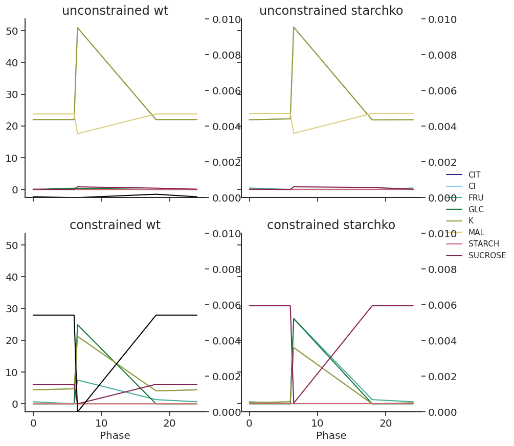
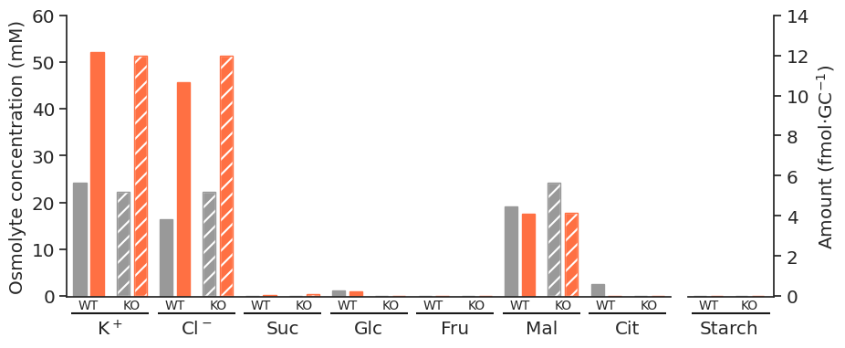
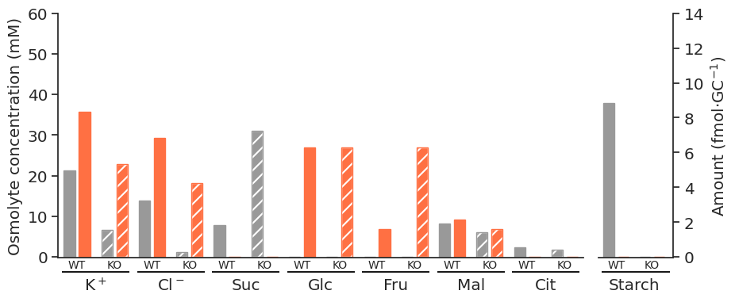
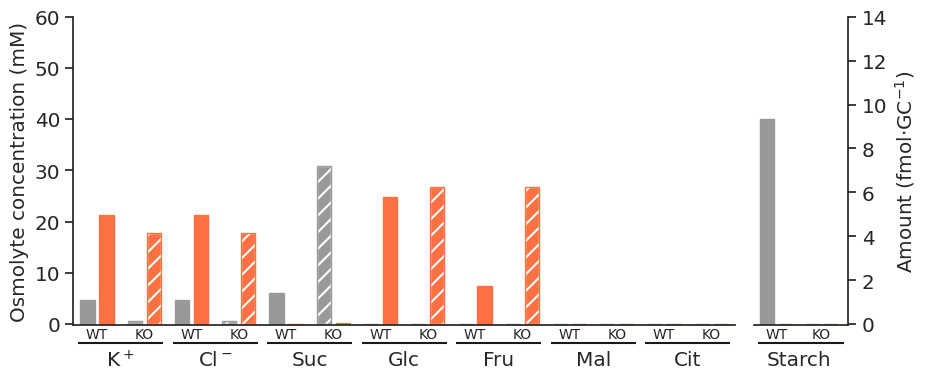
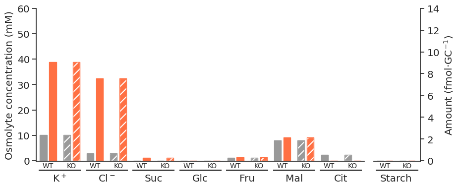
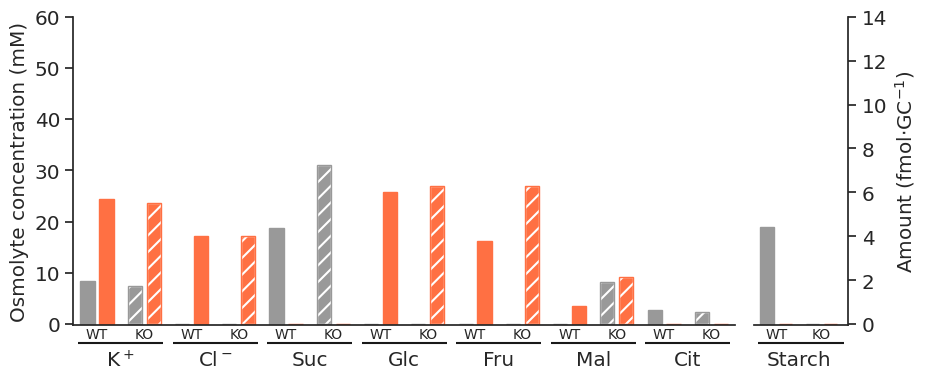

import itertools
import os
import re
import string
import xml.etree.ElementTree as ET
import cobra
import matplotlib as mpl
import matplotlib.patches as mpatches
import matplotlib.pyplot as plt
import numpy as np
import pandas as pd
import seaborn as sns
from IPython.display import SVG
from matplotlib.ticker import MultipleLocator
from mmon_gcm.analysing import get_escher_map
from mmon_gcm.supermodel import SuperModelAnalysing solutions
Setup
sns.set_theme()
sns.set_style("ticks")
sns.set_palette(
sns.color_palette(
[
"#332288",
"#88CCEE",
"#44AA99",
"#117733",
"#999933",
"#DDCC77",
"#CC6677",
"#882255",
"#AA4499",
]
)
)
colours = sns.color_palette()
params = {
"xtick.labelsize": "large",
"ytick.labelsize": "large",
"axes.labelsize": "large",
"axes.titlesize": "x-large",
#"axes.labelweight": "bold",
#"axes.titleweight": "bold",
#"font.weight": "bold",
"axes.spines.right": False,
"axes.spines.top": False,
"legend.frameon": False,
}
#plt.rcParams['font.family'] = 'Arial'
plt.rcParams.update(params)def get_multiphase_fluxes(df, reaction):
reaction_phased = [f"{reaction}_{i+1}" for i in range(4)]
selected_df = df.loc[reaction_phased, "fluxes"]
return selected_dfdef convert_phases_to_times(df, phase_times=[6, 6.5, 18, 24]):
df.index = pd.MultiIndex.from_tuples([(row[0], phase_times[row[1] - 1]) for row in df.index], names=df.index.names)
df = df.reorder_levels(["Phase", "Reaction"]).sort_index()
df = df.append(pd.concat([df.loc[24]], keys=[0]))
df = df.sort_index()
df = df.reorder_levels(["Reaction", "Phase"]).sort_index()
return dfdef select_volume_based_on_id(reaction_id, SuperModel):
total_gc_volume = SuperModel.get_volumes(per_guard_cell=False)
if "total" in reaction_id:
phase_volumes = total_gc_volume = SuperModel.get_volumes(per_guard_cell=False)
elif "v_gc" in reaction_id:
phase_volumes = total_gc_volume = SuperModel.get_volumes(per_guard_cell=False) * SuperModel.Vac_frac
elif "c_gc" in reaction_id:
phase_volumes = total_gc_volume = SuperModel.get_volumes(per_guard_cell=False) * (1 - SuperModel.Vac_frac)
elif "p_gc" in reaction_id:
phase_volumes = [1] * 4
else:
raise ValueError(f"Don't know how to deal with {reaction_id}")
return phase_volumesdef convert_to_conc(row, SuperModel, phases_in_df=[0, 6, 6.5, 18, 24]):
phase = row.name[1]
phase_conversion_dict = {
phases_in_df[0]: 4,
phases_in_df[1]: 1,
phases_in_df[2]: 2,
phases_in_df[3]: 3,
phases_in_df[4]: 4,
}
phase_volumes = select_volume_based_on_id(row.name[0], SuperModel)
volume_for_phase = phase_volumes[phase_conversion_dict[phase] - 1]
return row / volume_for_phasedef get_metabolite_df(solutions_df, concentrations=True, total_mets=None, SuperModel=None):
if total_mets == None:
total_mets = ["SUCROSE", "GLC", "MAL", "FRU", "K", "Cl", "CIT"]
total_mets_reactions = [met + "_total_pseudolinker" for met in total_mets] + ["STARCH_p_gc_Linker"]
total_mets_reactions_phased = [f"{reaction}_{i+1}" for i in range(4) for reaction in total_mets_reactions]
met_df = (solutions_df.loc[total_mets_reactions]).copy()
# change index to phase times instead of tags
met_df = convert_phases_to_times(met_df)
if concentrations == True:
met_df = met_df.apply(convert_to_conc, args=([SuperModel]), axis=1)
met_df = met_df.reorder_levels(["Phase", "Reaction"]).sort_index()
met_df.index = pd.MultiIndex.from_tuples(
[(index[0], index[1].split("_")[0]) for index in met_df.index],
names=met_df.index.names,
)
return met_dfdef get_closed_open_values(met_df_mm, light, atpase):
open_closed_dict = {}
for genotype in ["wt", "starchko"]:
open_closed_dict[genotype] = {}
open_closed_dict[genotype]["closed"] = met_df_mm.loc[~(met_df_mm.index == (6, "STARCH"))].loc[
6, (light, atpase, genotype, "fluxes")
]
open_closed_dict[genotype]["open"] = met_df_mm.loc[~(met_df_mm.index == (6.5, "STARCH"))].loc[
6.5, (light, atpase, genotype, "fluxes")
]
return open_closed_dictdef get_closed_open_values(met_df_mm, light, atpase):
open_closed_dict = {}
for genotype in ["wt", "starchko"]:
open_closed_dict[genotype] = {}
open_closed_dict[genotype]["closed"] = met_df_mm.loc[6, (light, atpase, genotype, "fluxes")]
open_closed_dict[genotype]["open"] = met_df_mm.loc[6.5, (light, atpase, genotype, "fluxes")]
return open_closed_dictdef get_totals_plot(specific_met_df):
colours = ["#999999ff", "#ff7043ff"]
mpl.rcParams["hatch.linewidth"] = 1.5
fig, axs = plt.subplots(1, 2, figsize=(10, 4), gridspec_kw={"width_ratios": [7, 1]})
closed_metabolite_df = specific_met_df.loc[6.0].drop("STARCH")
open_metabolite_df = specific_met_df.loc[6.5].drop("STARCH")
# plot wt
axs[0].bar(
np.array(range(len(closed_metabolite_df))) * 2 - 0.05,
closed_metabolite_df["wt"],
color=colours[0],
width=-0.3,
align="edge",
edgecolor=colours[0],
)
axs[0].bar(
np.array(range(len(open_metabolite_df))) * 2 + 0.05,
open_metabolite_df["wt"],
color=colours[1],
width=0.3,
align="edge",
edgecolor=colours[1],
)
axs[0].bar(
np.array(range(len(closed_metabolite_df))) * 2 + 1 - 0.05,
closed_metabolite_df["starchko"],
color=colours[0],
width=-0.3,
align="edge",
edgecolor="white",
hatch="//",
)
axs[0].bar(
np.array(range(len(closed_metabolite_df))) * 2 + 1 + 0.05,
open_metabolite_df["starchko"],
color=colours[1],
width=0.3,
align="edge",
edgecolor="white",
hatch="//",
)
axs[0].bar(
np.array(range(len(closed_metabolite_df))) * 2 + 1 - 0.05,
closed_metabolite_df["starchko"],
color="none",
width=-0.3,
align="edge",
edgecolor=colours[0],
)
axs[0].bar(
np.array(range(len(closed_metabolite_df))) * 2 + 1 + 0.05,
open_metabolite_df["starchko"],
color="none",
width=0.3,
align="edge",
edgecolor=colours[1],
)
x_ticks_pad = 12
axs[0].tick_params(axis="x", which="both", bottom=False, pad=x_ticks_pad)
axs[1].tick_params(axis="x", which="both", bottom=False, pad=x_ticks_pad)
starch_closed = specific_met_df.loc[(6.0, "STARCH")]
starch_open = specific_met_df.loc[(6.5, "STARCH")]
axs[1].bar(
-0.05,
starch_closed["wt"],
width=-0.3,
align="edge",
edgecolor=colours[0],
color=colours[0],
)
axs[1].bar(
0.05,
starch_open["wt"],
width=0.3,
align="edge",
edgecolor=colours[1],
color=colours[1],
)
axs[1].bar(
1 - 0.05,
starch_closed["starchko"],
width=-0.3,
align="edge",
edgecolor=colours[0],
color=colours[0],
hatch="//",
)
axs[1].bar(
1 + 0.05,
starch_open["starchko"],
width=0.3,
align="edge",
edgecolor=colours[1],
color=colours[1],
hatch="//",
)
main_x_tick_labels = [name[0] + name[1:3].lower() for name in open_metabolite_df.index]
main_x_tick_labels_superscripted = []
for label in main_x_tick_labels:
if label == "K":
new_label = r"K$^+$"
elif label == "Cl":
new_label = r"Cl$^-$"
else:
new_label = label
main_x_tick_labels_superscripted.append(new_label)
main_x_tick_labels = main_x_tick_labels_superscripted
main_x_ticks = np.array(range(len(closed_metabolite_df))) * 2 + 0.5
ax0_y_max = 60
axs[0].set_xticks(main_x_ticks)
axs[0].set_xticklabels(main_x_tick_labels)
axs[0].set_ylim(-0.1, ax0_y_max)
axs[0].set_xlim(-0.5, 13.5)
axs[0].set_ylabel(r"Osmolyte concentration (mM)")
axs[0].yaxis.set_major_locator(MultipleLocator(10))
# axs[0].yaxis.set_minor_locator(AutoMinorLocator(2))
for x_loc in [(x - 1) * 2 + 1.5 for x in range(len(closed_metabolite_df))]:
axs[0].hlines(-3.7, x_loc + 0.1, x_loc + 1.9, clip_on=False, color="black", alpha=0.9)
for offset, label in zip([0.5, 1.5], ["WT", "KO"]):
axs[0].text(x_loc + offset, -2, label, ha="center", va="center", size="small")
starch_x_tick_labels = ["Starch"]
starch_x_ticks = [0.5]
ax1_y_max = 14
axs[1].set_xticks(starch_x_ticks)
axs[1].set_xticklabels(starch_x_tick_labels)
axs[1].set_ylim(-0.1 * ax1_y_max / ax0_y_max, ax1_y_max)
axs[1].yaxis.set_label_position("right")
axs[1].yaxis.tick_right()
axs[1].yaxis.set_major_locator(MultipleLocator(2))
# axs[1].yaxis.set_minor_locator(AutoMinorLocator(2))
axs[1].spines["right"].set_visible(True)
axs[1].spines["left"].set_visible(False)
axs[1].set_ylabel(r"Amount (fmol$\cdot$GC$^{-1}$)")
for x_loc in [(x - 1) * 2 + 1.5 for x in [0]]:
axs[1].hlines(
-3.7 * ax1_y_max / ax0_y_max,
x_loc + 0.1,
x_loc + 2,
clip_on=False,
color="black",
alpha=0.9,
)
for offset, label in zip([0.5, 1.5], ["WT", "KO"]):
axs[1].text(
x_loc + offset,
-2 * ax1_y_max / ax0_y_max,
label,
ha="center",
va="center",
size="small",
)
colors = {"EoN": "#999999ff", "30 mins": "#ff7043ff"}
labels = list(colors.keys())
handles = [plt.Rectangle((0, 0), 1, 1, color=colors[label]) for label in labels]
# plt.legend(handles, labels)
plt.subplots_adjust(wspace=0.05)
return figdef getgcdiagram(
modeldf,
modelname,
condition_label,
genotype_label,
scale_height,
minimal=True,
flipped=False,
display_svg=True,
debug=False,
brokenaxis=False,
aspser=False,
save_png=True,
):
if minimal == True:
if aspser == True:
tree = ET.parse("../inputs/fluxmap_template_aspserminimal.svg")
root = tree.getroot
else:
tree = ET.parse("../inputs/fluxmap_template_minimal.svg")
root = tree.getroot
else:
tree = ET.parse("../inputs/fluxmap_template.svg")
root = updatetextnames(tree, condition_label, genotype_label, debug=debug)
# get the background and the flipped background, and set the opacity of the wrong one to 0
background = getelement(
tree,
condition_label=condition_label,
genotype_label=genotype_label,
compartment_label="Background",
debug=debug,
)
background_flipped = getelement(
tree,
condition_label=condition_label,
genotype_label=genotype_label,
compartment_label="Background_flipped",
debug=debug,
)
if flipped == True:
updateelementopacity(background, 0)
updateelementopacity(background_flipped, 1)
else:
updateelementopacity(background, 1)
updateelementopacity(background_flipped, 0)
if minimal is not True:
# get the scale bar, either keep the hatched or don't, and set the height to the scale conc specified
for phase_label in ["EoN", "30", "EoN_hatched", "30_hatched"]:
scale_bar_element = getelement(
tree,
condition_label=condition_label,
genotype_label=genotype_label,
compartment_label="other",
metabolite_label="scale",
phase_label=phase_label,
debug=debug,
)
if "hatched" in phase_label:
updateelementopacity(scale_bar_element, int(flipped))
else:
updateelementopacity(scale_bar_element, int(not flipped))
updateelementheight(scale_bar_element, scale_height)
for row in modeldf.iterrows():
compartment_label = row[0][1]
metabolite_label = row[0][0]
if debug == True:
print(row[0], row[1])
try:
eon_element = getelement(
tree,
condition_label=condition_label,
genotype_label=genotype_label,
compartment_label=compartment_label,
metabolite_label=metabolite_label,
phase_label="EoN",
debug=debug,
)
thirty_element = getelement(
tree,
condition_label=condition_label,
genotype_label=genotype_label,
compartment_label=compartment_label,
metabolite_label=metabolite_label,
phase_label="30",
debug=debug,
)
eon_element_hatched = getelement(
tree,
condition_label=condition_label,
genotype_label=genotype_label,
compartment_label=compartment_label,
metabolite_label=metabolite_label,
phase_label="EoN_hatched",
debug=debug,
)
thirty_element_hatched = getelement(
tree,
condition_label=condition_label,
genotype_label=genotype_label,
compartment_label=compartment_label,
metabolite_label=metabolite_label,
phase_label="30_hatched",
debug=debug,
)
if flipped == True:
updateelementopacity(eon_element, 0)
updateelementopacity(eon_element_hatched, 1)
updateelementopacity(thirty_element, 0)
updateelementopacity(thirty_element_hatched, 1)
else:
updateelementopacity(eon_element, 1)
updateelementopacity(eon_element_hatched, 0)
updateelementopacity(thirty_element, 1)
updateelementopacity(thirty_element_hatched, 0)
if row[1]["EoN"] <= 0.0001:
updateelementheight(eon_element, 0.5)
updateelementheight(eon_element_hatched, 0.5)
else:
updateelementheight(eon_element, row[1]["EoN"])
updateelementheight(eon_element_hatched, row[1]["EoN"])
if row[1]["30 mins"] <= 0.0001:
updateelementheight(thirty_element, 0.5)
updateelementheight(thirty_element_hatched, 0.5)
else:
updateelementheight(thirty_element, row[1]["30 mins"])
updateelementheight(thirty_element_hatched, row[1]["30 mins"])
except AttributeError:
print(f"{row[0]} not in template")
svgpath = f"../outputs/flux_maps/{modelname}.svg"
tree.write(svgpath, encoding="UTF-8", xml_declaration=True)
if display_svg == True:
display(SVG(svgpath))
return svgpath
def getelement(
tree,
condition_label,
genotype_label=None,
compartment_label=None,
metabolite_label=None,
phase_label=None,
debug=False,
):
if debug == True:
print(
"Trying: ",
condition_label,
genotype_label,
compartment_label,
metabolite_label,
phase_label,
)
root = tree.getroot()
if debug == True:
print("Got root", end=" ")
for condition in root.findall("{http://www.w3.org/2000/svg}g"):
if condition.get("{http://www.inkscape.org/namespaces/inkscape}label") == "condition":
if debug == True:
print(condition_label, end=" ")
if genotype_label == None:
return conditon
else:
for genotype in condition:
if genotype.get("{http://www.inkscape.org/namespaces/inkscape}label") == "genotype":
if debug == True:
print(genotype_label, end=" ")
if compartment_label == None:
return genotype
else:
for compartment in genotype:
if (
compartment.get("{http://www.inkscape.org/namespaces/inkscape}label")
== compartment_label
):
if debug == True:
print(compartment_label, end=" ")
if metabolite_label == None:
return compartment
else:
for metabolite in compartment:
if (
metabolite.get("{http://www.inkscape.org/namespaces/inkscape}label")
== metabolite_label
):
if debug == True:
print(metabolite_label, end=" ")
if phase_label == None:
return metabolite
else:
for phase in metabolite:
if (
phase.get(
"{http://www.inkscape.org/namespaces/inkscape}label"
)
== phase_label
):
return phase
def updateelementopacity(element, opacity):
style_attribs = element.attrib["style"].split(";")
for i, style in enumerate(style_attribs):
if re.match(r"^opacity", style):
del style_attribs[i]
style_attribs.append("opacity:" + str(opacity))
element.attrib["style"] = ";".join(style_attribs)
return element
def updateelementheight(element, height):
try:
element.attrib["height"]
element.attrib["height"] = str(height)
except:
element.attrib["d"] = (
element.attrib["d"].split("v")[0] + "v -" + str(height) + " h" + element.attrib["d"].split("h")[1]
)
return element
def updatetextnames(tree, condition_label, genotype_label, debug=False):
root = tree.getroot()
for condition in root.findall("{http://www.w3.org/2000/svg}g"):
if condition.get("{http://www.inkscape.org/namespaces/inkscape}label") == "condition":
for genotype in condition:
if genotype.get("{http://www.inkscape.org/namespaces/inkscape}label") == "condition_name":
for tspan in genotype:
tspan.text = condition_label
if debug == True:
print("Condition label changed to " + tspan.text)
elif genotype.get("{http://www.inkscape.org/namespaces/inkscape}label") == "genotype":
for compartment in genotype:
if compartment.get("{http://www.inkscape.org/namespaces/inkscape}label") == "genotype_name":
for tspan in compartment:
tspan.text = genotype_label
if debug == True:
print("Genotype label changed to " + tspan.text)
return rootparameters_df = pd.read_csv("../inputs/arabidopsis_parameters.csv", index_col=0)
four_stage_GC_model = cobra.io.sbml.read_sbml_model("../models/4_stage_GC.xml") # read model
arabidopsis_supermodel = SuperModel(parameters_df.loc[:, "Value"], fba_model=four_stage_GC_model);No objective coefficients in model. Unclear what should be optimizedImport solutions and set up dataframes
solutions_dict = {
file[:-4]: pd.read_csv(f"../outputs/model_solutions/{file}", index_col=0)
for file in os.listdir("../outputs/model_solutions")
if file.endswith(".csv")
}Check we’re in a good range for the solver
maxes = {}
mins = {}
for name, solution in solutions_dict.items():
maxes[name] = abs(solution.loc[:, "fluxes"]).max()
mins[name] = abs(solution.loc[:, "fluxes"][abs(solution.loc[:, "fluxes"]) > 10**-7]).min()mins{'blue_constrained_wt': 4.31244284473815e-06,
'blue_constrained_starchko': 4.291294149081833e-06,
'white_unconstrained_starchko': 8.359240012413899e-07,
'nops_unconstrained_wt': 2.7073713978167244e-06,
'blue_unconstrained_wt': 3.6707915071407277e-07,
'blue_unconstrained_starchko': 8.34944986206833e-07,
'nops_constrained_wt': 4.969355485606848e-06,
'white_unconstrained_wt': 5.523520793885328e-07,
'white_constrained_wt': 4.281246479161383e-06,
'white_constrained_starchko': 4.2812129271807015e-06,
'nops_constrained_starchko': 5.607231189748266e-06,
'nops_unconstrained_starchko': 2.708509015023009e-06}abs(
solutions_dict["blue_unconstrained_wt"].loc[:, "fluxes"][
abs(solutions_dict["blue_unconstrained_wt"].loc[:, "fluxes"]) > 10**-7
]
).sort_values()MALTOSE_c_gc_Linker_3 3.670792e-07
MALTOSE_c_gc_Linker_1 3.670792e-07
MALTOSE_c_gc_Linker_2 3.670792e-07
PGLUCISOM_RXN_c_gc_1 3.004235e-06
6PFRUCTPHOS_RXN_c_gc_1 3.004235e-06
...
PLASTOQUINOL_PLASTOCYANIN_REDUCTASE_RXN_p_me_3 1.214954e+02
RXN490_3650_p_me_3 2.429908e+02
Photon_tx_me_3 4.859816e+02
Photon_ep_me_3 4.859816e+02
EX_X_Photon_t_me_3 4.859816e+02
Name: fluxes, Length: 1136, dtype: float64abs(
solutions_dict["blue_unconstrained_starchko"].loc[:, "fluxes"][
abs(solutions_dict["blue_unconstrained_starchko"].loc[:, "fluxes"]) > 10**-7
]
).sort_values()PROTON_ATPase_c_gc_4 8.349450e-07
Cl_PROTON_ec_gc_4 8.349450e-07
Cl_a_tx_4 1.669890e-06
K_a_tx_4 1.669890e-06
Cl_ae_gc_4 1.669890e-06
...
PLASTOQUINOL_PLASTOCYANIN_REDUCTASE_RXN_p_me_3 1.214954e+02
RXN490_3650_p_me_3 2.429908e+02
Photon_tx_me_3 4.859816e+02
Photon_ep_me_3 4.859816e+02
EX_X_Photon_t_me_3 4.859816e+02
Name: fluxes, Length: 1133, dtype: float64With solver tolerance of 10e-7 we treat any fluxes below that value as being effectively 0, and this doesn’t include any fluxes we’re interested in. They’re 10-5 and above, so there is a difference of two orders of magnitude.
conditions_permutations = [
["blue", "white", "nops"],
["unconstrained", "constrained"],
["wt", "starchko"],
["fluxes", "minimum", "maximum"],
]
solutions_df_columns = pd.MultiIndex.from_product(
conditions_permutations, names=["Light", "ATPase", "Starch", "Solution"]
)
solutions_df = pd.DataFrame(columns=solutions_df_columns)
conditions_list_of_lists = [
["blue", "white", "nops"],
["unconstrained", "constrained"],
["wt", "starchko"],
]
conditions_iterations = list(itertools.product(*conditions_list_of_lists))
cols_to_drop = []
for conditions in conditions_iterations:
light_condition, atpase_condition, starch_condition = conditions
file_name = f"../outputs/model_solutions/{light_condition}_{atpase_condition}_{starch_condition}.csv"
try:
condition_df = pd.read_csv(file_name, index_col=0)
for col in ["fluxes", "minimum", "maximum"]:
solutions_df.loc[:, (light_condition, atpase_condition, starch_condition, col)] = condition_df.loc[:, col]
except:
cols_to_drop.append(conditions)
print(f"File {file_name} doesn't exist, skipping")
solutions_df_unphased = solutions_df.copy()
index_phased = pd.MultiIndex.from_tuples(
[
(reaction[:-2], int(reaction[-1])) if reaction[-1] in ["1", "2", "3", "4"] else (reaction, None)
for reaction in solutions_df.index
],
names=["Reaction", "Phase"],
)
solutions_df.index = index_phased
solutions_df = solutions_df.mask(abs(solutions_df) < 10**-7, 0) # drop fluxes below 10^-8
solutions_df = solutions_df.drop(cols_to_drop, axis=1)/tmp/ipykernel_5280/3555352746.py:27: DeprecationWarning: In a future version, `df.iloc[:, i] = newvals` will attempt to set the values inplace instead of always setting a new array. To retain the old behavior, use either `df[df.columns[i]] = newvals` or, if columns are non-unique, `df.isetitem(i, newvals)`
solutions_df.loc[:, (light_condition, atpase_condition, starch_condition, col)] = condition_df.loc[:, col]
/tmp/ipykernel_5280/3555352746.py:27: DeprecationWarning: In a future version, `df.iloc[:, i] = newvals` will attempt to set the values inplace instead of always setting a new array. To retain the old behavior, use either `df[df.columns[i]] = newvals` or, if columns are non-unique, `df.isetitem(i, newvals)`
solutions_df.loc[:, (light_condition, atpase_condition, starch_condition, col)] = condition_df.loc[:, col]
/tmp/ipykernel_5280/3555352746.py:27: DeprecationWarning: In a future version, `df.iloc[:, i] = newvals` will attempt to set the values inplace instead of always setting a new array. To retain the old behavior, use either `df[df.columns[i]] = newvals` or, if columns are non-unique, `df.isetitem(i, newvals)`
solutions_df.loc[:, (light_condition, atpase_condition, starch_condition, col)] = condition_df.loc[:, col]
/tmp/ipykernel_5280/3555352746.py:27: DeprecationWarning: In a future version, `df.iloc[:, i] = newvals` will attempt to set the values inplace instead of always setting a new array. To retain the old behavior, use either `df[df.columns[i]] = newvals` or, if columns are non-unique, `df.isetitem(i, newvals)`
solutions_df.loc[:, (light_condition, atpase_condition, starch_condition, col)] = condition_df.loc[:, col]
/tmp/ipykernel_5280/3555352746.py:27: DeprecationWarning: In a future version, `df.iloc[:, i] = newvals` will attempt to set the values inplace instead of always setting a new array. To retain the old behavior, use either `df[df.columns[i]] = newvals` or, if columns are non-unique, `df.isetitem(i, newvals)`
solutions_df.loc[:, (light_condition, atpase_condition, starch_condition, col)] = condition_df.loc[:, col]
/tmp/ipykernel_5280/3555352746.py:27: DeprecationWarning: In a future version, `df.iloc[:, i] = newvals` will attempt to set the values inplace instead of always setting a new array. To retain the old behavior, use either `df[df.columns[i]] = newvals` or, if columns are non-unique, `df.isetitem(i, newvals)`
solutions_df.loc[:, (light_condition, atpase_condition, starch_condition, col)] = condition_df.loc[:, col]
/tmp/ipykernel_5280/3555352746.py:27: DeprecationWarning: In a future version, `df.iloc[:, i] = newvals` will attempt to set the values inplace instead of always setting a new array. To retain the old behavior, use either `df[df.columns[i]] = newvals` or, if columns are non-unique, `df.isetitem(i, newvals)`
solutions_df.loc[:, (light_condition, atpase_condition, starch_condition, col)] = condition_df.loc[:, col]
/tmp/ipykernel_5280/3555352746.py:27: DeprecationWarning: In a future version, `df.iloc[:, i] = newvals` will attempt to set the values inplace instead of always setting a new array. To retain the old behavior, use either `df[df.columns[i]] = newvals` or, if columns are non-unique, `df.isetitem(i, newvals)`
solutions_df.loc[:, (light_condition, atpase_condition, starch_condition, col)] = condition_df.loc[:, col]
/tmp/ipykernel_5280/3555352746.py:27: DeprecationWarning: In a future version, `df.iloc[:, i] = newvals` will attempt to set the values inplace instead of always setting a new array. To retain the old behavior, use either `df[df.columns[i]] = newvals` or, if columns are non-unique, `df.isetitem(i, newvals)`
solutions_df.loc[:, (light_condition, atpase_condition, starch_condition, col)] = condition_df.loc[:, col]
/tmp/ipykernel_5280/3555352746.py:27: DeprecationWarning: In a future version, `df.iloc[:, i] = newvals` will attempt to set the values inplace instead of always setting a new array. To retain the old behavior, use either `df[df.columns[i]] = newvals` or, if columns are non-unique, `df.isetitem(i, newvals)`
solutions_df.loc[:, (light_condition, atpase_condition, starch_condition, col)] = condition_df.loc[:, col]
/tmp/ipykernel_5280/3555352746.py:27: DeprecationWarning: In a future version, `df.iloc[:, i] = newvals` will attempt to set the values inplace instead of always setting a new array. To retain the old behavior, use either `df[df.columns[i]] = newvals` or, if columns are non-unique, `df.isetitem(i, newvals)`
solutions_df.loc[:, (light_condition, atpase_condition, starch_condition, col)] = condition_df.loc[:, col]
/tmp/ipykernel_5280/3555352746.py:27: DeprecationWarning: In a future version, `df.iloc[:, i] = newvals` will attempt to set the values inplace instead of always setting a new array. To retain the old behavior, use either `df[df.columns[i]] = newvals` or, if columns are non-unique, `df.isetitem(i, newvals)`
solutions_df.loc[:, (light_condition, atpase_condition, starch_condition, col)] = condition_df.loc[:, col]filter_df = solutions_df.filter(like='fluxes', axis=1)
filter_df = filter_df[filter_df.index.get_level_values(0).str.contains('gc_Linker')]
filter_df
# Get the unique first-level indices
unique_first_level_indices = filter_df.index.get_level_values('Reaction').unique()
# Define a threshold
threshold = 1e-7 # You can adjust this value to your desired threshold
# Check if the values within each group are within the threshold
for idx in unique_first_level_indices:
group = filter_df.xs(key=idx, level='Reaction')
if (group <= (group.iloc[0] + threshold)).all().all() and (group >= (group.iloc[0] - threshold)).all().all():
#print(f"Values for First_Level '{idx}' are within the threshold.")
pass
else:
print(f"Values for First_Level '{idx}' are not within the threshold.")
#print(filter_df.loc[idx])Values for First_Level 'CIT_c_gc_Linker' are not within the threshold.
Values for First_Level 'Cl_c_gc_Linker' are not within the threshold.
Values for First_Level 'FRU_c_gc_Linker' are not within the threshold.
Values for First_Level 'GLC_c_gc_Linker' are not within the threshold.
Values for First_Level 'K_c_gc_Linker' are not within the threshold.
Values for First_Level 'MAL_c_gc_Linker' are not within the threshold.
Values for First_Level 'SUCROSE_c_gc_Linker' are not within the threshold.
Values for First_Level 'Cl_v_gc_Linker' are not within the threshold.
Values for First_Level 'FRU_v_gc_Linker' are not within the threshold.
Values for First_Level 'GLC_v_gc_Linker' are not within the threshold.
Values for First_Level 'K_v_gc_Linker' are not within the threshold.
Values for First_Level 'MAL_v_gc_Linker' are not within the threshold.
Values for First_Level 'SUCROSE_v_gc_Linker' are not within the threshold.
Values for First_Level 'aMAL_v_gc_Linker' are not within the threshold.
Values for First_Level 'STARCH_p_gc_Linker' are not within the threshold.
Values for First_Level 'MALTOSE_c_gc_Linker' are not within the threshold.Plotting Linker fluxes
All gc osmolytes
def get_linkers_df(
solutions_df,
concentrations=True,
osmolytes_path="../inputs/osmolytes.csv",
SuperModel=None,
):
osmolytes = pd.read_csv(osmolytes_path, index_col=0)
gc_osmolytes = [os for os in osmolytes.index if os[-2:] == "gc"]
gc_osmolytes_linker_reactions = [os + "_Linker" for os in gc_osmolytes]
linkers_df = solutions_df.loc[gc_osmolytes_linker_reactions].copy()
linkers_df = convert_phases_to_times(linkers_df)
if concentrations == True:
linkers_df = linkers_df.apply(convert_to_conc, args=([SuperModel]), axis=1)
linkers_df = linkers_df.reorder_levels(["Phase", "Reaction"]).sort_index()
index_key = {"p": "Chloroplast", "v": "Vacuole", "c": "Cytoplasm"}
linkers_df.index = pd.MultiIndex.from_tuples(
[
(
index[0],
"_".join(index[1].split("_")[:-3]),
index_key[index[1].split("_")[-3]],
)
for index in linkers_df.index
],
names=linkers_df.index.names + ["Compartment"],
)
return linkers_dflinkers_df = get_linkers_df(solutions_df, SuperModel=arabidopsis_supermodel)/tmp/ipykernel_5280/2463702405.py:4: FutureWarning: The frame.append method is deprecated and will be removed from pandas in a future version. Use pandas.concat instead.
df = df.append(pd.concat([df.loc[24]], keys=[0]))linkers_df.loc[(slice(None), 'MAL', slice(None))]| Light | blue | ... | nops | |||||||||||||||||||
|---|---|---|---|---|---|---|---|---|---|---|---|---|---|---|---|---|---|---|---|---|---|---|
| ATPase | unconstrained | constrained | ... | unconstrained | constrained | |||||||||||||||||
| Starch | wt | starchko | wt | starchko | ... | wt | starchko | wt | starchko | |||||||||||||
| Solution | fluxes | minimum | maximum | fluxes | minimum | maximum | fluxes | minimum | maximum | fluxes | ... | maximum | fluxes | minimum | maximum | fluxes | minimum | maximum | fluxes | minimum | maximum | |
| Phase | Compartment | |||||||||||||||||||||
| 0.0 | Cytoplasm | 6.661263 | NaN | NaN | 0.000000 | NaN | NaN | 5.505091 | NaN | NaN | 1.772218 | ... | NaN | 0.000000 | NaN | NaN | 0.000000 | NaN | NaN | 0.000000 | NaN | NaN |
| Vacuole | 17.944579 | NaN | NaN | 22.517698 | NaN | NaN | 7.671832 | NaN | NaN | 5.746564 | ... | NaN | 7.528567 | NaN | NaN | 0.000000 | NaN | NaN | 7.659888 | NaN | NaN | |
| 6.0 | Cytoplasm | 0.000000 | 0.0 | 59.527114 | 0.000000 | 0.0 | 59.527114 | 0.000000 | 0.0 | 59.527114 | 0.000000 | ... | 59.527114 | 0.000000 | 0.0 | 59.527114 | 0.000000 | 0.0 | 59.527114 | 0.000000 | 0.0 | 0.000000 |
| Vacuole | 17.944579 | 0.0 | 46.298866 | 22.517698 | 0.0 | 46.298866 | 7.671832 | 0.0 | 46.298866 | 5.746564 | ... | 46.298866 | 7.528567 | 0.0 | 46.298866 | 0.000000 | 0.0 | 46.298866 | 7.659888 | 0.0 | 46.298866 | |
| 6.5 | Cytoplasm | 70.356673 | 0.0 | 72.147605 | 71.629349 | 0.0 | 58.166494 | 37.324187 | 0.0 | 72.147605 | 27.957588 | ... | 72.147605 | 36.627203 | 0.0 | 72.147605 | 14.534914 | 0.0 | 72.147605 | 37.266089 | 0.0 | 58.166494 |
| Vacuole | 0.000000 | 0.0 | 56.114804 | 0.000000 | 0.0 | 56.114804 | 0.000000 | 0.0 | 56.114804 | 0.000000 | ... | 56.114804 | 0.000000 | 0.0 | 56.114804 | 0.000000 | 0.0 | 56.114804 | 0.000000 | 0.0 | 56.114804 | |
| 18.0 | Cytoplasm | 15.283172 | NaN | NaN | 0.000000 | NaN | NaN | 14.874878 | NaN | NaN | 11.142004 | ... | NaN | 0.000000 | NaN | NaN | 0.000000 | NaN | NaN | 0.000000 | NaN | NaN |
| Vacuole | 17.944579 | NaN | NaN | 22.517698 | NaN | NaN | 7.671832 | NaN | NaN | 5.746564 | ... | NaN | 7.528567 | NaN | NaN | 0.000000 | NaN | NaN | 7.659888 | NaN | NaN | |
| 24.0 | Cytoplasm | 6.661263 | NaN | NaN | 0.000000 | NaN | NaN | 5.505091 | NaN | NaN | 1.772218 | ... | NaN | 0.000000 | NaN | NaN | 0.000000 | NaN | NaN | 0.000000 | NaN | NaN |
| Vacuole | 17.944579 | NaN | NaN | 22.517698 | NaN | NaN | 7.671832 | NaN | NaN | 5.746564 | ... | NaN | 7.528567 | NaN | NaN | 0.000000 | NaN | NaN | 7.659888 | NaN | NaN | |
10 rows × 36 columns
# Combine metabolites with multiple charges (MAL, CIT, HIS) in linkers_df
mets_to_combine = ['aCIT', 'aMAL', 'bHIS']
for idx in linkers_df.index:
if idx[1] in mets_to_combine:
main_met_idx = (idx[0], idx[1][1:], idx[2])
linkers_df.loc[main_met_idx] = linkers_df.loc[main_met_idx] + linkers_df.loc[idx]
linkers_df = linkers_df.drop(idx)linkers_df.loc[(slice(None), 'MAL', slice(None))]| Light | blue | ... | nops | |||||||||||||||||||
|---|---|---|---|---|---|---|---|---|---|---|---|---|---|---|---|---|---|---|---|---|---|---|
| ATPase | unconstrained | constrained | ... | unconstrained | constrained | |||||||||||||||||
| Starch | wt | starchko | wt | starchko | ... | wt | starchko | wt | starchko | |||||||||||||
| Solution | fluxes | minimum | maximum | fluxes | minimum | maximum | fluxes | minimum | maximum | fluxes | ... | maximum | fluxes | minimum | maximum | fluxes | minimum | maximum | fluxes | minimum | maximum | |
| Phase | Compartment | |||||||||||||||||||||
| 0.0 | Cytoplasm | 6.661263 | NaN | NaN | 0.000000 | NaN | NaN | 5.505091 | NaN | NaN | 1.772218 | ... | NaN | 0.000000 | NaN | NaN | 0.000000 | NaN | NaN | 0.000000 | NaN | NaN |
| Vacuole | 25.635113 | NaN | NaN | 32.168140 | NaN | NaN | 10.959760 | NaN | NaN | 8.209377 | ... | NaN | 10.755095 | NaN | NaN | 0.000000 | NaN | NaN | 10.942697 | NaN | NaN | |
| 6.0 | Cytoplasm | 0.000000 | 0.0 | 59.527114 | 0.000000 | 0.0 | 59.527114 | 0.000000 | 0.0 | 59.527114 | 0.000000 | ... | 59.527114 | 0.000000 | 0.0 | 59.527114 | 0.000000 | 0.0 | 59.527114 | 0.000000 | 0.0 | 0.000000 |
| Vacuole | 25.635113 | 0.0 | 66.141238 | 32.168140 | 0.0 | 66.141238 | 10.959760 | 0.0 | 66.141238 | 8.209377 | ... | 66.141238 | 10.755095 | 0.0 | 66.141238 | 0.000000 | 0.0 | 66.141238 | 10.942697 | 0.0 | 66.141238 | |
| 6.5 | Cytoplasm | 70.356673 | 0.0 | 72.147605 | 71.629349 | 0.0 | 58.166494 | 37.324187 | 0.0 | 72.147605 | 27.957588 | ... | 72.147605 | 36.627203 | 0.0 | 72.147605 | 14.534914 | 0.0 | 72.147605 | 37.266089 | 0.0 | 58.166494 |
| Vacuole | 0.000000 | 0.0 | 80.164005 | 0.000000 | 0.0 | 80.164005 | 0.000000 | 0.0 | 80.164005 | 0.000000 | ... | 80.164005 | 0.000000 | 0.0 | 80.164005 | 0.000000 | 0.0 | 80.164005 | 0.000000 | 0.0 | 80.164005 | |
| 18.0 | Cytoplasm | 15.283172 | NaN | NaN | 0.000000 | NaN | NaN | 14.874878 | NaN | NaN | 11.142004 | ... | NaN | 0.000000 | NaN | NaN | 0.000000 | NaN | NaN | 0.000000 | NaN | NaN |
| Vacuole | 25.635113 | NaN | NaN | 32.168140 | NaN | NaN | 10.959760 | NaN | NaN | 8.209377 | ... | NaN | 10.755095 | NaN | NaN | 0.000000 | NaN | NaN | 10.942697 | NaN | NaN | |
| 24.0 | Cytoplasm | 6.661263 | NaN | NaN | 0.000000 | NaN | NaN | 5.505091 | NaN | NaN | 1.772218 | ... | NaN | 0.000000 | NaN | NaN | 0.000000 | NaN | NaN | 0.000000 | NaN | NaN |
| Vacuole | 25.635113 | NaN | NaN | 32.168140 | NaN | NaN | 10.959760 | NaN | NaN | 8.209377 | ... | NaN | 10.755095 | NaN | NaN | 0.000000 | NaN | NaN | 10.942697 | NaN | NaN | |
10 rows × 36 columns
met_df_mm = get_metabolite_df(solutions_df, SuperModel=arabidopsis_supermodel)/tmp/ipykernel_5280/2463702405.py:4: FutureWarning: The frame.append method is deprecated and will be removed from pandas in a future version. Use pandas.concat instead.
df = df.append(pd.concat([df.loc[24]], keys=[0]))met_df_mm| Light | blue | ... | nops | |||||||||||||||||||
|---|---|---|---|---|---|---|---|---|---|---|---|---|---|---|---|---|---|---|---|---|---|---|
| ATPase | unconstrained | constrained | ... | unconstrained | constrained | |||||||||||||||||
| Starch | wt | starchko | wt | starchko | ... | wt | starchko | wt | starchko | |||||||||||||
| Solution | fluxes | minimum | maximum | fluxes | minimum | maximum | fluxes | minimum | maximum | fluxes | ... | maximum | fluxes | minimum | maximum | fluxes | minimum | maximum | fluxes | minimum | maximum | |
| Phase | Reaction | |||||||||||||||||||||
| 0.0 | CIT | 1.431237 | NaN | NaN | 0.000000 | NaN | NaN | 1.555385 | NaN | NaN | 1.555385 | ... | NaN | 2.423123 | NaN | NaN | 2.777890 | NaN | NaN | 2.465388 | NaN | NaN |
| Cl | 16.524279 | NaN | NaN | 21.954453 | NaN | NaN | 13.391074 | NaN | NaN | 0.718695 | ... | NaN | 2.969559 | NaN | NaN | 0.000000 | NaN | NaN | 0.000000 | NaN | NaN | |
| FRU | 0.000000 | NaN | NaN | 0.458382 | NaN | NaN | 0.659272 | NaN | NaN | 0.658861 | ... | NaN | 0.637511 | NaN | NaN | 0.672046 | NaN | NaN | 0.989743 | NaN | NaN | |
| GLC | 0.633834 | NaN | NaN | 0.000000 | NaN | NaN | 0.000000 | NaN | NaN | 0.000000 | ... | NaN | 0.000000 | NaN | NaN | 0.000000 | NaN | NaN | 0.000000 | NaN | NaN | |
| K | 24.135299 | NaN | NaN | 21.955092 | NaN | NaN | 20.798763 | NaN | NaN | 6.267413 | ... | NaN | 10.238928 | NaN | NaN | 8.333669 | NaN | NaN | 7.396173 | NaN | NaN | |
| MAL | 20.910624 | NaN | NaN | 24.158592 | NaN | NaN | 9.601548 | NaN | NaN | 6.606525 | ... | NaN | 8.077077 | NaN | NaN | 0.000000 | NaN | NaN | 8.217966 | NaN | NaN | |
| STARCH | 0.000244 | NaN | NaN | 0.000000 | NaN | NaN | 0.005126 | NaN | NaN | 0.000000 | ... | NaN | 0.000000 | NaN | NaN | 0.002569 | NaN | NaN | 0.000000 | NaN | NaN | |
| SUCROSE | 0.000000 | NaN | NaN | 0.098507 | NaN | NaN | 7.881207 | NaN | NaN | 31.139004 | ... | NaN | 0.637511 | NaN | NaN | 18.115847 | NaN | NaN | 30.149261 | NaN | NaN | |
| 6.0 | CIT | 2.537007 | 0.0 | 49.435142 | 0.000000 | 0.0 | 49.435142 | 2.469230 | 0.0 | 49.435142 | 1.849573 | ... | 49.435142 | 2.423123 | 0.0 | 49.435142 | 2.777890 | 0.0 | 49.435142 | 2.465388 | 0.0 | 49.435142 |
| Cl | 16.524279 | 0.0 | 89.290671 | 22.232898 | 0.0 | 89.290671 | 13.949171 | 0.0 | 89.290671 | 1.121672 | ... | 89.290671 | 2.969559 | 0.0 | 89.290671 | 0.000000 | 0.0 | 89.290671 | 0.000000 | 0.0 | 80.403347 | |
| FRU | 0.000000 | 0.0 | 178.581341 | 0.000000 | 0.0 | 178.581341 | 0.000000 | 0.0 | 178.581341 | 0.000000 | ... | 178.581341 | 1.275022 | 0.0 | 178.581341 | 0.000000 | 0.0 | 178.581341 | 0.000000 | 0.0 | 160.500964 | |
| GLC | 1.268503 | 0.0 | 178.581341 | 0.000000 | 0.0 | 178.581341 | 0.000000 | 0.0 | 178.581341 | 0.000000 | ... | 178.581341 | 0.000000 | 0.0 | 178.581341 | 0.000000 | 0.0 | 178.581341 | 0.000000 | 0.0 | 160.500964 | |
| K | 24.135299 | 0.0 | 140.262888 | 22.233537 | 0.0 | 140.262888 | 21.356860 | 0.0 | 140.262888 | 6.670390 | ... | 140.262888 | 10.238928 | 0.0 | 140.262888 | 8.333669 | 0.0 | 140.262888 | 7.396173 | 0.0 | 133.708937 | |
| MAL | 19.251970 | 0.0 | 64.494321 | 24.158592 | 0.0 | 64.494321 | 8.230780 | 0.0 | 64.494321 | 6.165242 | ... | 64.494321 | 8.077077 | 0.0 | 64.494321 | 0.000000 | 0.0 | 64.494321 | 8.217966 | 0.0 | 64.494321 | |
| STARCH | 0.000000 | 0.0 | 1000.000000 | 0.000000 | 0.0 | 0.000000 | 0.005126 | 0.0 | 0.285304 | 0.000000 | ... | 1000.000000 | 0.000000 | 0.0 | 0.000000 | 0.002569 | 0.0 | 0.232884 | 0.000000 | 0.0 | 0.000000 | |
| SUCROSE | 0.000000 | 0.0 | 178.581341 | 0.000000 | 0.0 | 178.581341 | 7.881207 | 0.0 | 178.581341 | 31.139004 | ... | 178.581341 | 0.000000 | 0.0 | 178.581341 | 18.787893 | 0.0 | 178.581341 | 31.139004 | 0.0 | 178.581341 | |
| 6.5 | CIT | 0.000000 | 0.0 | 44.869080 | 0.000000 | 0.0 | 44.869080 | 0.000000 | 0.0 | 44.869080 | 0.000000 | ... | 44.869080 | 0.000000 | 0.0 | 44.869080 | 0.000000 | 0.0 | 44.869080 | 0.000000 | 0.0 | 39.265593 |
| Cl | 45.604537 | 0.0 | 108.221407 | 51.357528 | 0.0 | 108.221407 | 29.258708 | 0.0 | 94.698182 | 18.117110 | ... | 108.221407 | 32.501177 | 0.0 | 108.221407 | 17.142857 | 0.0 | 94.698182 | 17.142857 | 0.0 | 86.978907 | |
| FRU | 0.000000 | 0.0 | 216.442814 | 0.000000 | 0.0 | 216.442814 | 6.845391 | 0.0 | 216.442814 | 27.046449 | ... | 216.442814 | 1.365608 | 0.0 | 216.442814 | 16.318627 | 0.0 | 216.442814 | 27.046449 | 0.0 | 216.442814 | |
| GLC | 1.101786 | 0.0 | 216.442814 | 0.000000 | 0.0 | 216.442814 | 27.046452 | 0.0 | 216.442814 | 27.046449 | ... | 216.442814 | 0.000000 | 0.0 | 216.442814 | 25.840051 | 0.0 | 216.442814 | 27.046449 | 0.0 | 216.442814 | |
| K | 52.215252 | 0.0 | 152.876211 | 51.358083 | 0.0 | 152.876211 | 35.692816 | 0.0 | 138.971194 | 22.936568 | ... | 152.876211 | 38.815143 | 0.0 | 152.876211 | 24.381244 | 0.0 | 138.971194 | 23.566961 | 0.0 | 133.278620 | |
| MAL | 17.518812 | 0.0 | 65.116825 | 17.835708 | 0.0 | 65.116825 | 9.293723 | 0.0 | 65.116825 | 6.961439 | ... | 65.116825 | 9.120173 | 0.0 | 65.116825 | 3.619193 | 0.0 | 65.116825 | 9.279256 | 0.0 | 62.386555 | |
| STARCH | 0.000000 | 0.0 | 0.000000 | 0.000000 | 0.0 | 0.000000 | 0.000000 | 0.0 | 0.000000 | 0.000000 | ... | 0.000000 | 0.000000 | 0.0 | 0.000000 | 0.000000 | 0.0 | 0.099952 | 0.000000 | 0.0 | 0.000000 | |
| SUCROSE | 0.234594 | 0.0 | 216.442814 | 0.386397 | 0.0 | 216.442814 | 0.000000 | 0.0 | 216.442814 | 0.000000 | ... | 216.442814 | 1.230198 | 0.0 | 216.442814 | 0.000000 | 0.0 | 216.442814 | 0.000000 | 0.0 | 138.990025 | |
| 18.0 | CIT | 0.000000 | NaN | NaN | 0.000000 | NaN | NaN | 0.000000 | NaN | NaN | 0.000000 | ... | NaN | 2.423123 | NaN | NaN | 2.777890 | NaN | NaN | 2.465388 | NaN | NaN |
| Cl | 16.524279 | NaN | NaN | 21.908994 | NaN | NaN | 12.672379 | NaN | NaN | 0.000000 | ... | NaN | 2.969559 | NaN | NaN | 0.000000 | NaN | NaN | 0.000000 | NaN | NaN | |
| FRU | 0.000000 | NaN | NaN | 0.000000 | NaN | NaN | 1.318969 | NaN | NaN | 1.318558 | ... | NaN | 0.000000 | NaN | NaN | 1.906201 | NaN | NaN | 1.979486 | NaN | NaN | |
| GLC | 0.000000 | NaN | NaN | 0.000000 | NaN | NaN | 0.000000 | NaN | NaN | 0.000000 | ... | NaN | 0.000000 | NaN | NaN | 0.000000 | NaN | NaN | 0.000000 | NaN | NaN | |
| K | 24.135299 | NaN | NaN | 21.909632 | NaN | NaN | 20.080068 | NaN | NaN | 5.548718 | ... | NaN | 10.238928 | NaN | NaN | 8.333669 | NaN | NaN | 7.396173 | NaN | NaN | |
| MAL | 23.057480 | NaN | NaN | 24.158273 | NaN | NaN | 11.934624 | NaN | NaN | 8.939601 | ... | NaN | 8.077077 | NaN | NaN | 0.000000 | NaN | NaN | 8.217966 | NaN | NaN | |
| STARCH | 0.000559 | NaN | NaN | 0.000000 | NaN | NaN | 0.005126 | NaN | NaN | 0.000000 | ... | NaN | 0.000000 | NaN | NaN | 0.002455 | NaN | NaN | 0.000000 | NaN | NaN | |
| SUCROSE | 0.000000 | NaN | NaN | 0.647915 | NaN | NaN | 7.881207 | NaN | NaN | 31.139004 | ... | NaN | 1.275022 | NaN | NaN | 16.881692 | NaN | NaN | 29.159518 | NaN | NaN | |
| 24.0 | CIT | 1.431237 | NaN | NaN | 0.000000 | NaN | NaN | 1.555385 | NaN | NaN | 1.555385 | ... | NaN | 2.423123 | NaN | NaN | 2.777890 | NaN | NaN | 2.465388 | NaN | NaN |
| Cl | 16.524279 | NaN | NaN | 21.954453 | NaN | NaN | 13.391074 | NaN | NaN | 0.718695 | ... | NaN | 2.969559 | NaN | NaN | 0.000000 | NaN | NaN | 0.000000 | NaN | NaN | |
| FRU | 0.000000 | NaN | NaN | 0.458382 | NaN | NaN | 0.659272 | NaN | NaN | 0.658861 | ... | NaN | 0.637511 | NaN | NaN | 0.672046 | NaN | NaN | 0.989743 | NaN | NaN | |
| GLC | 0.633834 | NaN | NaN | 0.000000 | NaN | NaN | 0.000000 | NaN | NaN | 0.000000 | ... | NaN | 0.000000 | NaN | NaN | 0.000000 | NaN | NaN | 0.000000 | NaN | NaN | |
| K | 24.135299 | NaN | NaN | 21.955092 | NaN | NaN | 20.798763 | NaN | NaN | 6.267413 | ... | NaN | 10.238928 | NaN | NaN | 8.333669 | NaN | NaN | 7.396173 | NaN | NaN | |
| MAL | 20.910624 | NaN | NaN | 24.158592 | NaN | NaN | 9.601548 | NaN | NaN | 6.606525 | ... | NaN | 8.077077 | NaN | NaN | 0.000000 | NaN | NaN | 8.217966 | NaN | NaN | |
| STARCH | 0.000244 | NaN | NaN | 0.000000 | NaN | NaN | 0.005126 | NaN | NaN | 0.000000 | ... | NaN | 0.000000 | NaN | NaN | 0.002569 | NaN | NaN | 0.000000 | NaN | NaN | |
| SUCROSE | 0.000000 | NaN | NaN | 0.098507 | NaN | NaN | 7.881207 | NaN | NaN | 31.139004 | ... | NaN | 0.637511 | NaN | NaN | 18.115847 | NaN | NaN | 30.149261 | NaN | NaN | |
40 rows × 36 columns
ordered_index = []
for phase in [0.0, 6.0, 6.5, 18.0, 24.0]:
for met in ["K", "Cl", "SUCROSE", "GLC", "FRU", "MAL", "CIT", "STARCH"]:
ordered_index.append((phase, met))
pd.MultiIndex.from_tuples(ordered_index)
met_df_mm = met_df_mm.reindex(ordered_index)
met_df_mm| Light | blue | ... | nops | |||||||||||||||||||
|---|---|---|---|---|---|---|---|---|---|---|---|---|---|---|---|---|---|---|---|---|---|---|
| ATPase | unconstrained | constrained | ... | unconstrained | constrained | |||||||||||||||||
| Starch | wt | starchko | wt | starchko | ... | wt | starchko | wt | starchko | |||||||||||||
| Solution | fluxes | minimum | maximum | fluxes | minimum | maximum | fluxes | minimum | maximum | fluxes | ... | maximum | fluxes | minimum | maximum | fluxes | minimum | maximum | fluxes | minimum | maximum | |
| Phase | Reaction | |||||||||||||||||||||
| 0.0 | K | 24.135299 | NaN | NaN | 21.955092 | NaN | NaN | 20.798763 | NaN | NaN | 6.267413 | ... | NaN | 10.238928 | NaN | NaN | 8.333669 | NaN | NaN | 7.396173 | NaN | NaN |
| Cl | 16.524279 | NaN | NaN | 21.954453 | NaN | NaN | 13.391074 | NaN | NaN | 0.718695 | ... | NaN | 2.969559 | NaN | NaN | 0.000000 | NaN | NaN | 0.000000 | NaN | NaN | |
| SUCROSE | 0.000000 | NaN | NaN | 0.098507 | NaN | NaN | 7.881207 | NaN | NaN | 31.139004 | ... | NaN | 0.637511 | NaN | NaN | 18.115847 | NaN | NaN | 30.149261 | NaN | NaN | |
| GLC | 0.633834 | NaN | NaN | 0.000000 | NaN | NaN | 0.000000 | NaN | NaN | 0.000000 | ... | NaN | 0.000000 | NaN | NaN | 0.000000 | NaN | NaN | 0.000000 | NaN | NaN | |
| FRU | 0.000000 | NaN | NaN | 0.458382 | NaN | NaN | 0.659272 | NaN | NaN | 0.658861 | ... | NaN | 0.637511 | NaN | NaN | 0.672046 | NaN | NaN | 0.989743 | NaN | NaN | |
| MAL | 20.910624 | NaN | NaN | 24.158592 | NaN | NaN | 9.601548 | NaN | NaN | 6.606525 | ... | NaN | 8.077077 | NaN | NaN | 0.000000 | NaN | NaN | 8.217966 | NaN | NaN | |
| CIT | 1.431237 | NaN | NaN | 0.000000 | NaN | NaN | 1.555385 | NaN | NaN | 1.555385 | ... | NaN | 2.423123 | NaN | NaN | 2.777890 | NaN | NaN | 2.465388 | NaN | NaN | |
| STARCH | 0.000244 | NaN | NaN | 0.000000 | NaN | NaN | 0.005126 | NaN | NaN | 0.000000 | ... | NaN | 0.000000 | NaN | NaN | 0.002569 | NaN | NaN | 0.000000 | NaN | NaN | |
| 6.0 | K | 24.135299 | 0.0 | 140.262888 | 22.233537 | 0.0 | 140.262888 | 21.356860 | 0.0 | 140.262888 | 6.670390 | ... | 140.262888 | 10.238928 | 0.0 | 140.262888 | 8.333669 | 0.0 | 140.262888 | 7.396173 | 0.0 | 133.708937 |
| Cl | 16.524279 | 0.0 | 89.290671 | 22.232898 | 0.0 | 89.290671 | 13.949171 | 0.0 | 89.290671 | 1.121672 | ... | 89.290671 | 2.969559 | 0.0 | 89.290671 | 0.000000 | 0.0 | 89.290671 | 0.000000 | 0.0 | 80.403347 | |
| SUCROSE | 0.000000 | 0.0 | 178.581341 | 0.000000 | 0.0 | 178.581341 | 7.881207 | 0.0 | 178.581341 | 31.139004 | ... | 178.581341 | 0.000000 | 0.0 | 178.581341 | 18.787893 | 0.0 | 178.581341 | 31.139004 | 0.0 | 178.581341 | |
| GLC | 1.268503 | 0.0 | 178.581341 | 0.000000 | 0.0 | 178.581341 | 0.000000 | 0.0 | 178.581341 | 0.000000 | ... | 178.581341 | 0.000000 | 0.0 | 178.581341 | 0.000000 | 0.0 | 178.581341 | 0.000000 | 0.0 | 160.500964 | |
| FRU | 0.000000 | 0.0 | 178.581341 | 0.000000 | 0.0 | 178.581341 | 0.000000 | 0.0 | 178.581341 | 0.000000 | ... | 178.581341 | 1.275022 | 0.0 | 178.581341 | 0.000000 | 0.0 | 178.581341 | 0.000000 | 0.0 | 160.500964 | |
| MAL | 19.251970 | 0.0 | 64.494321 | 24.158592 | 0.0 | 64.494321 | 8.230780 | 0.0 | 64.494321 | 6.165242 | ... | 64.494321 | 8.077077 | 0.0 | 64.494321 | 0.000000 | 0.0 | 64.494321 | 8.217966 | 0.0 | 64.494321 | |
| CIT | 2.537007 | 0.0 | 49.435142 | 0.000000 | 0.0 | 49.435142 | 2.469230 | 0.0 | 49.435142 | 1.849573 | ... | 49.435142 | 2.423123 | 0.0 | 49.435142 | 2.777890 | 0.0 | 49.435142 | 2.465388 | 0.0 | 49.435142 | |
| STARCH | 0.000000 | 0.0 | 1000.000000 | 0.000000 | 0.0 | 0.000000 | 0.005126 | 0.0 | 0.285304 | 0.000000 | ... | 1000.000000 | 0.000000 | 0.0 | 0.000000 | 0.002569 | 0.0 | 0.232884 | 0.000000 | 0.0 | 0.000000 | |
| 6.5 | K | 52.215252 | 0.0 | 152.876211 | 51.358083 | 0.0 | 152.876211 | 35.692816 | 0.0 | 138.971194 | 22.936568 | ... | 152.876211 | 38.815143 | 0.0 | 152.876211 | 24.381244 | 0.0 | 138.971194 | 23.566961 | 0.0 | 133.278620 |
| Cl | 45.604537 | 0.0 | 108.221407 | 51.357528 | 0.0 | 108.221407 | 29.258708 | 0.0 | 94.698182 | 18.117110 | ... | 108.221407 | 32.501177 | 0.0 | 108.221407 | 17.142857 | 0.0 | 94.698182 | 17.142857 | 0.0 | 86.978907 | |
| SUCROSE | 0.234594 | 0.0 | 216.442814 | 0.386397 | 0.0 | 216.442814 | 0.000000 | 0.0 | 216.442814 | 0.000000 | ... | 216.442814 | 1.230198 | 0.0 | 216.442814 | 0.000000 | 0.0 | 216.442814 | 0.000000 | 0.0 | 138.990025 | |
| GLC | 1.101786 | 0.0 | 216.442814 | 0.000000 | 0.0 | 216.442814 | 27.046452 | 0.0 | 216.442814 | 27.046449 | ... | 216.442814 | 0.000000 | 0.0 | 216.442814 | 25.840051 | 0.0 | 216.442814 | 27.046449 | 0.0 | 216.442814 | |
| FRU | 0.000000 | 0.0 | 216.442814 | 0.000000 | 0.0 | 216.442814 | 6.845391 | 0.0 | 216.442814 | 27.046449 | ... | 216.442814 | 1.365608 | 0.0 | 216.442814 | 16.318627 | 0.0 | 216.442814 | 27.046449 | 0.0 | 216.442814 | |
| MAL | 17.518812 | 0.0 | 65.116825 | 17.835708 | 0.0 | 65.116825 | 9.293723 | 0.0 | 65.116825 | 6.961439 | ... | 65.116825 | 9.120173 | 0.0 | 65.116825 | 3.619193 | 0.0 | 65.116825 | 9.279256 | 0.0 | 62.386555 | |
| CIT | 0.000000 | 0.0 | 44.869080 | 0.000000 | 0.0 | 44.869080 | 0.000000 | 0.0 | 44.869080 | 0.000000 | ... | 44.869080 | 0.000000 | 0.0 | 44.869080 | 0.000000 | 0.0 | 44.869080 | 0.000000 | 0.0 | 39.265593 | |
| STARCH | 0.000000 | 0.0 | 0.000000 | 0.000000 | 0.0 | 0.000000 | 0.000000 | 0.0 | 0.000000 | 0.000000 | ... | 0.000000 | 0.000000 | 0.0 | 0.000000 | 0.000000 | 0.0 | 0.099952 | 0.000000 | 0.0 | 0.000000 | |
| 18.0 | K | 24.135299 | NaN | NaN | 21.909632 | NaN | NaN | 20.080068 | NaN | NaN | 5.548718 | ... | NaN | 10.238928 | NaN | NaN | 8.333669 | NaN | NaN | 7.396173 | NaN | NaN |
| Cl | 16.524279 | NaN | NaN | 21.908994 | NaN | NaN | 12.672379 | NaN | NaN | 0.000000 | ... | NaN | 2.969559 | NaN | NaN | 0.000000 | NaN | NaN | 0.000000 | NaN | NaN | |
| SUCROSE | 0.000000 | NaN | NaN | 0.647915 | NaN | NaN | 7.881207 | NaN | NaN | 31.139004 | ... | NaN | 1.275022 | NaN | NaN | 16.881692 | NaN | NaN | 29.159518 | NaN | NaN | |
| GLC | 0.000000 | NaN | NaN | 0.000000 | NaN | NaN | 0.000000 | NaN | NaN | 0.000000 | ... | NaN | 0.000000 | NaN | NaN | 0.000000 | NaN | NaN | 0.000000 | NaN | NaN | |
| FRU | 0.000000 | NaN | NaN | 0.000000 | NaN | NaN | 1.318969 | NaN | NaN | 1.318558 | ... | NaN | 0.000000 | NaN | NaN | 1.906201 | NaN | NaN | 1.979486 | NaN | NaN | |
| MAL | 23.057480 | NaN | NaN | 24.158273 | NaN | NaN | 11.934624 | NaN | NaN | 8.939601 | ... | NaN | 8.077077 | NaN | NaN | 0.000000 | NaN | NaN | 8.217966 | NaN | NaN | |
| CIT | 0.000000 | NaN | NaN | 0.000000 | NaN | NaN | 0.000000 | NaN | NaN | 0.000000 | ... | NaN | 2.423123 | NaN | NaN | 2.777890 | NaN | NaN | 2.465388 | NaN | NaN | |
| STARCH | 0.000559 | NaN | NaN | 0.000000 | NaN | NaN | 0.005126 | NaN | NaN | 0.000000 | ... | NaN | 0.000000 | NaN | NaN | 0.002455 | NaN | NaN | 0.000000 | NaN | NaN | |
| 24.0 | K | 24.135299 | NaN | NaN | 21.955092 | NaN | NaN | 20.798763 | NaN | NaN | 6.267413 | ... | NaN | 10.238928 | NaN | NaN | 8.333669 | NaN | NaN | 7.396173 | NaN | NaN |
| Cl | 16.524279 | NaN | NaN | 21.954453 | NaN | NaN | 13.391074 | NaN | NaN | 0.718695 | ... | NaN | 2.969559 | NaN | NaN | 0.000000 | NaN | NaN | 0.000000 | NaN | NaN | |
| SUCROSE | 0.000000 | NaN | NaN | 0.098507 | NaN | NaN | 7.881207 | NaN | NaN | 31.139004 | ... | NaN | 0.637511 | NaN | NaN | 18.115847 | NaN | NaN | 30.149261 | NaN | NaN | |
| GLC | 0.633834 | NaN | NaN | 0.000000 | NaN | NaN | 0.000000 | NaN | NaN | 0.000000 | ... | NaN | 0.000000 | NaN | NaN | 0.000000 | NaN | NaN | 0.000000 | NaN | NaN | |
| FRU | 0.000000 | NaN | NaN | 0.458382 | NaN | NaN | 0.659272 | NaN | NaN | 0.658861 | ... | NaN | 0.637511 | NaN | NaN | 0.672046 | NaN | NaN | 0.989743 | NaN | NaN | |
| MAL | 20.910624 | NaN | NaN | 24.158592 | NaN | NaN | 9.601548 | NaN | NaN | 6.606525 | ... | NaN | 8.077077 | NaN | NaN | 0.000000 | NaN | NaN | 8.217966 | NaN | NaN | |
| CIT | 1.431237 | NaN | NaN | 0.000000 | NaN | NaN | 1.555385 | NaN | NaN | 1.555385 | ... | NaN | 2.423123 | NaN | NaN | 2.777890 | NaN | NaN | 2.465388 | NaN | NaN | |
| STARCH | 0.000244 | NaN | NaN | 0.000000 | NaN | NaN | 0.005126 | NaN | NaN | 0.000000 | ... | NaN | 0.000000 | NaN | NaN | 0.002569 | NaN | NaN | 0.000000 | NaN | NaN | |
40 rows × 36 columns
met_df = get_metabolite_df(solutions_df, concentrations=False)/tmp/ipykernel_5280/2463702405.py:4: FutureWarning: The frame.append method is deprecated and will be removed from pandas in a future version. Use pandas.concat instead.
df = df.append(pd.concat([df.loc[24]], keys=[0]))def plot_linkers(df, light):
fig, axs = plt.subplots(2, 2, figsize=(10, 10), sharex=True, sharey=True)
for x, atpase_condition in enumerate(["unconstrained", "constrained"]):
for y, starch_condition in enumerate(["wt", "starchko"]):
df.xs("fluxes", level="Solution", axis=1).loc[
:, (light, atpase_condition, starch_condition)
].unstack().plot(title=f"{atpase_condition} {starch_condition}", ax=axs[x][y])
starch_axis = axs[x][y].twinx()
(
df.xs("fluxes", level="Solution", axis=1)
.loc[:, (light, atpase_condition, starch_condition)]
.xs("STARCH", level="Reaction")
).plot(ax=starch_axis, ylim=(0, 0.01), color="black")
axs[x][y].get_legend().remove()
axs[1][0].legend(loc="center left", bbox_to_anchor=(2.3, 1.1))for light in ["blue", "white"]:
plot_linkers(met_df_mm, light)

Plotting before and after opening
def convert_starch_cols_to_per_gc(row_series, SuperModel, units):
if row_series.name[1] == "STARCH":
n_gcs = SuperModel.N_gcs
row_series_moles = row_series * 10**-3
moles_per_gc = row_series_moles / n_gcs
row_series_converted_to_units = moles_per_gc * (1 / units)
return row_series_converted_to_units
else:
return row_seriesfemtomoles = 10**-15
met_df_mm_starch_fmol_per_gc = met_df_mm.apply(
convert_starch_cols_to_per_gc, args=[arabidopsis_supermodel, femtomoles], axis=1
)met_df_mm_starch_fmol_per_gc| Light | blue | ... | nops | |||||||||||||||||||
|---|---|---|---|---|---|---|---|---|---|---|---|---|---|---|---|---|---|---|---|---|---|---|
| ATPase | unconstrained | constrained | ... | unconstrained | constrained | |||||||||||||||||
| Starch | wt | starchko | wt | starchko | ... | wt | starchko | wt | starchko | |||||||||||||
| Solution | fluxes | minimum | maximum | fluxes | minimum | maximum | fluxes | minimum | maximum | fluxes | ... | maximum | fluxes | minimum | maximum | fluxes | minimum | maximum | fluxes | minimum | maximum | |
| Phase | Reaction | |||||||||||||||||||||
| 0.0 | K | 24.135299 | NaN | NaN | 21.955092 | NaN | NaN | 20.798763 | NaN | NaN | 6.267413 | ... | NaN | 10.238928 | NaN | NaN | 8.333669 | NaN | NaN | 7.396173 | NaN | NaN |
| Cl | 16.524279 | NaN | NaN | 21.954453 | NaN | NaN | 13.391074 | NaN | NaN | 0.718695 | ... | NaN | 2.969559 | NaN | NaN | 0.000000 | NaN | NaN | 0.000000 | NaN | NaN | |
| SUCROSE | 0.000000 | NaN | NaN | 0.098507 | NaN | NaN | 7.881207 | NaN | NaN | 31.139004 | ... | NaN | 0.637511 | NaN | NaN | 18.115847 | NaN | NaN | 30.149261 | NaN | NaN | |
| GLC | 0.633834 | NaN | NaN | 0.000000 | NaN | NaN | 0.000000 | NaN | NaN | 0.000000 | ... | NaN | 0.000000 | NaN | NaN | 0.000000 | NaN | NaN | 0.000000 | NaN | NaN | |
| FRU | 0.000000 | NaN | NaN | 0.458382 | NaN | NaN | 0.659272 | NaN | NaN | 0.658861 | ... | NaN | 0.637511 | NaN | NaN | 0.672046 | NaN | NaN | 0.989743 | NaN | NaN | |
| MAL | 20.910624 | NaN | NaN | 24.158592 | NaN | NaN | 9.601548 | NaN | NaN | 6.606525 | ... | NaN | 8.077077 | NaN | NaN | 0.000000 | NaN | NaN | 8.217966 | NaN | NaN | |
| CIT | 1.431237 | NaN | NaN | 0.000000 | NaN | NaN | 1.555385 | NaN | NaN | 1.555385 | ... | NaN | 2.423123 | NaN | NaN | 2.777890 | NaN | NaN | 2.465388 | NaN | NaN | |
| STARCH | 0.420192 | NaN | NaN | 0.000000 | NaN | NaN | 8.837963 | NaN | NaN | 0.000000 | ... | NaN | 0.000000 | NaN | NaN | 4.429523 | NaN | NaN | 0.000000 | NaN | NaN | |
| 6.0 | K | 24.135299 | 0.0 | 1.402629e+02 | 22.233537 | 0.0 | 140.262888 | 21.356860 | 0.0 | 140.262888 | 6.670390 | ... | 1.402629e+02 | 10.238928 | 0.0 | 140.262888 | 8.333669 | 0.0 | 140.262888 | 7.396173 | 0.0 | 133.708937 |
| Cl | 16.524279 | 0.0 | 8.929067e+01 | 22.232898 | 0.0 | 89.290671 | 13.949171 | 0.0 | 89.290671 | 1.121672 | ... | 8.929067e+01 | 2.969559 | 0.0 | 89.290671 | 0.000000 | 0.0 | 89.290671 | 0.000000 | 0.0 | 80.403347 | |
| SUCROSE | 0.000000 | 0.0 | 1.785813e+02 | 0.000000 | 0.0 | 178.581341 | 7.881207 | 0.0 | 178.581341 | 31.139004 | ... | 1.785813e+02 | 0.000000 | 0.0 | 178.581341 | 18.787893 | 0.0 | 178.581341 | 31.139004 | 0.0 | 178.581341 | |
| GLC | 1.268503 | 0.0 | 1.785813e+02 | 0.000000 | 0.0 | 178.581341 | 0.000000 | 0.0 | 178.581341 | 0.000000 | ... | 1.785813e+02 | 0.000000 | 0.0 | 178.581341 | 0.000000 | 0.0 | 178.581341 | 0.000000 | 0.0 | 160.500964 | |
| FRU | 0.000000 | 0.0 | 1.785813e+02 | 0.000000 | 0.0 | 178.581341 | 0.000000 | 0.0 | 178.581341 | 0.000000 | ... | 1.785813e+02 | 1.275022 | 0.0 | 178.581341 | 0.000000 | 0.0 | 178.581341 | 0.000000 | 0.0 | 160.500964 | |
| MAL | 19.251970 | 0.0 | 6.449432e+01 | 24.158592 | 0.0 | 64.494321 | 8.230780 | 0.0 | 64.494321 | 6.165242 | ... | 6.449432e+01 | 8.077077 | 0.0 | 64.494321 | 0.000000 | 0.0 | 64.494321 | 8.217966 | 0.0 | 64.494321 | |
| CIT | 2.537007 | 0.0 | 4.943514e+01 | 0.000000 | 0.0 | 49.435142 | 2.469230 | 0.0 | 49.435142 | 1.849573 | ... | 4.943514e+01 | 2.423123 | 0.0 | 49.435142 | 2.777890 | 0.0 | 49.435142 | 2.465388 | 0.0 | 49.435142 | |
| STARCH | 0.000000 | 0.0 | 1.724138e+06 | 0.000000 | 0.0 | 0.000000 | 8.837963 | 0.0 | 491.903125 | 0.000000 | ... | 1.724138e+06 | 0.000000 | 0.0 | 0.000000 | 4.429523 | 0.0 | 401.523796 | 0.000000 | 0.0 | 0.000000 | |
| 6.5 | K | 52.215252 | 0.0 | 1.528762e+02 | 51.358083 | 0.0 | 152.876211 | 35.692816 | 0.0 | 138.971194 | 22.936568 | ... | 1.528762e+02 | 38.815143 | 0.0 | 152.876211 | 24.381244 | 0.0 | 138.971194 | 23.566961 | 0.0 | 133.278620 |
| Cl | 45.604537 | 0.0 | 1.082214e+02 | 51.357528 | 0.0 | 108.221407 | 29.258708 | 0.0 | 94.698182 | 18.117110 | ... | 1.082214e+02 | 32.501177 | 0.0 | 108.221407 | 17.142857 | 0.0 | 94.698182 | 17.142857 | 0.0 | 86.978907 | |
| SUCROSE | 0.234594 | 0.0 | 2.164428e+02 | 0.386397 | 0.0 | 216.442814 | 0.000000 | 0.0 | 216.442814 | 0.000000 | ... | 2.164428e+02 | 1.230198 | 0.0 | 216.442814 | 0.000000 | 0.0 | 216.442814 | 0.000000 | 0.0 | 138.990025 | |
| GLC | 1.101786 | 0.0 | 2.164428e+02 | 0.000000 | 0.0 | 216.442814 | 27.046452 | 0.0 | 216.442814 | 27.046449 | ... | 2.164428e+02 | 0.000000 | 0.0 | 216.442814 | 25.840051 | 0.0 | 216.442814 | 27.046449 | 0.0 | 216.442814 | |
| FRU | 0.000000 | 0.0 | 2.164428e+02 | 0.000000 | 0.0 | 216.442814 | 6.845391 | 0.0 | 216.442814 | 27.046449 | ... | 2.164428e+02 | 1.365608 | 0.0 | 216.442814 | 16.318627 | 0.0 | 216.442814 | 27.046449 | 0.0 | 216.442814 | |
| MAL | 17.518812 | 0.0 | 6.511682e+01 | 17.835708 | 0.0 | 65.116825 | 9.293723 | 0.0 | 65.116825 | 6.961439 | ... | 6.511682e+01 | 9.120173 | 0.0 | 65.116825 | 3.619193 | 0.0 | 65.116825 | 9.279256 | 0.0 | 62.386555 | |
| CIT | 0.000000 | 0.0 | 4.486908e+01 | 0.000000 | 0.0 | 44.869080 | 0.000000 | 0.0 | 44.869080 | 0.000000 | ... | 4.486908e+01 | 0.000000 | 0.0 | 44.869080 | 0.000000 | 0.0 | 44.869080 | 0.000000 | 0.0 | 39.265593 | |
| STARCH | 0.000000 | 0.0 | 0.000000e+00 | 0.000000 | 0.0 | 0.000000 | 0.000000 | 0.0 | 0.000000 | 0.000000 | ... | 0.000000e+00 | 0.000000 | 0.0 | 0.000000 | 0.000000 | 0.0 | 172.331230 | 0.000000 | 0.0 | 0.000000 | |
| 18.0 | K | 24.135299 | NaN | NaN | 21.909632 | NaN | NaN | 20.080068 | NaN | NaN | 5.548718 | ... | NaN | 10.238928 | NaN | NaN | 8.333669 | NaN | NaN | 7.396173 | NaN | NaN |
| Cl | 16.524279 | NaN | NaN | 21.908994 | NaN | NaN | 12.672379 | NaN | NaN | 0.000000 | ... | NaN | 2.969559 | NaN | NaN | 0.000000 | NaN | NaN | 0.000000 | NaN | NaN | |
| SUCROSE | 0.000000 | NaN | NaN | 0.647915 | NaN | NaN | 7.881207 | NaN | NaN | 31.139004 | ... | NaN | 1.275022 | NaN | NaN | 16.881692 | NaN | NaN | 29.159518 | NaN | NaN | |
| GLC | 0.000000 | NaN | NaN | 0.000000 | NaN | NaN | 0.000000 | NaN | NaN | 0.000000 | ... | NaN | 0.000000 | NaN | NaN | 0.000000 | NaN | NaN | 0.000000 | NaN | NaN | |
| FRU | 0.000000 | NaN | NaN | 0.000000 | NaN | NaN | 1.318969 | NaN | NaN | 1.318558 | ... | NaN | 0.000000 | NaN | NaN | 1.906201 | NaN | NaN | 1.979486 | NaN | NaN | |
| MAL | 23.057480 | NaN | NaN | 24.158273 | NaN | NaN | 11.934624 | NaN | NaN | 8.939601 | ... | NaN | 8.077077 | NaN | NaN | 0.000000 | NaN | NaN | 8.217966 | NaN | NaN | |
| CIT | 0.000000 | NaN | NaN | 0.000000 | NaN | NaN | 0.000000 | NaN | NaN | 0.000000 | ... | NaN | 2.423123 | NaN | NaN | 2.777890 | NaN | NaN | 2.465388 | NaN | NaN | |
| STARCH | 0.964062 | NaN | NaN | 0.000000 | NaN | NaN | 8.837963 | NaN | NaN | 0.000000 | ... | NaN | 0.000000 | NaN | NaN | 4.231974 | NaN | NaN | 0.000000 | NaN | NaN | |
| 24.0 | K | 24.135299 | NaN | NaN | 21.955092 | NaN | NaN | 20.798763 | NaN | NaN | 6.267413 | ... | NaN | 10.238928 | NaN | NaN | 8.333669 | NaN | NaN | 7.396173 | NaN | NaN |
| Cl | 16.524279 | NaN | NaN | 21.954453 | NaN | NaN | 13.391074 | NaN | NaN | 0.718695 | ... | NaN | 2.969559 | NaN | NaN | 0.000000 | NaN | NaN | 0.000000 | NaN | NaN | |
| SUCROSE | 0.000000 | NaN | NaN | 0.098507 | NaN | NaN | 7.881207 | NaN | NaN | 31.139004 | ... | NaN | 0.637511 | NaN | NaN | 18.115847 | NaN | NaN | 30.149261 | NaN | NaN | |
| GLC | 0.633834 | NaN | NaN | 0.000000 | NaN | NaN | 0.000000 | NaN | NaN | 0.000000 | ... | NaN | 0.000000 | NaN | NaN | 0.000000 | NaN | NaN | 0.000000 | NaN | NaN | |
| FRU | 0.000000 | NaN | NaN | 0.458382 | NaN | NaN | 0.659272 | NaN | NaN | 0.658861 | ... | NaN | 0.637511 | NaN | NaN | 0.672046 | NaN | NaN | 0.989743 | NaN | NaN | |
| MAL | 20.910624 | NaN | NaN | 24.158592 | NaN | NaN | 9.601548 | NaN | NaN | 6.606525 | ... | NaN | 8.077077 | NaN | NaN | 0.000000 | NaN | NaN | 8.217966 | NaN | NaN | |
| CIT | 1.431237 | NaN | NaN | 0.000000 | NaN | NaN | 1.555385 | NaN | NaN | 1.555385 | ... | NaN | 2.423123 | NaN | NaN | 2.777890 | NaN | NaN | 2.465388 | NaN | NaN | |
| STARCH | 0.420192 | NaN | NaN | 0.000000 | NaN | NaN | 8.837963 | NaN | NaN | 0.000000 | ... | NaN | 0.000000 | NaN | NaN | 4.429523 | NaN | NaN | 0.000000 | NaN | NaN | |
40 rows × 36 columns
met_df_mm_starch_fmol_per_gc.xs("STARCH", level="Reaction").xs("fluxes", level="Solution", axis=1)| Light | blue | white | nops | |||||||||
|---|---|---|---|---|---|---|---|---|---|---|---|---|
| ATPase | unconstrained | constrained | unconstrained | constrained | unconstrained | constrained | ||||||
| Starch | wt | starchko | wt | starchko | wt | starchko | wt | starchko | wt | starchko | wt | starchko |
| Phase | ||||||||||||
| 0.0 | 0.420192 | 0.0 | 8.837963 | 0.0 | 0.080389 | 0.0 | 9.340372 | 0.0 | 0.0 | 0.0 | 4.429523 | 0.0 |
| 6.0 | 0.000000 | 0.0 | 8.837963 | 0.0 | 0.000000 | 0.0 | 9.340372 | 0.0 | 0.0 | 0.0 | 4.429523 | 0.0 |
| 6.5 | 0.000000 | 0.0 | 0.000000 | 0.0 | 0.000000 | 0.0 | 0.000000 | 0.0 | 0.0 | 0.0 | 0.000000 | 0.0 |
| 18.0 | 0.964062 | 0.0 | 8.837963 | 0.0 | 0.325796 | 0.0 | 9.340372 | 0.0 | 0.0 | 0.0 | 4.231974 | 0.0 |
| 24.0 | 0.420192 | 0.0 | 8.837963 | 0.0 | 0.080389 | 0.0 | 9.340372 | 0.0 | 0.0 | 0.0 | 4.429523 | 0.0 |
for light in ["blue", "white", "nops"]:
for atpase in ["unconstrained", "constrained"]:
specific_df = met_df_mm_starch_fmol_per_gc.loc[:, (light, atpase)].xs("fluxes", level="Solution", axis=1)
fig = get_totals_plot(specific_df)
plot_name = f"{light}_{atpase}"
fig.savefig(
f"../outputs/total_opening_plots/{plot_name}.svg",
format="svg",
bbox_inches="tight",
)
fig.savefig(
f"../outputs/total_opening_plots/{plot_name}.png",
format="png",
bbox_inches="tight",
dpi=300,
)/tmp/ipykernel_5280/3835851778.py:3: PerformanceWarning: indexing past lexsort depth may impact performance.
specific_df = met_df_mm_starch_fmol_per_gc.loc[:, (light, atpase)].xs("fluxes", level="Solution", axis=1)
/tmp/ipykernel_5280/3835851778.py:3: PerformanceWarning: indexing past lexsort depth may impact performance.
specific_df = met_df_mm_starch_fmol_per_gc.loc[:, (light, atpase)].xs("fluxes", level="Solution", axis=1)
/tmp/ipykernel_5280/3835851778.py:3: PerformanceWarning: indexing past lexsort depth may impact performance.
specific_df = met_df_mm_starch_fmol_per_gc.loc[:, (light, atpase)].xs("fluxes", level="Solution", axis=1)
/tmp/ipykernel_5280/3835851778.py:3: PerformanceWarning: indexing past lexsort depth may impact performance.
specific_df = met_df_mm_starch_fmol_per_gc.loc[:, (light, atpase)].xs("fluxes", level="Solution", axis=1)
/tmp/ipykernel_5280/3835851778.py:3: PerformanceWarning: indexing past lexsort depth may impact performance.
specific_df = met_df_mm_starch_fmol_per_gc.loc[:, (light, atpase)].xs("fluxes", level="Solution", axis=1)
/tmp/ipykernel_5280/3835851778.py:3: PerformanceWarning: indexing past lexsort depth may impact performance.
specific_df = met_df_mm_starch_fmol_per_gc.loc[:, (light, atpase)].xs("fluxes", level="Solution", axis=1)




Flux maps
map_translation = {
"": "Opening",
"_1": "Night2",
"_2": "Night1",
"_3": "Day",
}linkers_met_dict = {
"SUCROSE": "Suc",
"GLC": "Glc",
"FRU": "Fru",
"MAL": "Mal",
"CIT": "Cit",
"L_ASPARTATE": "Asp",
"SER": "Ser",
}linkers_df.loc[
([6, 6.5], ["SUCROSE", "GLC", "FRU", "MAL", "CIT", "L_ASPARTATE", "SER"]),
("blue", "constrained", "wt", "fluxes"),
].unstack(0)| Phase | 6.0 | 6.5 | |
|---|---|---|---|
| Reaction | Compartment | ||
| SUCROSE | Cytoplasm | 0.000000 | 0.000000 |
| Vacuole | 10.494283 | 0.000000 | |
| GLC | Cytoplasm | 0.000000 | 81.128761 |
| Vacuole | 0.000000 | 9.115034 | |
| FRU | Cytoplasm | 0.000000 | 0.000000 |
| Vacuole | 0.000000 | 9.115034 | |
| MAL | Cytoplasm | 0.000000 | 37.324187 |
| Vacuole | 10.959760 | 0.000000 | |
| CIT | Cytoplasm | 9.916585 | 0.000000 |
| Vacuole | 0.000000 | 0.000000 | |
| L_ASPARTATE | Vacuole | 0.000000 | 0.000000 |
| SER | Vacuole | 0.000000 | 0.000000 |
linkers_df.loc[
([6, 6.5], ["SUCROSE", "GLC", "FRU", "MAL", "CIT", "L_ASPARTATE", "SER"]),
("blue", "constrained", "starchko", "fluxes"),
].unstack(0)| Phase | 6.0 | 6.5 | |
|---|---|---|---|
| Reaction | Compartment | ||
| SUCROSE | Cytoplasm | 0.000000 | 0.000000 |
| Vacuole | 41.463387 | 0.000000 | |
| GLC | Cytoplasm | 0.000000 | 0.000000 |
| Vacuole | 0.000000 | 36.013914 | |
| FRU | Cytoplasm | 0.000000 | 0.000000 |
| Vacuole | 0.000000 | 36.013914 | |
| MAL | Cytoplasm | 0.000000 | 27.957588 |
| Vacuole | 8.209377 | 0.000000 | |
| CIT | Cytoplasm | 7.428003 | 0.000000 |
| Vacuole | 0.000000 | 0.000000 | |
| L_ASPARTATE | Vacuole | 57.476317 | 49.922287 |
| SER | Vacuole | 0.000000 | 0.000000 |
linkers_df.loc[
([6, 6.5], ["SUCROSE", "GLC", "FRU", "MAL", "CIT", "L_ASPARTATE", "SER"]),
("white", "constrained", "wt", "fluxes"),
].unstack(0)| Phase | 6.0 | 6.5 | |
|---|---|---|---|
| Reaction | Compartment | ||
| SUCROSE | Cytoplasm | 8.249604 | 0.000000 |
| Vacuole | 5.451526 | 0.000000 | |
| GLC | Cytoplasm | 0.000000 | 85.740649 |
| Vacuole | 0.000000 | 4.735040 | |
| FRU | Cytoplasm | 0.000000 | 15.763814 |
| Vacuole | 0.000000 | 4.735040 | |
| MAL | Cytoplasm | 0.000000 | 0.000000 |
| Vacuole | 0.000000 | 0.000000 | |
| CIT | Cytoplasm | 0.000000 | 0.000000 |
| Vacuole | 0.000000 | 0.000000 | |
| L_ASPARTATE | Vacuole | 0.000000 | 0.000000 |
| SER | Vacuole | 0.000000 | 0.000000 |
linkers_df.loc[
([6, 6.5], ["SUCROSE", "GLC", "FRU", "MAL", "CIT", "L_ASPARTATE", "SER"]),
("white", "constrained", "starchko", "fluxes"),
].unstack(0)| Phase | 6.0 | 6.5 | |
|---|---|---|---|
| Reaction | Compartment | ||
| SUCROSE | Cytoplasm | 0.000000 | 0.904148 |
| Vacuole | 41.118249 | 0.000000 | |
| GLC | Cytoplasm | 0.000000 | 0.000000 |
| Vacuole | 0.000000 | 35.714136 | |
| FRU | Cytoplasm | 0.000000 | 0.000000 |
| Vacuole | 0.000000 | 35.714136 | |
| MAL | Cytoplasm | 0.000000 | 0.000000 |
| Vacuole | 0.000000 | 0.000000 | |
| CIT | Cytoplasm | 0.000000 | 0.000000 |
| Vacuole | 0.000000 | 0.000000 | |
| L_ASPARTATE | Vacuole | 68.731554 | 59.698264 |
| SER | Vacuole | 0.000000 | 0.000000 |
linkers_df.loc[
([6, 6.5], ["SUCROSE", "GLC", "FRU", "MAL", "CIT", "L_ASPARTATE", "SER"]),
("nops", "constrained", "wt", "fluxes"),
].unstack(0)| Phase | 6.0 | 6.5 | |
|---|---|---|---|
| Reaction | Compartment | ||
| SUCROSE | Cytoplasm | 75.453384 | 0.000000 |
| Vacuole | 0.000000 | 0.000000 | |
| GLC | Cytoplasm | 0.000000 | 80.131249 |
| Vacuole | 0.000000 | 7.839374 | |
| FRU | Cytoplasm | 0.000000 | 41.892596 |
| Vacuole | 0.000000 | 7.839374 | |
| MAL | Cytoplasm | 0.000000 | 14.534914 |
| Vacuole | 0.000000 | 0.000000 | |
| CIT | Cytoplasm | 11.156184 | 0.000000 |
| Vacuole | 0.000000 | 0.000000 | |
| L_ASPARTATE | Vacuole | 0.000000 | 0.000000 |
| SER | Vacuole | 0.000000 | 0.000000 |
linkers_df.loc[
([6, 6.5], ["SUCROSE", "GLC", "FRU", "MAL", "CIT", "L_ASPARTATE", "SER"]),
("nops", "constrained", "starchko", "fluxes"),
].unstack(0)| Phase | 6.0 | 6.5 | |
|---|---|---|---|
| Reaction | Compartment | ||
| SUCROSE | Cytoplasm | 92.825784 | 0.000000 |
| Vacuole | 10.686263 | 0.000000 | |
| GLC | Cytoplasm | 0.000000 | 32.279604 |
| Vacuole | 0.000000 | 25.311355 | |
| FRU | Cytoplasm | 0.000000 | 32.279604 |
| Vacuole | 0.000000 | 25.311355 | |
| MAL | Cytoplasm | 0.000000 | 37.266089 |
| Vacuole | 10.942697 | 0.000000 | |
| CIT | Cytoplasm | 9.901168 | 0.000000 |
| Vacuole | 0.000000 | 0.000000 | |
| L_ASPARTATE | Vacuole | 0.000000 | 0.000000 |
| SER | Vacuole | 0.000000 | 0.000000 |
for light in ["blue", "white", "nops"]:
for atpase in ["unconstrained", "constrained"]:
for starch in ["wt", "starchko"]:
print(f"{light}_{atpase}_{starch}")
mets_to_include = [
"SUCROSE",
"GLC",
"FRU",
"MAL",
"CIT",
"L_ASPARTATE",
"SER",
]
test_df = linkers_df.loc[
(
[6, 6.5],
mets_to_include,
),
(light, atpase, starch, "fluxes"),
].unstack(0)
test_df.columns = ["EoN", "30 mins"]
test_df.index = pd.MultiIndex.from_tuples(
[(linkers_met_dict[index[0]], index[1]) for index in test_df.index]
)
scaling = 0.4
test_df = test_df * scaling
if (test_df.loc[["Asp", "Ser"]] > 0.0000000001).sum().sum() > 0:
aspser = True
print(test_df)
else:
aspser = False
print(test_df.loc[["Asp", "Ser"]])
scale_conc = 50 # mM
scaled_scale_conc = scale_conc * scaling
map_name = f"{light}_{atpase}_{starch}"
if starch == "wt":
gc_path = getgcdiagram(
test_df,
map_name,
atpase,
starch,
scaled_scale_conc,
flipped=False,
#aspser=aspser,
aspser=False,
display_svg=True,
debug=False,
brokenaxis=False,
)
else:
gc_path = getgcdiagram(
test_df,
map_name,
atpase,
starch,
scaled_scale_conc,
flipped=True,
#aspser=aspser,
aspser=False,
display_svg=True,
debug=False,
brokenaxis=False,
)
# doesn't seem to work with hatched
# svg_code = open(gc_path, 'rt').read()
# svg2png(bytestring=svg_code, write_to=f"../outputs/flux_maps/{map_name}.png", dpi=300)blue_unconstrained_wt
EoN 30 mins
Asp Vacuole 0.0 0.0
Ser Vacuole 0.0 0.0
('Asp', 'Vacuole') not in template
('Ser', 'Vacuole') not in template
blue_unconstrained_starchko
EoN 30 mins
Suc Cytoplasm 0.000000 0.620719
Vacuole 0.000000 0.000000
Glc Cytoplasm 0.000000 0.000000
Vacuole 0.000000 0.000000
Fru Cytoplasm 0.000000 0.000000
Vacuole 0.000000 0.000000
Mal Cytoplasm 0.000000 28.651740
Vacuole 12.867256 0.000000
Cit Cytoplasm 0.000000 0.000000
Vacuole 0.000000 0.000000
Asp Vacuole 18.345473 15.934353
Ser Vacuole 0.000000 0.000000
('Asp', 'Vacuole') not in template
('Ser', 'Vacuole') not in template
blue_constrained_wt
EoN 30 mins
Asp Vacuole 0.0 0.0
Ser Vacuole 0.0 0.0
('Asp', 'Vacuole') not in template
('Ser', 'Vacuole') not in template
blue_constrained_starchko
EoN 30 mins
Suc Cytoplasm 0.000000 0.000000
Vacuole 16.585355 0.000000
Glc Cytoplasm 0.000000 0.000000
Vacuole 0.000000 14.405565
Fru Cytoplasm 0.000000 0.000000
Vacuole 0.000000 14.405565
Mal Cytoplasm 0.000000 11.183035
Vacuole 3.283751 0.000000
Cit Cytoplasm 2.971201 0.000000
Vacuole 0.000000 0.000000
Asp Vacuole 22.990527 19.968915
Ser Vacuole 0.000000 0.000000
('Asp', 'Vacuole') not in template
('Ser', 'Vacuole') not in template
white_unconstrained_wt
EoN 30 mins
Asp Vacuole 0.0 0.0
Ser Vacuole 0.0 0.0
('Asp', 'Vacuole') not in template
('Ser', 'Vacuole') not in template
white_unconstrained_starchko
EoN 30 mins
Suc Cytoplasm 0.000000 1.362671
Vacuole 0.000000 0.000000
Glc Cytoplasm 0.000000 0.000000
Vacuole 0.000000 0.000000
Fru Cytoplasm 0.000000 0.000000
Vacuole 0.000000 0.000000
Mal Cytoplasm 0.000000 28.404819
Vacuole 12.756366 0.000000
Cit Cytoplasm 0.000000 0.000000
Vacuole 0.000000 0.000000
Asp Vacuole 0.000000 0.000000
Ser Vacuole 36.990348 32.128760
('Asp', 'Vacuole') not in template
('Ser', 'Vacuole') not in template
white_constrained_wt
EoN 30 mins
Asp Vacuole 0.0 0.0
Ser Vacuole 0.0 0.0
('Asp', 'Vacuole') not in template
('Ser', 'Vacuole') not in template
white_constrained_starchko
EoN 30 mins
Suc Cytoplasm 0.000000 0.361659
Vacuole 16.447300 0.000000
Glc Cytoplasm 0.000000 0.000000
Vacuole 0.000000 14.285654
Fru Cytoplasm 0.000000 0.000000
Vacuole 0.000000 14.285654
Mal Cytoplasm 0.000000 0.000000
Vacuole 0.000000 0.000000
Cit Cytoplasm 0.000000 0.000000
Vacuole 0.000000 0.000000
Asp Vacuole 27.492621 23.879305
Ser Vacuole 0.000000 0.000000
('Asp', 'Vacuole') not in template
('Ser', 'Vacuole') not in template
nops_unconstrained_wt
EoN 30 mins
Asp Vacuole 0.0 0.0
Ser Vacuole 0.0 0.0
('Asp', 'Vacuole') not in template
('Ser', 'Vacuole') not in template
nops_unconstrained_starchko
EoN 30 mins
Asp Vacuole 0.0 0.0
Ser Vacuole 0.0 0.0
('Asp', 'Vacuole') not in template
('Ser', 'Vacuole') not in template
nops_constrained_wt
EoN 30 mins
Asp Vacuole 0.0 0.0
Ser Vacuole 0.0 0.0
('Asp', 'Vacuole') not in template
('Ser', 'Vacuole') not in template
nops_constrained_starchko
EoN 30 mins
Asp Vacuole 0.0 0.0
Ser Vacuole 0.0 0.0
('Asp', 'Vacuole') not in template
('Ser', 'Vacuole') not in template


blue_phloem_tx_overall_df = solutions_df.loc["Phloem_tx_overall", "blue"].xs("fluxes", level="Solution", axis=1)
white_phloem_tx_overall_df = solutions_df.loc["Phloem_tx_overall", "white"].xs("fluxes", level="Solution", axis=1)blue_phloem_tx_overall_df_wt_unconstrained_corrected = blue_phloem_tx_overall_df - blue_phloem_tx_overall_df.iloc[0, 0]
blue_phloem_tx_overall_df_wt_unconstrained_corrected = blue_phloem_tx_overall_df_wt_unconstrained_corrected.mask(
blue_phloem_tx_overall_df_wt_unconstrained_corrected > -0.0000000001, 0
)
blue_phloem_tx_overall_df_wt_unconstrained_corrected_fmol = (
blue_phloem_tx_overall_df_wt_unconstrained_corrected / parameters_df.loc["N_gcs", "Value"] * 10**12
)white_phloem_tx_overall_df_wt_unconstrained_corrected = (
white_phloem_tx_overall_df - white_phloem_tx_overall_df.iloc[0, 0]
)
white_phloem_tx_overall_df_wt_unconstrained_corrected = white_phloem_tx_overall_df_wt_unconstrained_corrected.mask(
white_phloem_tx_overall_df_wt_unconstrained_corrected > -0.0000000001, 0
)
white_phloem_tx_overall_df_wt_unconstrained_corrected_fmol = (
white_phloem_tx_overall_df_wt_unconstrained_corrected / parameters_df.loc["N_gcs", "Value"] * 10**12
)combined_fmol = pd.concat(
[
blue_phloem_tx_overall_df_wt_unconstrained_corrected_fmol,
white_phloem_tx_overall_df_wt_unconstrained_corrected_fmol,
],
keys=["Blue", "White"],
)
combined_fmol.index = combined_fmol.index.droplevel(1)
combined_fmol| ATPase | unconstrained | constrained | ||
|---|---|---|---|---|
| Starch | wt | starchko | wt | starchko |
| Blue | 0.0 | -0.000124 | -0.027500 | -0.043059 |
| White | 0.0 | -0.000036 | -0.030068 | -0.047952 |
fig, ax = plt.subplots(figsize=(8, 6))
combined_fmol.plot.bar(ax=ax)
ax.legend(loc="center left", bbox_to_anchor=(1, 0.5))
ax.set_ylabel(
"Reduction in overall phloem output compared to \n unconstrained WT in specified light(fmol gc$^{-1}$ h$^{-1}$)"
)
fig.set_tight_layout(True)
fig.savefig("../outputs/efficiency_comparisons/efficiency_comparisons_compared.svg")
fig.savefig("../outputs/efficiency_comparisons/efficiency_comparisons_compared.png")from functools import reducedef multiply_series_by_coefficient(series_object, model, metabolite_id):
reaction_id = series_object.name[0]
coefficient = model.reactions.get_by_id(f"{reaction_id}_1").get_coefficient(f"{metabolite_id}_1")
return coefficient * series_objectdef get_metabolite_budget(solution_df, metabolite, model):
metabolite_reactions_df = solution_df.loc[
(
[reaction.id[:-2] for reaction in four_stage_GC_model.metabolites.get_by_id(f"{metabolite}_1").reactions],
slice(None),
),
:,
]
metabolite_consumed_produced_df = metabolite_reactions_df.apply(
multiply_series_by_coefficient, args=[model, metabolite], axis=1
)
return metabolite_consumed_produced_dfdef get_relevant_reaction_fluxes(
solution_df,
scenarios_to_drop=[("nops", "unconstrained"), ("white", "unconstrained")],
):
solution_df = solution_df.xs("fluxes", level="Solution", axis=1)
solution_df = solution_df.drop(scenarios_to_drop, axis=1) # only keep the scenarios that we are interested in
solution_df = solution_df.loc[
(abs(solution_df) > 0.00001).any(axis=1), :
] # pick only reactions which have a flux in at least one scenario
solution_df[abs(solution_df) < 0.00001] = 0 # ignore tiny fluxes from solver error
return solution_dfdef get_budget_for_multiple_metabolites(solution_df, metabolites, fba_model):
metabolite_dfs = [get_metabolite_budget(solution_df, metabolite, fba_model) for metabolite in metabolites]
metabolite_total_df = reduce(lambda a, b: a.add(b, fill_value=0), metabolite_dfs)
metabolite_total_df = get_relevant_reaction_fluxes(metabolite_total_df)
return metabolite_total_dfatp_metabolites = [metabolite.id for metabolite in four_stage_GC_model.metabolites if "ATP" in metabolite.id]
gc_atp_metabolites = [metabolite[:-2] for metabolite in atp_metabolites if "gc_2" in metabolite]
gc_atp_metabolites = [e for e in gc_atp_metabolites if e not in ("DATP_p_gc", "PHOSPHORIBOSYL_ATP_p_gc", "aDATP_p_gc")]
atp_budget_df = get_budget_for_multiple_metabolites(solutions_df, gc_atp_metabolites, four_stage_GC_model)/tmp/ipykernel_5280/3164465358.py:6: PerformanceWarning: indexing past lexsort depth may impact performance.
solution_df = solution_df.drop(scenarios_to_drop, axis=1) # only keep the scenarios that we are interested innadh_nadph_metabolites = [
metabolite.id
for metabolite in four_stage_GC_model.metabolites
if "NADH" in metabolite.id or "NADPH" in metabolite.id
]
gc_nadh_nadph_metabolites = [metabolite[:-2] for metabolite in nadh_nadph_metabolites if "gc_2" in metabolite]
nadh_nadph_budget_df = get_budget_for_multiple_metabolites(solutions_df, gc_nadh_nadph_metabolites, four_stage_GC_model)/tmp/ipykernel_5280/3164465358.py:6: PerformanceWarning: indexing past lexsort depth may impact performance.
solution_df = solution_df.drop(scenarios_to_drop, axis=1) # only keep the scenarios that we are interested innadh_nadph_budget_df| Light | blue | white | nops | ||||||
|---|---|---|---|---|---|---|---|---|---|
| ATPase | unconstrained | constrained | constrained | constrained | |||||
| Starch | wt | starchko | wt | starchko | wt | starchko | wt | starchko | |
| Reaction | Phase | ||||||||
| 1_PERIOD_18_PERIOD_1_PERIOD_2_RXN_p_gc | 2 | 0.000000 | 0.000000 | 0.000000 | 0.000000 | 0.004593 | 0.004593 | 0.000000 | 0.000000 |
| 3 | 0.004593 | 0.004593 | 0.004593 | 0.004593 | 0.004593 | 0.004593 | 0.000000 | 0.000000 | |
| 1_PERIOD_2_PERIOD_1_PERIOD_13_RXN_p_gc | 2 | 0.000000 | 0.000000 | 0.000000 | 0.000000 | -0.002173 | -0.002742 | 0.000000 | 0.000000 |
| 3 | -0.004054 | -0.004049 | -0.003958 | -0.003864 | -0.003975 | -0.003881 | 0.000000 | 0.000000 | |
| 2OXOGLUTARATEDEH_RXN_m_gc | 1 | 0.000000 | 0.000028 | 0.000012 | 0.000023 | 0.000028 | 0.000028 | 0.000030 | 0.000031 |
| ... | ... | ... | ... | ... | ... | ... | ... | ... | ... |
| NADPHox_p_tx_gc | 4 | -0.000047 | -0.000040 | -0.000040 | -0.000040 | -0.000040 | -0.000040 | -0.000038 | -0.000039 |
| PYRUVDEH_RXN_m_gc | 1 | 0.000047 | 0.000028 | 0.000045 | 0.000034 | 0.000028 | 0.000028 | 0.000030 | 0.000031 |
| 2 | 0.000238 | 0.000813 | 0.000000 | 0.000000 | 0.000000 | 0.000000 | 0.000000 | 0.000000 | |
| 3 | 0.000000 | 0.000000 | 0.000000 | 0.000000 | 0.000000 | 0.000000 | 0.000104 | 0.000109 | |
| 4 | 0.000053 | 0.000027 | 0.000057 | 0.000057 | 0.000028 | 0.000028 | 0.000033 | 0.000031 | |
62 rows × 8 columns
atp_ordered_by_most_likely_importance = (
abs(atp_budget_df).groupby(by="Reaction").sum().sum(axis=1).sort_values(ascending=False)
)
atp_budget_df_reordered = atp_budget_df.reindex(atp_ordered_by_most_likely_importance.index, level="Reaction")nadh_nadph_ordered_by_most_likely_importance = (
abs(nadh_nadph_budget_df).groupby(by="Reaction").sum().sum(axis=1).sort_values(ascending=False)
)
nadh_nadph_budget_df_reordered = nadh_nadph_budget_df.reindex(
nadh_nadph_ordered_by_most_likely_importance.index, level="Reaction"
)def convert_fluxes_to_per_guard_cell(series, super_model, units):
return series * 10**-3 / super_model.N_gcs * (1 / units)units = 10**-15 # fmolatp_budget_df_reordered_nmoles_gc = atp_budget_df_reordered.apply(
convert_fluxes_to_per_guard_cell, args=[arabidopsis_supermodel, units], axis=1
)
nadh_nadph_budget_df_reordered_nmoles_gc = nadh_nadph_budget_df_reordered.apply(
convert_fluxes_to_per_guard_cell, args=[arabidopsis_supermodel, units], axis=1
)atp_budget_df_reordered_nmoles_gc| Light | blue | white | nops | ||||||
|---|---|---|---|---|---|---|---|---|---|
| ATPase | unconstrained | constrained | constrained | constrained | |||||
| Starch | wt | starchko | wt | starchko | wt | starchko | wt | starchko | |
| Reaction | Phase | ||||||||
| Mitochondrial_ATP_Synthase_m_gc | 1 | 0.669224 | 0.670681 | 0.713536 | 0.689127 | 0.677538 | 0.677538 | 0.705604 | 0.731622 |
| 2 | 21.155086 | 22.782555 | 13.872291 | 10.198964 | 11.595905 | 8.652845 | 15.702031 | 13.849520 | |
| 3 | 1.583322 | 1.535555 | 2.241434 | 2.760614 | 2.275743 | 2.763883 | 1.894895 | 2.208677 | |
| 4 | 0.679838 | 0.639288 | 0.738808 | 0.738808 | 0.677538 | 0.677538 | 0.794213 | 0.731622 | |
| Plastidial_ATP_Synthase_p_gc | 2 | 0.000000 | 0.000000 | 0.000000 | 0.000000 | 10.181458 | 10.181458 | 0.000000 | 0.000000 |
| 3 | 10.181458 | 10.181458 | 10.181458 | 10.181458 | 10.181458 | 10.181458 | 0.000000 | 0.000000 | |
| PROTON_ATPase_c_gc | 1 | 0.000000 | 0.000000 | -0.017673 | 0.000000 | 0.000000 | 0.000000 | -0.042563 | -0.053016 |
| 2 | -13.672759 | -14.020417 | -7.500000 | -7.500000 | -7.500000 | -7.500000 | -7.500000 | -7.500000 | |
| 3 | 0.000000 | 0.000000 | -0.260423 | -0.265067 | -0.203159 | -0.244605 | -0.501318 | -0.535036 | |
| 4 | 0.000000 | 0.000000 | -0.022759 | -0.022759 | 0.000000 | 0.000000 | -0.078163 | -0.053016 | |
| PROTONATP_rev_vc_gc | 2 | -7.207308 | -6.355528 | -7.483600 | -3.339336 | -9.297846 | -3.125109 | -10.075724 | -7.457913 |
| PHOSGLYPHOS_RXN_p_gc | 2 | 0.000000 | 0.000000 | 0.000000 | 0.000000 | -3.746772 | -4.727792 | 0.000000 | 0.000000 |
| 3 | -6.988877 | -6.980481 | -6.824133 | -6.661311 | -6.853493 | -6.690779 | 0.133320 | 0.000000 | |
| ATPase_tx_gc | 1 | -0.765303 | -0.765303 | -0.765303 | -0.765303 | -0.765303 | -0.765303 | -0.765303 | -0.765303 |
| 2 | -0.765303 | -0.765303 | -0.765303 | -0.765303 | -0.920514 | -0.920514 | -0.765303 | -0.765303 | |
| 3 | -0.920514 | -0.920514 | -0.920514 | -0.920514 | -0.920514 | -0.920514 | -0.765303 | -0.765303 | |
| 4 | -0.765303 | -0.765303 | -0.765303 | -0.765303 | -0.765303 | -0.765303 | -0.765303 | -0.765303 | |
| PHOSPHORIBULOKINASE_RXN_p_gc | 2 | 0.000000 | 0.000000 | 0.000000 | 0.000000 | -1.873386 | -2.363896 | 0.000000 | 0.000000 |
| 3 | -3.542150 | -3.550111 | -3.432465 | -3.345935 | -3.426746 | -3.345390 | 0.000000 | 0.000000 | |
| SUCCCOASYN_RXN_m_gc | 1 | 0.000000 | 0.048600 | 0.020251 | 0.039811 | 0.049097 | 0.049097 | 0.051131 | 0.053016 |
| 2 | 2.337709 | 1.401572 | 1.876615 | 1.405675 | 0.000000 | 0.000000 | 2.111197 | 1.873695 | |
| 3 | 0.000000 | 0.000000 | 0.000000 | 0.000000 | 0.000000 | 0.000000 | 0.087425 | 0.106920 | |
| 4 | 0.000000 | 0.046333 | 0.000000 | 0.000000 | 0.049097 | 0.049097 | 0.057552 | 0.053016 | |
| UDPKIN_RXN_c_gc | 2 | -0.205269 | -0.338098 | 0.000000 | 0.000000 | 1.561155 | -0.196991 | 0.000000 | 0.000000 |
| 3 | -0.229408 | -0.265907 | 0.000000 | -0.763874 | 0.000000 | -0.767206 | -0.056512 | -0.428496 | |
| 4 | 0.000000 | 0.034796 | 0.000000 | 0.000000 | 0.000000 | 0.000000 | 0.000000 | 0.000000 | |
| FRUCTOKINASE_RXN_c_gc | 1 | 0.000000 | -0.035270 | -0.041754 | -0.041728 | -0.041715 | -0.041715 | -0.042563 | -0.062684 |
| 3 | 0.000000 | 0.000000 | -0.216839 | -0.985371 | -0.241082 | -0.976847 | -0.557830 | -0.963532 | |
| 4 | 0.000000 | 0.000000 | -0.041781 | -0.041781 | -0.041715 | -0.041715 | -0.078163 | -0.062684 | |
| PHOSGLYPHOS_RXN_c_gc | 1 | 0.045450 | 0.048600 | 0.049189 | 0.049127 | 0.049097 | 0.049097 | 0.051131 | 0.053016 |
| 2 | -0.821078 | -1.352391 | 0.000000 | 0.000000 | 0.000000 | 0.000000 | 1.055598 | 0.000000 | |
| 3 | 0.000000 | 0.000000 | 0.000000 | 0.000000 | 0.000000 | 0.000000 | 0.000000 | 0.188385 | |
| 4 | 0.045323 | 0.046326 | 0.049254 | 0.049254 | 0.049097 | 0.049097 | 0.041089 | 0.053016 | |
| PEPCARBOXYKIN_RXN_c_gc | 2 | -0.975561 | -1.352391 | 0.000000 | 0.000000 | 0.000000 | 0.000000 | 0.000000 | 0.000000 |
| GLUC1PADENYLTRANS_RXN_p_gc | 3 | -0.083832 | 0.000000 | -0.768519 | 0.000000 | -0.812206 | 0.000000 | -0.367998 | 0.000000 |
| 4 | 0.000000 | 0.000000 | 0.000000 | 0.000000 | 0.000000 | 0.000000 | -0.032925 | 0.000000 | |
| PEPDEPHOS_RXN_c_gc | 1 | 0.045375 | 0.048600 | 0.049189 | 0.049127 | 0.049097 | 0.049097 | 0.051131 | 0.053016 |
| 2 | 0.154483 | 0.000000 | 0.000000 | 0.000000 | 0.000000 | 0.000000 | 0.000000 | 0.000000 | |
| 3 | 0.000000 | 0.000000 | 0.000000 | 0.000000 | 0.000000 | 0.000000 | 0.000000 | 0.188385 | |
| 4 | 0.040143 | 0.046326 | 0.049254 | 0.049254 | 0.049097 | 0.049097 | 0.041089 | 0.053016 | |
| 6PFRUCTPHOS_RXN_c_gc | 2 | 0.000000 | 0.000000 | 0.000000 | 0.000000 | 0.000000 | 0.000000 | -0.527799 | 0.000000 |
| 4 | 0.000000 | -0.040561 | 0.000000 | 0.000000 | 0.000000 | 0.000000 | 0.000000 | 0.000000 | |
| PEPDEPHOS_RXN_p_gc | 3 | 0.000000 | 0.000000 | 0.000000 | 0.000000 | 0.000000 | 0.000000 | 0.133320 | 0.000000 |
Carbon movement df generation
apoplastic_linker_reactions = [
reaction.id[:-2] for reaction in four_stage_GC_model.reactions if "a_Linker" in reaction.id
]
get_relevant_reaction_fluxes(solutions_df.loc[(apoplastic_linker_reactions, slice(None)), :])/tmp/ipykernel_5280/3164465358.py:6: PerformanceWarning: indexing past lexsort depth may impact performance.
solution_df = solution_df.drop(scenarios_to_drop, axis=1) # only keep the scenarios that we are interested in| Light | blue | white | nops | ||||||
|---|---|---|---|---|---|---|---|---|---|
| ATPase | unconstrained | constrained | constrained | constrained | |||||
| Starch | wt | starchko | wt | starchko | wt | starchko | wt | starchko | |
| Reaction | Phase | ||||||||
| SUCROSE_a_Linker | 3 | 0.00159 | 0.001729 | 0.0 | 0.0 | 0.0 | 0.0 | 0.000420 | 0.000369 |
| 4 | 0.00000 | 0.000000 | 0.0 | 0.0 | 0.0 | 0.0 | 0.000148 | 0.000184 | |
transfer_reactions = [reaction.id[:-2] for reaction in four_stage_GC_model.reactions if "ae_gc" in reaction.id]
transfer_reactions = [e for e in transfer_reactions if e not in ("WATER_ae_gc", "K_ae_gc", "Cl_ae_gc", "NITRATE_ae_gc")]
transfer_reactions = solutions_df.loc[(transfer_reactions, slice(None)), :]
transfer_reactions = get_relevant_reaction_fluxes(transfer_reactions)
transfer_reactions.loc[("GLC_ae_gc", 2), :] = 0
transfer_reactions/tmp/ipykernel_5280/3164465358.py:6: PerformanceWarning: indexing past lexsort depth may impact performance.
solution_df = solution_df.drop(scenarios_to_drop, axis=1) # only keep the scenarios that we are interested in| Light | blue | white | nops | ||||||
|---|---|---|---|---|---|---|---|---|---|
| ATPase | unconstrained | constrained | constrained | constrained | |||||
| Starch | wt | starchko | wt | starchko | wt | starchko | wt | starchko | |
| Reaction | Phase | ||||||||
| SUCROSE_ae_gc | 1 | 0.000000 | 0.00000 | 0.000000 | 0.000000 | 0.000000 | 0.000000 | 0.000025 | 0.000031 |
| 3 | -0.000138 | -0.00015 | 0.000151 | 0.000154 | 0.000118 | 0.000142 | 0.000291 | 0.000310 | |
| 4 | 0.000000 | 0.00000 | 0.000000 | 0.000000 | 0.000000 | 0.000000 | 0.000045 | 0.000031 | |
| GLC_ae_gc | 3 | -0.000024 | 0.00000 | -0.000597 | -0.000597 | -0.000550 | -0.000592 | -0.000570 | -0.000597 |
| 2 | 0.000000 | 0.00000 | 0.000000 | 0.000000 | 0.000000 | 0.000000 | 0.000000 | 0.000000 | |
transfer_reactions_me = [reaction.id[:-2] for reaction in four_stage_GC_model.reactions if "ae_me" in reaction.id]
transfer_reactions_me = [
e
for e in transfer_reactions_me
if e
not in (
"WATER_ae_me",
"K_ae_me",
"Cl_ae_me",
"NITRATE_ae_me",
"SULFATE_ae_me",
"AMMONIUM_ae_me",
)
]
transfer_reactions_me = get_relevant_reaction_fluxes(solutions_df.loc[(transfer_reactions_me, slice(None)), :])
transfer_reactions_me/tmp/ipykernel_5280/3164465358.py:6: PerformanceWarning: indexing past lexsort depth may impact performance.
solution_df = solution_df.drop(scenarios_to_drop, axis=1) # only keep the scenarios that we are interested in| Light | blue | white | nops | ||||||
|---|---|---|---|---|---|---|---|---|---|
| ATPase | unconstrained | constrained | constrained | constrained | |||||
| Starch | wt | starchko | wt | starchko | wt | starchko | wt | starchko | |
| Reaction | Phase | ||||||||
| SUCROSE_ae_me | 3 | 0.000000 | 0.000000 | -0.000151 | -0.000154 | -0.000118 | -0.000142 | -0.000327 | -0.000342 |
| 4 | 0.000265 | 0.000288 | 0.000000 | 0.000000 | 0.000000 | 0.000000 | 0.000000 | 0.000000 | |
| GLC_ae_me | 3 | 0.000024 | 0.000000 | 0.000597 | 0.000597 | 0.000550 | 0.000592 | 0.000570 | 0.000597 |
def adjust_for_hexose_equivalents(series_object):
hexose_equivalents = {
"GLC": 1,
"SUCROSE": 2,
"FRU": 1,
}
metabolite = series_object.name[0].split("_")[0]
hexose_equivalent = hexose_equivalents[metabolite]
return series_object * hexose_equivalentfrom mmon_gcm.analysing import adjust_for_phasestransfer_reactions_me| Light | blue | white | nops | ||||||
|---|---|---|---|---|---|---|---|---|---|
| ATPase | unconstrained | constrained | constrained | constrained | |||||
| Starch | wt | starchko | wt | starchko | wt | starchko | wt | starchko | |
| Reaction | Phase | ||||||||
| SUCROSE_ae_me | 3 | 0.000000 | 0.000000 | -0.000151 | -0.000154 | -0.000118 | -0.000142 | -0.000327 | -0.000342 |
| 4 | 0.000265 | 0.000288 | 0.000000 | 0.000000 | 0.000000 | 0.000000 | 0.000000 | 0.000000 | |
| GLC_ae_me | 3 | 0.000024 | 0.000000 | 0.000597 | 0.000597 | 0.000550 | 0.000592 | 0.000570 | 0.000597 |
me_carbon_production_consumption = (
transfer_reactions_me.apply(adjust_for_phases, args=[four_stage_GC_model], axis=1)
.apply(adjust_for_hexose_equivalents, axis=1)
.sum()
* -1
)
me_carbon_production_consumptionLight ATPase Starch
blue unconstrained wt -0.003459
starchko -0.003458
constrained wt -0.003389
starchko -0.003327
white constrained wt -0.003610
starchko -0.003543
nops constrained wt 0.000971
starchko 0.001012
dtype: float64gc_carbon_production_consumption = (
transfer_reactions.loc[["GLC_ae_gc", "SUCROSE_ae_gc"], :]
.apply(adjust_for_phases, args=[four_stage_GC_model], axis=1)
.apply(adjust_for_hexose_equivalents, axis=1)
* -1
)
gc_carbon_production_consumption| Light | blue | white | nops | ||||||
|---|---|---|---|---|---|---|---|---|---|
| ATPase | unconstrained | constrained | constrained | constrained | |||||
| Starch | wt | starchko | wt | starchko | wt | starchko | wt | starchko | |
| Reaction | Phase | ||||||||
| GLC_ae_gc | 3 | 0.000280 | -0.000000 | 0.006863 | 0.006863 | 0.00632 | 0.006806 | 0.006557 | 0.006863 |
| 2 | -0.000000 | -0.000000 | -0.000000 | -0.000000 | -0.00000 | -0.000000 | -0.000000 | -0.000000 | |
| SUCROSE_ae_gc | 1 | -0.000000 | -0.000000 | -0.000000 | -0.000000 | -0.00000 | -0.000000 | -0.000296 | -0.000369 |
| 3 | 0.003179 | 0.003458 | -0.003474 | -0.003536 | -0.00271 | -0.003263 | -0.006688 | -0.007137 | |
| 4 | -0.000000 | -0.000000 | -0.000000 | -0.000000 | -0.00000 | -0.000000 | -0.000544 | -0.000369 | |
((0.006863-0.003474)+(0.006863-0.003536))/20.003358((0.00632-0.00271)+(0.006806-0.003263))/20.00357650000000000030.0035765000000000003/0.0033581.065068493150685(0.006863-0.003474)/(0.006863-0.003536)1.0186354072738202(0.00632-0.00271)/(0.006806-0.003263)1.0189105278012982gc_carbon_production_consumption_nmoles_gc = gc_carbon_production_consumption.apply(
convert_fluxes_to_per_guard_cell, args=[arabidopsis_supermodel, units], axis=1
)atp_colours = {
"6PFRUCTPHOS_RXN_c_gc": [6, 6], # phosphofructokinase glycolysis
"FRUCTOKINASE_RXN_c_gc": [6, 6], # fructokinase glycolysis
"GLUC1PADENYLTRANS_RXN_p_gc": [8, 8], # glc1p -> adp glc (starch synthesis)
"GLY3KIN_RXN_p_gc": [6, 6], # g3p -> glycerate (carbon degradation)
"Mitochondrial_ATP_Synthase_m_gc": [7, 7], # mitochondrial atp synthase
"PEPCARBOXYKIN_RXN_c_gc": [6, 6], # OAA -> pyruvate (mal deg)
"PEPDEPHOS_RXN_c_gc": [6, 6], # PEP -> pyruvate
"PEPDEPHOS_RXN_p_gc": [6, 6], # PEP -> pyruvate
"PHOSGLYPHOS_RXN_c_gc": [2, 6], # DPG -> G3p (glycolysis)
"PHOSGLYPHOS_RXN_p_gc": [4, 4], # DPG -> G3p (glycolysis)
"PHOSPHORIBULOKINASE_RXN_p_gc": [4, 4], # calvin cycle
"PROTONATP_rev_vc_gc": [0, 0], # tonoplastic proton pump
"PROTON_ATPase_c_gc": [1, 1], # plasma membrane proton pump
"Plastidial_ATP_Synthase_p_gc": [3, 3], # plastidial atp_synthase
"SUCCCOASYN_RXN_m_gc": [6, 6], # TCA cycle
"UDPKIN_RXN_c_gc": [2, 2], # atp->utp, sucrose synthesis
"GLUCOKIN_RXN_c_gc": [9, 9],
"ATP_ADP_mc_gc": [9, 9], # ATP shuttle
"ATPase_tx_gc": [9, 9], # maintenance
"PYRUVATEORTHOPHOSPHATE_DIKINASE_RXN_c_gc": [9, 9],
"ADENYL_KIN_RXN_m_gc": [9, 9],
"6PFRUCTPHOS_RXN_p_gc": [9, 9],
}
nadh_nadph_colours = {
"1_PERIOD_18_PERIOD_1_PERIOD_2_RXN_p_gc": [3, 3], # ps
"1_PERIOD_2_PERIOD_1_PERIOD_13_RXN_p_gc": [4, 4], # ps
"2OXOGLUTARATEDEH_RXN_m_gc": [6, 6], # tca
"GAPOXNPHOSPHN_RXN_c_gc": [2, 6], # glycolysis or gluconeogenesis
"GAPOXNPHOSPHN_RXN_p_gc": [4, 4], # calvin cycle but nadh
"HYDROXYPYRUVATE_REDUCTASE_RXN_NAD_x_gc": [
5,
5,
], # OH_PYR_x -> Glycerate_x to do with serine/aspartate metabolism
"ISOCITRATE_DEHYDROGENASE_NAD_RXN_m_gc": [6, 6], # tca
"MALATE_DEHYDROGENASE_NADPs_RXN_p_gc": [9, 9], # shuttle
"MALATE_DEH_RXN_c_gc": [
9,
6,
], # malate degradation when forward but also shuttle in reverse
"MALATE_DEH_RXN_m_gc": [9, 9], # can be tca but mainly shuttle
"MALATE_DEH_RXN_p_gc": [9, 9], # shuttle
"MALATE_DEH_RXN_x_gc": [9, 9], # shuttle
"MALIC_NAD_RXN_m_gc": [6, 6], # malate degradation (al->pyr)
"NADH_DEHYDROG_A_RXN_mi_gc": [7, 7], # complex 1 (TC)
#"PGLYCDEHYDROG_RXN_p_gc": [5, 5], # ser_synthesis from g3p
"PYRUVDEH_RXN_m_gc": [6, 6], # pyruvate degradation
"ISOCITDEH_RXN_c_gc": [6, 6], # tca nadp
"6PGLUCONDEHYDROG_RXN_p_gc": [9, 9], # PPP
"NADPHox_c_tx_gc": [9, 9],
"NADPHox_p_tx_gc": [9, 9],
"GLU6PDEHYDROG_RXN_c_gc": [9, 9],
"6PGLUCONDEHYDROG_RXN_c_gc": [9, 9],
"GLU6PDEHYDROG_RXN_p_gc": [9, 9],
"MALIC_NADP_RXN_c_gc": [9, 9],
}
reaction_colours = {**atp_colours, **nadh_nadph_colours}
for reaction, colour_number in reaction_colours.items():
for i, reverse_forward in enumerate(colour_number):
if reverse_forward == 9:
reaction_colours[reaction][i] = "#DDDDDD"
else:
reaction_colours[reaction][i] = colours[reverse_forward]colours_legend = {
"Tonoplast membrane ATPase": 0,
"Plasma membrane ATPase": 1,
"Sucrose/Glucose synthesis": 2,
"Plastid/Photosynthesis": 3,
"Carbon fixation": 4,
#"Serine Synthesis": 5,
"Carbon degradation\n(Glycolysis, TCA etc.)": 6,
"ETC/Mitochondrial\nATP Synthase": 7,
"Starch synthesis": 8,
"Other e.g. shuttles, maintenance": 9,
}
for category, colour_number in colours_legend.items():
if colour_number == 9:
colours_legend[category] = "#DDDDDD"
else:
colours_legend[category] = colours[colour_number]carbon_colours = {
"SUCROSE_ae_gc": colours[2],
"GLC_ae_gc": colours[6],
"FRU_ae_gc": colours[4],
}legend_colours = {
"Glucose": colours[6],
"Sucrose": colours[2],
}atp_budget_df_reordered_nmoles_gc.indexMultiIndex([('Mitochondrial_ATP_Synthase_m_gc', 1),
('Mitochondrial_ATP_Synthase_m_gc', 2),
('Mitochondrial_ATP_Synthase_m_gc', 3),
('Mitochondrial_ATP_Synthase_m_gc', 4),
( 'Plastidial_ATP_Synthase_p_gc', 2),
( 'Plastidial_ATP_Synthase_p_gc', 3),
( 'PROTON_ATPase_c_gc', 1),
( 'PROTON_ATPase_c_gc', 2),
( 'PROTON_ATPase_c_gc', 3),
( 'PROTON_ATPase_c_gc', 4),
( 'PROTONATP_rev_vc_gc', 2),
( 'PHOSGLYPHOS_RXN_p_gc', 2),
( 'PHOSGLYPHOS_RXN_p_gc', 3),
( 'ATPase_tx_gc', 1),
( 'ATPase_tx_gc', 2),
( 'ATPase_tx_gc', 3),
( 'ATPase_tx_gc', 4),
( 'PHOSPHORIBULOKINASE_RXN_p_gc', 2),
( 'PHOSPHORIBULOKINASE_RXN_p_gc', 3),
( 'SUCCCOASYN_RXN_m_gc', 1),
( 'SUCCCOASYN_RXN_m_gc', 2),
( 'SUCCCOASYN_RXN_m_gc', 3),
( 'SUCCCOASYN_RXN_m_gc', 4),
( 'UDPKIN_RXN_c_gc', 2),
( 'UDPKIN_RXN_c_gc', 3),
( 'UDPKIN_RXN_c_gc', 4),
( 'FRUCTOKINASE_RXN_c_gc', 1),
( 'FRUCTOKINASE_RXN_c_gc', 3),
( 'FRUCTOKINASE_RXN_c_gc', 4),
( 'PHOSGLYPHOS_RXN_c_gc', 1),
( 'PHOSGLYPHOS_RXN_c_gc', 2),
( 'PHOSGLYPHOS_RXN_c_gc', 3),
( 'PHOSGLYPHOS_RXN_c_gc', 4),
( 'PEPCARBOXYKIN_RXN_c_gc', 2),
( 'GLUC1PADENYLTRANS_RXN_p_gc', 3),
( 'GLUC1PADENYLTRANS_RXN_p_gc', 4),
( 'PEPDEPHOS_RXN_c_gc', 1),
( 'PEPDEPHOS_RXN_c_gc', 2),
( 'PEPDEPHOS_RXN_c_gc', 3),
( 'PEPDEPHOS_RXN_c_gc', 4),
( '6PFRUCTPHOS_RXN_c_gc', 2),
( '6PFRUCTPHOS_RXN_c_gc', 4),
( 'PEPDEPHOS_RXN_p_gc', 3)],
names=['Reaction', 'Phase'])nadh_nadph_budget_df_reordered_nmoles_gc| Light | blue | white | nops | ||||||
|---|---|---|---|---|---|---|---|---|---|
| ATPase | unconstrained | constrained | constrained | constrained | |||||
| Starch | wt | starchko | wt | starchko | wt | starchko | wt | starchko | |
| Reaction | Phase | ||||||||
| 1_PERIOD_18_PERIOD_1_PERIOD_2_RXN_p_gc | 2 | 0.000000 | 0.000000 | 0.000000 | 0.000000 | 7.918912 | 7.918912 | 0.000000 | 0.000000 |
| 3 | 7.918912 | 7.918912 | 7.918912 | 7.918912 | 7.918912 | 7.918912 | 0.000000 | 0.000000 | |
| 1_PERIOD_2_PERIOD_1_PERIOD_13_RXN_p_gc | 2 | 0.000000 | 0.000000 | 0.000000 | 0.000000 | -3.746772 | -4.727792 | 0.000000 | 0.000000 |
| 3 | -6.988877 | -6.980481 | -6.824133 | -6.661311 | -6.853493 | -6.690779 | 0.000000 | 0.000000 | |
| NADH_DEHYDROG_A_RXN_mi_gc | 1 | -0.216814 | -0.194400 | -0.225695 | -0.205822 | -0.196388 | -0.196388 | -0.204523 | -0.212064 |
| ... | ... | ... | ... | ... | ... | ... | ... | ... | ... |
| 6PGLUCONDEHYDROG_RXN_p_gc | 1 | 0.034942 | 0.034417 | 0.034319 | 0.034329 | 0.034334 | 0.034334 | 0.033995 | 0.033681 |
| 3 | 0.000000 | 0.000000 | 0.000000 | 0.000000 | 0.000000 | 0.000000 | 0.020297 | 0.024697 | |
| 4 | 0.040143 | 0.034796 | 0.034308 | 0.034308 | 0.034334 | 0.034334 | 0.032925 | 0.033681 | |
| MALATE_DEH_RXN_p_gc | 3 | 0.000000 | 0.000000 | 0.000000 | 0.000000 | 0.000000 | 0.000000 | -0.133320 | 0.000000 |
| GAPOXNPHOSPHN_RXN_p_gc | 3 | 0.000000 | 0.000000 | 0.000000 | 0.000000 | 0.000000 | 0.000000 | 0.133320 | 0.000000 |
62 rows × 8 columns
color_order = [
[nadh_nadph_colours[reaction][1], reaction] for reaction in nadh_nadph_budget_df_reordered_nmoles_gc.index.levels[0]
]
nadh_nadph_budget_df_reordered_nmoles_gc = nadh_nadph_budget_df_reordered_nmoles_gc.loc[
pd.DataFrame(color_order).sort_values(by=[0, 1]).loc[:, 1].values
]color_order = [[atp_colours[reaction][1], reaction] for reaction in atp_budget_df_reordered_nmoles_gc.index.levels[0]]
atp_budget_df_reordered_nmoles_gc = atp_budget_df_reordered_nmoles_gc.loc[
pd.DataFrame(color_order).sort_values(by=[0, 1]).loc[:, 1].values
]atp_budget_df_reordered_nmoles_gc.drop("nops", axis=1).loc[("Plastidial_ATP_Synthase_p_gc", 3)].mean()/tmp/ipykernel_5280/544428024.py:1: PerformanceWarning: dropping on a non-lexsorted multi-index without a level parameter may impact performance.
atp_budget_df_reordered_nmoles_gc.drop("nops", axis=1).loc[("Plastidial_ATP_Synthase_p_gc", 3)].mean()10.181457681507931(abs(nadh_nadph_budget_df_reordered_nmoles_gc) / 2).sum()Light ATPase Starch
blue unconstrained wt 16.205902
starchko 17.776325
constrained wt 13.499895
starchko 12.706483
white constrained wt 21.462877
starchko 20.644570
nops constrained wt 7.282741
starchko 5.903313
dtype: float64nadh_nadph_budget_df_reordered_nmoles_gc| Light | blue | white | nops | ||||||
|---|---|---|---|---|---|---|---|---|---|
| ATPase | unconstrained | constrained | constrained | constrained | |||||
| Starch | wt | starchko | wt | starchko | wt | starchko | wt | starchko | |
| Reaction | Phase | ||||||||
| 1_PERIOD_18_PERIOD_1_PERIOD_2_RXN_p_gc | 2 | 0.000000 | 0.000000 | 0.000000 | 0.000000 | 7.918912 | 7.918912 | 0.000000 | 0.000000 |
| 3 | 7.918912 | 7.918912 | 7.918912 | 7.918912 | 7.918912 | 7.918912 | 0.000000 | 0.000000 | |
| NADH_DEHYDROG_A_RXN_mi_gc | 1 | -0.216814 | -0.194400 | -0.225695 | -0.205822 | -0.196388 | -0.196388 | -0.204523 | -0.212064 |
| 2 | -5.649070 | -6.753242 | -3.498128 | -2.556250 | -3.865302 | -2.884282 | -3.967292 | -3.492290 | |
| 3 | -0.527774 | -0.511852 | -0.747145 | -0.920205 | -0.758581 | -0.921294 | -0.579177 | -0.672074 | |
| ... | ... | ... | ... | ... | ... | ... | ... | ... | ... |
| NADPHox_c_tx_gc | 4 | -0.174815 | -0.185509 | -0.186485 | -0.186485 | -0.186433 | -0.186433 | -0.189251 | -0.187739 |
| NADPHox_p_tx_gc | 1 | -0.069884 | -0.068834 | -0.068637 | -0.068658 | -0.068668 | -0.068668 | -0.067990 | -0.067362 |
| 2 | 0.000000 | 0.000000 | 0.000000 | 0.000000 | -0.306838 | -0.306838 | 0.000000 | 0.000000 | |
| 3 | -0.306838 | -0.306838 | -0.306838 | -0.306838 | -0.306838 | -0.306838 | -0.040594 | -0.049394 | |
| 4 | -0.080286 | -0.069592 | -0.068616 | -0.068616 | -0.068668 | -0.068668 | -0.065850 | -0.067362 | |
62 rows × 8 columns
(abs(nadh_nadph_budget_df_reordered_nmoles_gc.loc[(slice(None), 3), :])/2).sum()Light ATPase Starch
blue unconstrained wt 8.446685
starchko 8.430763
constrained wt 8.666056
starchko 8.839116
white constrained wt 8.677492
starchko 8.840206
nops constrained wt 0.967598
starchko 1.115560
dtype: float64nadh_nadph_budget_df_reordered_nmoles_gc.loc[(slice(None), 3), :]| Light | blue | white | nops | ||||||
|---|---|---|---|---|---|---|---|---|---|
| ATPase | unconstrained | constrained | constrained | constrained | |||||
| Starch | wt | starchko | wt | starchko | wt | starchko | wt | starchko | |
| Reaction | Phase | ||||||||
| 1_PERIOD_18_PERIOD_1_PERIOD_2_RXN_p_gc | 3 | 7.918912 | 7.918912 | 7.918912 | 7.918912 | 7.918912 | 7.918912 | 0.000000 | 0.000000 |
| NADH_DEHYDROG_A_RXN_mi_gc | 3 | -0.527774 | -0.511852 | -0.747145 | -0.920205 | -0.758581 | -0.921294 | -0.579177 | -0.672074 |
| 1_PERIOD_2_PERIOD_1_PERIOD_13_RXN_p_gc | 3 | -6.988877 | -6.980481 | -6.824133 | -6.661311 | -6.853493 | -6.690779 | 0.000000 | 0.000000 |
| GAPOXNPHOSPHN_RXN_p_gc | 3 | 0.000000 | 0.000000 | 0.000000 | 0.000000 | 0.000000 | 0.000000 | 0.133320 | 0.000000 |
| 2OXOGLUTARATEDEH_RXN_m_gc | 3 | 0.000000 | 0.000000 | 0.000000 | 0.000000 | 0.000000 | 0.000000 | 0.087425 | 0.106920 |
| GAPOXNPHOSPHN_RXN_c_gc | 3 | 0.000000 | 0.000000 | 0.000000 | 0.000000 | 0.000000 | 0.000000 | 0.000000 | 0.188385 |
| ISOCITDEH_RXN_c_gc | 3 | 0.000000 | 0.000000 | 0.000000 | 0.000000 | 0.000000 | 0.000000 | 0.087425 | 0.106920 |
| MALATE_DEH_RXN_c_gc | 3 | 0.000000 | 0.000000 | 0.000000 | 0.000000 | 0.000000 | 0.000000 | 0.000000 | -0.188385 |
| PYRUVDEH_RXN_m_gc | 3 | 0.000000 | 0.000000 | 0.000000 | 0.000000 | 0.000000 | 0.000000 | 0.179216 | 0.188385 |
| 6PGLUCONDEHYDROG_RXN_c_gc | 3 | 0.000000 | 0.000000 | 0.000000 | 0.000000 | 0.000000 | 0.000000 | 0.040594 | 0.049394 |
| 6PGLUCONDEHYDROG_RXN_p_gc | 3 | 0.000000 | 0.000000 | 0.000000 | 0.000000 | 0.000000 | 0.000000 | 0.020297 | 0.024697 |
| GLU6PDEHYDROG_RXN_c_gc | 3 | 0.000000 | 0.000000 | 0.000000 | 0.000000 | 0.000000 | 0.000000 | 0.040594 | 0.049394 |
| GLU6PDEHYDROG_RXN_p_gc | 3 | 0.000000 | 0.000000 | 0.000000 | 0.000000 | 0.000000 | 0.000000 | 0.020297 | 0.024697 |
| MALATE_DEHYDROGENASE_NADPs_RXN_p_gc | 3 | -0.623197 | -0.631593 | -0.787941 | -0.950763 | -0.758581 | -0.921294 | 0.000000 | 0.000000 |
| MALATE_DEH_RXN_m_gc | 3 | 0.527774 | 0.511852 | 0.747145 | 0.920205 | 0.758581 | 0.921294 | 0.312536 | 0.376769 |
| MALATE_DEH_RXN_p_gc | 3 | 0.000000 | 0.000000 | 0.000000 | 0.000000 | 0.000000 | 0.000000 | -0.133320 | 0.000000 |
| MALIC_NADP_RXN_c_gc | 3 | 0.000000 | 0.000000 | 0.000000 | 0.000000 | 0.000000 | 0.000000 | 0.045896 | 0.000000 |
| NADPHox_c_tx_gc | 3 | 0.000000 | 0.000000 | 0.000000 | 0.000000 | 0.000000 | 0.000000 | -0.214507 | -0.205707 |
| NADPHox_p_tx_gc | 3 | -0.306838 | -0.306838 | -0.306838 | -0.306838 | -0.306838 | -0.306838 | -0.040594 | -0.049394 |
((0.984348+1.115560)/2) / ((8.446685+8.430763+8.666056+8.839116+8.677492+8.840206)/6)0.12138122159482721((0.984348+1.115560)/2) / ((8.666056+8.839116+8.677492+8.840206)/4)0.11991638606430598nops_nadph_3 = nadh_nadph_budget_df_reordered_nmoles_gc.loc[(slice(None), 3), "nops"].indexcolours_legend_iv = {v: k for k, v in colours_legend.items()}nops_nadph_3_df = nadh_nadph_budget_df_reordered_nmoles_gc.loc[(slice(None), 3), "nops"]nops_nadph_3MultiIndex([('1_PERIOD_18_PERIOD_1_PERIOD_2_RXN_p_gc', 3),
( 'NADH_DEHYDROG_A_RXN_mi_gc', 3),
('1_PERIOD_2_PERIOD_1_PERIOD_13_RXN_p_gc', 3),
( 'GAPOXNPHOSPHN_RXN_p_gc', 3),
( '2OXOGLUTARATEDEH_RXN_m_gc', 3),
( 'GAPOXNPHOSPHN_RXN_c_gc', 3),
( 'ISOCITDEH_RXN_c_gc', 3),
( 'MALATE_DEH_RXN_c_gc', 3),
( 'PYRUVDEH_RXN_m_gc', 3),
( '6PGLUCONDEHYDROG_RXN_c_gc', 3),
( '6PGLUCONDEHYDROG_RXN_p_gc', 3),
( 'GLU6PDEHYDROG_RXN_c_gc', 3),
( 'GLU6PDEHYDROG_RXN_p_gc', 3),
( 'MALATE_DEHYDROGENASE_NADPs_RXN_p_gc', 3),
( 'MALATE_DEH_RXN_m_gc', 3),
( 'MALATE_DEH_RXN_p_gc', 3),
( 'MALIC_NADP_RXN_c_gc', 3),
( 'NADPHox_c_tx_gc', 3),
( 'NADPHox_p_tx_gc', 3)],
names=['Reaction', 'Phase'])nops_nadph_3_reactions = [i[0] for i in nops_nadph_3]descriptions = []
for reaction in nops_nadph_3_reactions:
descriptions.append(colours_legend_iv[nadh_nadph_colours[reaction][0]].replace("\n", ""))nops_nadph_3_df.loc[:, "Description"] = descriptionsnops_nadph_3_df| ATPase | constrained | Description | ||
|---|---|---|---|---|
| Starch | wt | starchko | ||
| Reaction | Phase | |||
| 1_PERIOD_18_PERIOD_1_PERIOD_2_RXN_p_gc | 3 | 0.000000 | 0.000000 | Plastid/Photosynthesis |
| NADH_DEHYDROG_A_RXN_mi_gc | 3 | -0.579177 | -0.672074 | ETC/MitochondrialATP Synthase |
| 1_PERIOD_2_PERIOD_1_PERIOD_13_RXN_p_gc | 3 | 0.000000 | 0.000000 | Carbon fixation |
| GAPOXNPHOSPHN_RXN_p_gc | 3 | 0.133320 | 0.000000 | Carbon fixation |
| 2OXOGLUTARATEDEH_RXN_m_gc | 3 | 0.087425 | 0.106920 | Carbon degradation(Glycolysis, TCA etc.) |
| GAPOXNPHOSPHN_RXN_c_gc | 3 | 0.000000 | 0.188385 | Sucrose/Glucose synthesis |
| ISOCITDEH_RXN_c_gc | 3 | 0.087425 | 0.106920 | Carbon degradation(Glycolysis, TCA etc.) |
| MALATE_DEH_RXN_c_gc | 3 | 0.000000 | -0.188385 | Other e.g. shuttles, maintenance |
| PYRUVDEH_RXN_m_gc | 3 | 0.179216 | 0.188385 | Carbon degradation(Glycolysis, TCA etc.) |
| 6PGLUCONDEHYDROG_RXN_c_gc | 3 | 0.040594 | 0.049394 | Other e.g. shuttles, maintenance |
| 6PGLUCONDEHYDROG_RXN_p_gc | 3 | 0.020297 | 0.024697 | Other e.g. shuttles, maintenance |
| GLU6PDEHYDROG_RXN_c_gc | 3 | 0.040594 | 0.049394 | Other e.g. shuttles, maintenance |
| GLU6PDEHYDROG_RXN_p_gc | 3 | 0.020297 | 0.024697 | Other e.g. shuttles, maintenance |
| MALATE_DEHYDROGENASE_NADPs_RXN_p_gc | 3 | 0.000000 | 0.000000 | Other e.g. shuttles, maintenance |
| MALATE_DEH_RXN_m_gc | 3 | 0.312536 | 0.376769 | Other e.g. shuttles, maintenance |
| MALATE_DEH_RXN_p_gc | 3 | -0.133320 | 0.000000 | Other e.g. shuttles, maintenance |
| MALIC_NADP_RXN_c_gc | 3 | 0.045896 | 0.000000 | Other e.g. shuttles, maintenance |
| NADPHox_c_tx_gc | 3 | -0.214507 | -0.205707 | Other e.g. shuttles, maintenance |
| NADPHox_p_tx_gc | 3 | -0.040594 | -0.049394 | Other e.g. shuttles, maintenance |
atp_budget_df_reordered_nmoles_gc.columnsMultiIndex([( 'blue', 'unconstrained', 'wt'),
( 'blue', 'unconstrained', 'starchko'),
( 'blue', 'constrained', 'wt'),
( 'blue', 'constrained', 'starchko'),
('white', 'constrained', 'wt'),
('white', 'constrained', 'starchko'),
( 'nops', 'constrained', 'wt'),
( 'nops', 'constrained', 'starchko')],
names=['Light', 'ATPase', 'Starch'])gc_carbon_production_consumption_nmoles_gc = gc_carbon_production_consumption_nmoles_gc.loc[:, gc_carbon_production_consumption_nmoles_gc.columns.get_level_values(1) != 'unconstrained']gc_carbon_production_consumption_nmoles_gc| Light | blue | white | nops | ||||
|---|---|---|---|---|---|---|---|
| ATPase | constrained | constrained | constrained | ||||
| Starch | wt | starchko | wt | starchko | wt | starchko | |
| Reaction | Phase | ||||||
| GLC_ae_gc | 3 | 11.832823 | 11.832822 | 10.896129 | 11.734326 | 11.305022 | 11.832822 |
| 2 | -0.000000 | -0.000000 | -0.000000 | -0.000000 | -0.000000 | -0.000000 | |
| SUCROSE_ae_gc | 1 | -0.000000 | -0.000000 | -0.000000 | -0.000000 | -0.510755 | -0.636193 |
| 3 | -5.989718 | -6.096542 | -4.672668 | -5.625923 | -11.530315 | -12.305836 | |
| 4 | -0.000000 | -0.000000 | -0.000000 | -0.000000 | -0.937958 | -0.636193 | |
metabolites = ["ATP", "NAD(P)H"]
phases = ["Opening", "Day"]
hatches = {"wt": None, "starchko": "//"}
atpase_labelling = {"unconstrained": "–", "constrained": "+"}
fig, ax = plt.subplots(1, 1, sharex=True, sharey="row")
plt.subplots_adjust(hspace=0.1)
colour_rectangles_thickness = 4 / (75 * 2)
y_lim_for_hexose = 49
for x1, x2, colour in zip([-0.5, 1.5, 3.5], [1.5, 3.5, 5.5], ["#004488", "white", "#DDDDDD"]):
ax.fill_betweenx(
[30 - colour_rectangles_thickness * 30 * 2, 30],
x1,
x2,
alpha=1,
color=colour,
linewidth=0.5,
edgecolor="black",
)
for i in range(6):
if i % 2 == 0:
ax.text(i-0.2, 30-4, "WT")
else:
ax.text(i-0.2, 30-4, "KO")
phase = 3
for i, scenario in enumerate(gc_carbon_production_consumption_nmoles_gc.columns):
positive_bottom = 0
negative_top = 0
scenario_df = gc_carbon_production_consumption_nmoles_gc.xs(phase, level="Phase").loc[:, scenario]
for reaction in scenario_df.index:
value = scenario_df.loc[reaction]
if value > 0.00001:
ax.bar(
i,
value,
bottom=positive_bottom,
color=carbon_colours[reaction],
linewidth=0.1,
hatch=hatches[scenario[2]],
align="edge",
width=-0.4,
)
positive_bottom += value
elif value < 0.00001:
ax.bar(
i,
value,
bottom=negative_top,
color=carbon_colours[reaction],
linewidth=0.1,
hatch=hatches[scenario[2]],
align="edge",
width=0.4,
)
negative_top += abs(value)
if positive_bottom == 0:
ax.bar(
i,
0.3,
bottom=0,
color=carbon_colours[reaction],
linewidth=0.1,
hatch=hatches[scenario[2]],
align="edge",
width=-0.4,
)
if negative_top == 0:
ax.bar(
i,
0.3,
bottom=0,
color=carbon_colours[reaction],
linewidth=0.1,
hatch=hatches[scenario[2]],
align="edge",
width=0.4,
)
if positive_bottom > 0:
ax.text(
i - 0.2,
positive_bottom + 0.5,
f"+{round(positive_bottom, 2)}",
ha="center",
va="bottom",
size="small",
#rotation=90,
)
if negative_top > 0:
ax.text(
i + 0.2,
- negative_top - 2,
f"–{round(negative_top, 2)}",
ha="center",
va="bottom",
size="small",
#rotation=90,
)
if positive_bottom > 0 and negative_top > 0:
net_value = round(positive_bottom - negative_top, 2)
if net_value < 0:
ax.text(
i - 0.0,
22,
f"–{abs(net_value)}",
ha="center",
va="center",
size="small",
)
else:
ax.text(
i - 0.0,
22,
f"+{net_value}",
ha="center",
va="center",
size="small",
)
ax.text(-0.45, 22, "Net:", ha="center", va="center", size="small")
patchList = []
for key in legend_colours:
data_key = mpatches.Patch(color=legend_colours[key], label=key)
patchList.append(data_key)
ax.legend(handles=patchList, loc="center left", bbox_to_anchor=(1.1, 0.5))
ax.set_xlim(-0.7, 5.7)
ax.set_ylim(-15, 30)
ax.spines["bottom"].set_visible(False)
ax.spines["left"].set_bounds(-15, 30)
ax.set_xticks([]) # range(len(budget_df.columns)))
ax.set_xticklabels([]) # [atpase_labelling[scenario[1]] for scenario in budget_df.columns])
ax.hlines(0, -0.5, 7.5, color="black", linewidth=0.5)
ax.set_ylabel(
"Hexose equivalents \n exported (+) or imported (–) \n by GC during the day phase \n" r"(fmol$\cdot$GC$^{-1}$)",
labelpad=15,
)
#ax.set_title('Day', pad=10)
# fig.text(-0.02,0.25, "Hexose equivalents imported (+) \n or exported (-) by GC " r"(nmoles$\cdot$GC$^{-1}$)", rotation=90, va="center", ha="center", size="large")
fig.savefig(f"../plant_cell_paper/figure_6.svg", bbox_inches="tight")
fig.savefig(f"../plant_cell_paper/figure_6.png", dpi=300, bbox_inches="tight")atp_budget_df_reordered_nmoles_gc = atp_budget_df_reordered_nmoles_gc.loc[:, atp_budget_df_reordered_nmoles_gc.columns.get_level_values(1) != 'unconstrained']nadh_nadph_budget_df_reordered_nmoles_gc = nadh_nadph_budget_df_reordered_nmoles_gc.loc[:, nadh_nadph_budget_df_reordered_nmoles_gc.columns.get_level_values(1) != 'unconstrained']metabolites = ["ATP", "NAD(P)H"]
phases = ["Opening", "Day"]
hatches = {"wt": None, "starchko": "//"}
atpase_labelling = {"unconstrained": "–", "constrained": "+"}
fig, axs = plt.subplots(2, 2, figsize=(8, 8), sharex=True, sharey="row")
plt.subplots_adjust(hspace=0.1)
colour_rectangles_thickness = 4 / (75 * 2)
for y, metabolite in enumerate([atp_budget_df_reordered_nmoles_gc, nadh_nadph_budget_df_reordered_nmoles_gc]):
for x, phase in enumerate([2, 3]):
budget_df = metabolite.xs(phase, level="Phase")
ax = axs[y][x]
if y == 0:
for x1, x2, colour in zip([-0.5, 1.5, 3.5], [1.5, 3.5, 5.5], ["#004488", "white", "#DDDDDD"]):
ax.fill_betweenx(
[30 - colour_rectangles_thickness * 30 * 2, 30],
x1,
x2,
alpha=1,
color=colour,
linewidth=0.5,
edgecolor="black",
)
for i in range(6):
if i % 2 == 0:
ax.text(i-0.3, 30-5, "WT")
else:
ax.text(i-0.3, 30-5, "KO")
if y == 1:
for x1, x2, colour in zip([-0.5, 1.5, 3.5], [1.5, 3.5, 5.5], ["#004488", "white", "#DDDDDD"]):
ax.fill_betweenx(
[15 - colour_rectangles_thickness * 15 * 2, 15],
x1,
x2,
alpha=1,
color=colour,
linewidth=0.5,
edgecolor="black",
)
for i in range(6):
if i % 2 == 0:
ax.text(i-0.3, 15-5/2, "WT")
else:
ax.text(i-0.3, 15-5/2, "KO")
for i, scenario in enumerate(budget_df.columns):
positive_bottom = 0
negative_top = 0
scenario_df = budget_df.loc[:, scenario]
for reaction in scenario_df.index:
value = scenario_df.loc[reaction]
if value > 0.00001:
ax.bar(
i,
value,
bottom=positive_bottom,
color=reaction_colours[reaction][1],
linewidth=0.1,
hatch=hatches[scenario[2]],
)
positive_bottom += value
elif value < 0.00001:
ax.bar(
i,
value,
bottom=negative_top,
color=reaction_colours[reaction][0],
linewidth=0.1,
hatch=hatches[scenario[2]],
)
negative_top += value
ax.set_xticks([]) # range(len(budget_df.columns)))
ax.set_xticklabels([]) # [atpase_labelling[scenario[1]] for scenario in budget_df.columns])
if y == 0:
ax.set_title(phases[x], pad=10)
if x == 0:
ax.set_ylabel(metabolites[y])
ax.set_xlim(-0.70, 5.7)
if y == 0:
ax.set_ylim(-30, 30)
ax.spines["bottom"].set_visible(False)
ax.spines["left"].set_bounds(-30, 30)
ax.yaxis.set_major_locator(MultipleLocator(10))
if y == 1:
ax.set_ylim(-15, 15)
ax.spines["bottom"].set_visible(False)
ax.spines["left"].set_bounds(-15, 15)
ax.yaxis.set_major_locator(MultipleLocator(5))
ax.hlines(0, -0.5, 5.5, color="black", linewidth=0.5)
#starch_condition = {"wt": "WT", "starchko": "KO"}[scenario_df.name[2]]
#ax.text(i, -1.5, starch_condition, ha="center", va="center", size="small")
fig.text(
-0.02,
0.5,
r"Rate of production/consumption of energy" "\n" "and reducing power (fmol$\cdot$GC$^{-1}\cdot$h$^{-1}$)",
rotation=90,
va="center",
ha="center",
size="large",
)
patchList = []
for key in colours_legend:
data_key = mpatches.Patch(color=colours_legend[key], label=key)
patchList.append(data_key)
fig.legend(handles=patchList, loc="center left", bbox_to_anchor=(0.925, 0.53))
i = 0
for y in range(2):
for x in range(2):
ax = axs[y][x]
letter = string.ascii_uppercase[i]
if x == 0:
ax.text(-0.3, 1, letter, size="x-large", weight="bold", transform=ax.transAxes)
elif x == 1:
ax.text(-0.1, 1, letter, size="x-large", weight="bold", transform=ax.transAxes)
i += 1
fig.savefig(f"../plant_cell_paper/figure_5.svg", bbox_inches="tight")
fig.savefig(f"../plant_cell_paper/figure_5.png", dpi=300, bbox_inches="tight")
budget_df.columns[2]('white', 'constrained', 'wt')carbon_rank = gc_carbon_production_consumption_nmoles_gc.sum().rank(ascending=False)atp_2_rank = abs(atp_budget_df_reordered_nmoles_gc).xs(2, level="Phase").sum().rank(ascending=False)
atp_3_rank = abs(atp_budget_df_reordered_nmoles_gc).xs(3, level="Phase").sum().rank(ascending=False)
atp_rank = (
(
abs(atp_budget_df_reordered_nmoles_gc).xs(3, level="Phase") * 0.5
+ abs(atp_budget_df_reordered_nmoles_gc).xs(3, level="Phase") * 11.5
)
.sum()
.rank(ascending=False)
)nad_2_rank = abs(nadh_nadph_budget_df_reordered_nmoles_gc).xs(2, level="Phase").sum().rank(ascending=False)
nad_3_rank = abs(nadh_nadph_budget_df_reordered_nmoles_gc).xs(3, level="Phase").sum().rank(ascending=False)
nad_rank = (
(
abs(nadh_nadph_budget_df_reordered_nmoles_gc).xs(3, level="Phase") * 0.5
+ abs(nadh_nadph_budget_df_reordered_nmoles_gc).xs(3, level="Phase") * 11.5
)
.sum()
.rank(ascending=False)
)pd.concat(
[carbon_rank, atp_2_rank, atp_3_rank, atp_rank, nad_2_rank, nad_3_rank, nad_rank],
axis=1,
keys=["Carbon", "ATP 2", "ATP 3", "ATP Day", "NAD 2", "NAD 3", "NAD Day"],
).sort_values("Carbon")| Carbon | ATP 2 | ATP 3 | ATP Day | NAD 2 | NAD 3 | NAD Day | |||
|---|---|---|---|---|---|---|---|---|---|
| Light | ATPase | Starch | |||||||
| white | constrained | wt | 1.0 | 1.0 | 3.0 | 3.0 | 1.0 | 3.0 | 3.0 |
| starchko | 2.0 | 3.0 | 1.0 | 1.0 | 2.0 | 1.0 | 1.0 | ||
| blue | constrained | wt | 3.0 | 4.0 | 4.0 | 4.0 | 4.0 | 4.0 | 4.0 |
| starchko | 4.0 | 6.0 | 2.0 | 2.0 | 6.0 | 2.0 | 2.0 | ||
| nops | constrained | wt | 5.0 | 2.0 | 6.0 | 6.0 | 3.0 | 6.0 | 6.0 |
| starchko | 6.0 | 5.0 | 5.0 | 5.0 | 5.0 | 5.0 | 5.0 |
- Starch KO leads to lower carbon consumption and higher ATP and NAD turnover
- Constraining ATPase leads to lower efficiency and higher ATP and NAD turnover
- PS is more complicated because it’s both phases, so won’t include
- Removing it vs blue eads to
Bits and bobs for paper
blue_constrained_wt_osmolytes = met_df_mm.loc[:, ("blue", "constrained", "wt", "fluxes")].unstack()
os_fraction = (
(blue_constrained_wt_osmolytes.loc[6.5] - blue_constrained_wt_osmolytes.loc[6.0])
/ (blue_constrained_wt_osmolytes.loc[6.5] - blue_constrained_wt_osmolytes.loc[6.0]).sum()
* 100
)
os_fractionReaction
CIT -4.552019
Cl 28.223095
FRU 12.619461
GLC 49.860068
K 26.428299
MAL 1.959532
STARCH -0.009450
SUCROSE -14.528986
dtype: float64blue_constrained_wt_osmolytes| Reaction | CIT | Cl | FRU | GLC | K | MAL | STARCH | SUCROSE |
|---|---|---|---|---|---|---|---|---|
| Phase | ||||||||
| 0.0 | 1.555385 | 13.391074 | 0.659272 | 0.000000 | 20.798763 | 9.601548 | 0.005126 | 7.881207 |
| 6.0 | 2.469230 | 13.949171 | 0.000000 | 0.000000 | 21.356860 | 8.230780 | 0.005126 | 7.881207 |
| 6.5 | 0.000000 | 29.258708 | 6.845391 | 27.046452 | 35.692816 | 9.293723 | 0.000000 | 0.000000 |
| 18.0 | 0.000000 | 12.672379 | 1.318969 | 0.000000 | 20.080068 | 11.934624 | 0.005126 | 7.881207 |
| 24.0 | 1.555385 | 13.391074 | 0.659272 | 0.000000 | 20.798763 | 9.601548 | 0.005126 | 7.881207 |
Percentage of osmotic pressure from KCl in blue light WT
os_fraction.loc["Cl"] + os_fraction.loc["K"]54.651393996518046Changes in concentrations of KCl and citrate in blue light WT
(blue_constrained_wt_osmolytes.loc[6.5] - blue_constrained_wt_osmolytes.loc[6.0]).loc["Cl"] + (
blue_constrained_wt_osmolytes.loc[6.5] - blue_constrained_wt_osmolytes.loc[6.0]
).loc["K"]29.645493064091305(blue_constrained_wt_osmolytes.loc[6.5] - blue_constrained_wt_osmolytes.loc[6.0]).loc["CIT"]-2.469229739192378solutions_df| Light | blue | ... | nops | |||||||||||||||||||
|---|---|---|---|---|---|---|---|---|---|---|---|---|---|---|---|---|---|---|---|---|---|---|
| ATPase | unconstrained | constrained | ... | unconstrained | constrained | |||||||||||||||||
| Starch | wt | starchko | wt | starchko | ... | wt | starchko | wt | starchko | |||||||||||||
| Solution | fluxes | minimum | maximum | fluxes | minimum | maximum | fluxes | minimum | maximum | fluxes | ... | maximum | fluxes | minimum | maximum | fluxes | minimum | maximum | fluxes | minimum | maximum | |
| Reaction | Phase | |||||||||||||||||||||
| EX_X_pi_t_me | 1 | 0.000000 | NaN | NaN | 0.000000 | NaN | NaN | 0.000000 | NaN | NaN | 0.000000 | ... | NaN | 0.000000 | NaN | NaN | 0.000000 | NaN | NaN | 0.000000 | NaN | NaN |
| 2 | 0.000000 | NaN | NaN | 0.000000 | NaN | NaN | 0.000000 | NaN | NaN | 0.000000 | ... | NaN | 0.000000 | NaN | NaN | 0.000000 | NaN | NaN | 0.000000 | NaN | NaN | |
| 3 | 0.000000 | NaN | NaN | 0.000000 | NaN | NaN | 0.000000 | NaN | NaN | 0.000000 | ... | NaN | 0.000000 | NaN | NaN | 0.000000 | NaN | NaN | 0.000000 | NaN | NaN | |
| 4 | 0.000000 | NaN | NaN | 0.000000 | NaN | NaN | 0.000000 | NaN | NaN | 0.000000 | ... | NaN | 0.000000 | NaN | NaN | 0.000000 | NaN | NaN | 0.000000 | NaN | NaN | |
| EX_X_pi_t_gc | 1 | 0.000000 | NaN | NaN | 0.000000 | NaN | NaN | 0.000000 | NaN | NaN | 0.000000 | ... | NaN | 0.000000 | NaN | NaN | 0.000000 | NaN | NaN | 0.000000 | NaN | NaN |
| ... | ... | ... | ... | ... | ... | ... | ... | ... | ... | ... | ... | ... | ... | ... | ... | ... | ... | ... | ... | ... | ... | ... |
| Cl_total_pseudolinker | 4 | 0.003642 | NaN | NaN | 0.004839 | NaN | NaN | 0.002951 | NaN | NaN | 0.000158 | ... | NaN | 0.000654 | NaN | NaN | 0.000000 | NaN | NaN | 0.000000 | NaN | NaN |
| CIT_total_pseudolinker | 1 | 0.000559 | 0.0 | 0.010896 | 0.000000 | 0.0 | 0.010896 | 0.000544 | 0.0 | 0.010896 | 0.000408 | ... | 0.010896 | 0.000534 | 0.0 | 0.010896 | 0.000612 | 0.0 | 0.010896 | 0.000543 | 0.0 | 0.010896 |
| 2 | 0.000000 | 0.0 | 0.011386 | 0.000000 | 0.0 | 0.011386 | 0.000000 | 0.0 | 0.011386 | 0.000000 | ... | 0.011386 | 0.000000 | 0.0 | 0.011386 | 0.000000 | 0.0 | 0.011386 | 0.000000 | 0.0 | 0.009964 | |
| 3 | 0.000000 | NaN | NaN | 0.000000 | NaN | NaN | 0.000000 | NaN | NaN | 0.000000 | ... | NaN | 0.000534 | NaN | NaN | 0.000612 | NaN | NaN | 0.000543 | NaN | NaN | |
| 4 | 0.000315 | NaN | NaN | 0.000000 | NaN | NaN | 0.000343 | NaN | NaN | 0.000343 | ... | NaN | 0.000534 | NaN | NaN | 0.000612 | NaN | NaN | 0.000543 | NaN | NaN | |
7101 rows × 36 columns
Import same amount of KCl from apoplast between wt and starchko for constrained ATPase
(
solutions_df.xs("fluxes", level="Solution", axis=1).loc[("K_ec_gc", 2), :]
+ solutions_df.xs("fluxes", level="Solution", axis=1).loc[("Cl_PROTON_ec_gc", 2), :]
)Light ATPase Starch
blue unconstrained wt 0.023791
starchko 0.024396
constrained wt 0.013050
starchko 0.013050
white unconstrained wt 0.024203
starchko 0.024209
constrained wt 0.013050
starchko 0.013050
nops unconstrained wt 0.022778
starchko 0.022778
constrained wt 0.013050
starchko 0.013050
dtype: float64blue_constrained_starchko_osmolytes = met_df_mm.loc[:, ("blue", "constrained", "starchko", "fluxes")].unstack()
os_fraction = (
(blue_constrained_wt_osmolytes.loc[6.5] - blue_constrained_wt_osmolytes.loc[6.0])
/ (blue_constrained_wt_osmolytes.loc[6.5] - blue_constrained_wt_osmolytes.loc[6.0]).sum()
* 100
)
os_fractionReaction
CIT -4.552019
Cl 28.223095
FRU 12.619461
GLC 49.860068
K 26.428299
MAL 1.959532
STARCH -0.009450
SUCROSE -14.528986
dtype: float64Proportion of sucrose accumulation overnight between WT and starchko in blue light
blue_constrained_starchko_osmolytes.loc[6.0].loc['SUCROSE']/blue_constrained_wt_osmolytes.loc[6.0].loc['SUCROSE']3.951044937318112Concentration of glucose & fructose in blue starch KO (all in v, no c)
blue_constrained_starchko_osmolytes.loc[6.5].loc['GLC'] + blue_constrained_starchko_osmolytes.loc[6.5].loc['FRU']54.09289836861832blue_constrained_wt_osmolytes.loc[[6, 6.5]]| Reaction | CIT | Cl | FRU | GLC | K | MAL | STARCH | SUCROSE |
|---|---|---|---|---|---|---|---|---|
| Phase | ||||||||
| 6.0 | 2.46923 | 13.949171 | 0.000000 | 0.000000 | 21.356860 | 8.230780 | 0.005126 | 7.881207 |
| 6.5 | 0.00000 | 29.258708 | 6.845391 | 27.046452 | 35.692816 | 9.293723 | 0.000000 | 0.000000 |
Compare sucrose accumulation between starch KO and WT in blue light
blue_constrained_starchko_osmolytes.loc[6.0].loc['SUCROSE']/blue_constrained_wt_osmolytes.loc[6.0].loc['SUCROSE']3.951044937318112white_constrained_wt_osmolytes = met_df_mm.loc[:, ("white", "constrained", "wt", "fluxes")].unstack()
white_constrained_starchko_osmolytes = met_df_mm.loc[:, ("white", "constrained", "starchko", "fluxes")].unstack()white_constrained_wt_osmolytes.loc[[6, 6.5]]| Reaction | CIT | Cl | FRU | GLC | K | MAL | STARCH | SUCROSE |
|---|---|---|---|---|---|---|---|---|
| Phase | ||||||||
| 6.0 | 0.0 | 4.731174 | 0.000000 | 0.000000 | 4.731174 | 0.0 | 0.005417 | 6.148247 |
| 6.5 | 0.0 | 21.252220 | 7.481205 | 24.905437 | 21.252220 | 0.0 | 0.000000 | 0.000000 |
nops_constrained_wt_osmolytes = met_df_mm.loc[:, ("nops", "constrained", "wt", "fluxes")].unstack()
nops_constrained_starchko_osmolytes = met_df_mm.loc[:, ("nops", "constrained", "starchko", "fluxes")].unstack()nops_constrained_wt_osmolytes.loc[[6, 6.5]]| Reaction | CIT | Cl | FRU | GLC | K | MAL | STARCH | SUCROSE |
|---|---|---|---|---|---|---|---|---|
| Phase | ||||||||
| 6.0 | 2.77789 | 0.000000 | 0.000000 | 0.000000 | 8.333669 | 0.000000 | 0.002569 | 18.787893 |
| 6.5 | 0.00000 | 17.142857 | 16.318627 | 25.840051 | 24.381244 | 3.619193 | 0.000000 | 0.000000 |
nops_constrained_starchko_osmolytes.loc[[6, 6.5]]| Reaction | CIT | Cl | FRU | GLC | K | MAL | STARCH | SUCROSE |
|---|---|---|---|---|---|---|---|---|
| Phase | ||||||||
| 6.0 | 2.465388 | 0.000000 | 0.000000 | 0.000000 | 7.396173 | 8.217966 | 0.0 | 31.139004 |
| 6.5 | 0.000000 | 17.142857 | 27.046449 | 27.046449 | 23.566961 | 9.279256 | 0.0 | 0.000000 |
Compare sucrose and starch between white and blue light in WT
(white_constrained_wt_osmolytes.loc[6.0].loc['SUCROSE']/blue_constrained_wt_osmolytes.loc[6.0].loc['SUCROSE'])-1-0.2198850653158203(white_constrained_wt_osmolytes.loc[6.0].loc['STARCH']/blue_constrained_wt_osmolytes.loc[6.0].loc['STARCH'])-10.0568466742650342Amount of C fixed in photosynthesis vs starch accumulation in WT white light
white_wt_rubisco = solutions_df.xs("fluxes", level="Solution", axis=1).loc[("RIBULOSE_BISPHOSPHATE_CARBOXYLASE_RXN_p_gc", 2), :].loc['white'].loc['constrained'].loc['wt']
white_ko_rubisco = solutions_df.xs("fluxes", level="Solution", axis=1).loc[("RIBULOSE_BISPHOSPHATE_CARBOXYLASE_RXN_p_gc", 2), :].loc['white'].loc['constrained'].loc['starchko']white_wt_rubisco/(white_constrained_wt_osmolytes.loc[6.0].loc['STARCH']*6)0.0334281119955182Compare K and Cl import into vacuole in white light WT vs starch KO
white_wt_k_cv = solutions_df.xs("fluxes", level="Solution", axis=1).loc[("K_PROTON_cv_gc", 2), :].loc['white'].loc['constrained'].loc['wt']
white_ko_k_cv = solutions_df.xs("fluxes", level="Solution", axis=1).loc[("K_PROTON_cv_gc", 2), :].loc['white'].loc['constrained'].loc['starchko']
white_wt_cl_cv = solutions_df.xs("fluxes", level="Solution", axis=1).loc[("Cl_cv_gc", 2), :].loc['white'].loc['constrained'].loc['wt']
white_ko_cl_cv = solutions_df.xs("fluxes", level="Solution", axis=1).loc[("Cl_cv_gc", 2), :].loc['white'].loc['constrained'].loc['starchko'](white_ko_k_cv+white_ko_cl_cv)/(white_wt_k_cv+white_wt_cl_cv) - 1-0.5473616726045913Compare vacuolar sucrose degradation in white light WT vs starch KO
(white_constrained_starchko_osmolytes.loc[6.0].loc['SUCROSE']-white_constrained_starchko_osmolytes.loc[6.5].loc['SUCROSE'])/(white_constrained_wt_osmolytes.loc[6.0].loc['SUCROSE']-white_constrained_wt_osmolytes.loc[6.5].loc['SUCROSE'])4.985920298831731Compare C fixation in white light WT vs starch KO
white_ko_rubisco/white_wt_rubisco - 10.2618307571821368Source of glucose in No PS WT
nops_wt_glc_c = solutions_df.xs("fluxes", level="Solution", axis=1).loc[("GLC_c_gc_Linker", 2), :].loc['nops'].loc['constrained'].loc['wt']
nops_wt_glc_v = solutions_df.xs("fluxes", level="Solution", axis=1).loc[("GLC_v_gc_Linker", 2), :].loc['nops'].loc['constrained'].loc['wt']nops_wt_glc_c/(nops_wt_glc_c+nops_wt_glc_v)0.7721610472841978nops_wt_suc_c = solutions_df.xs("fluxes", level="Solution", axis=1).loc[("SUCROSE_c_gc_Linker", 1), :].loc['nops'].loc['constrained'].loc['wt']
nops_wt_suc_v = solutions_df.xs("fluxes", level="Solution", axis=1).loc[("SUCROSE_v_gc_Linker", 1), :].loc['nops'].loc['constrained'].loc['wt']
nops_wt_starch_c = solutions_df.xs("fluxes", level="Solution", axis=1).loc[("STARCH_p_gc_Linker", 1), :].loc['nops'].loc['constrained'].loc['wt']nops_wt_starch_c / nops_wt_glc_c0.5074317369423402nops_wt_glc_from_suc = nops_wt_glc_c + nops_wt_glc_v - nops_wt_starch_c1 - nops_wt_glc_v / nops_wt_glc_from_suc0.6253763916642779nops_wt_inv_c = solutions_df.xs("fluxes", level="Solution", axis=1).loc[("RXN_1461_c_gc", 2), :].loc['nops'].loc['constrained'].loc['wt']
nops_wt_inv_v = solutions_df.xs("fluxes", level="Solution", axis=1).loc[("RXN_1461_v_gc", 2), :].loc['nops'].loc['constrained'].loc['wt']
nops_wt_inv_c / (nops_wt_inv_c + nops_wt_inv_v)0.6392239144307732Maltose brakdown in No PS WT
nops_wt_starch_deg = solutions_df.xs("fluxes", level="Solution", axis=1).loc[("RXN_1827_p_gc", 2), :].loc['nops'].loc['constrained'].loc['wt']
nops_wt_maltose_deg = solutions_df.xs("fluxes", level="Solution", axis=1).loc[("MALTODEG_RXN_c_gc", 2), :].loc['nops'].loc['constrained'].loc['wt']
nops_wt_maltose_deg / nops_wt_starch_deg0.11915483203166444Proportional of K+ imported in No PS starch KO remains in cytosol during Opening
nops_ko_k_v_2 = solutions_df.xs("fluxes", level="Solution", axis=1).loc[("K_v_gc_Linker", 2), :].loc['nops'].loc['constrained'].loc['starchko']
nops_ko_k_c_2 = solutions_df.xs("fluxes", level="Solution", axis=1).loc[("K_c_gc_Linker", 2), :].loc['nops'].loc['constrained'].loc['starchko']
nops_ko_k_v_1 = solutions_df.xs("fluxes", level="Solution", axis=1).loc[("K_v_gc_Linker", 1), :].loc['nops'].loc['constrained'].loc['starchko']
nops_ko_k_c_1 = solutions_df.xs("fluxes", level="Solution", axis=1).loc[("K_c_gc_Linker", 1), :].loc['nops'].loc['constrained'].loc['starchko']kv = (nops_ko_k_v_2 - nops_ko_k_v_1)
kc = (nops_ko_k_c_2 - nops_ko_k_c_1)
kc / (kc+kv)0.7078404702955794Invertase in starch KO vs WT in No PS
nops_wt_inv2_v = solutions_df.xs("fluxes", level="Solution", axis=1).loc[("RXN_1781_v_gc", 2), :].loc['nops'].loc['constrained'].loc['wt']
nops_wt_inv_v = solutions_df.xs("fluxes", level="Solution", axis=1).loc[("RXN_1461_v_gc", 2), :].loc['nops'].loc['constrained'].loc['wt']
nops_ko_inv2_v = solutions_df.xs("fluxes", level="Solution", axis=1).loc[("RXN_1781_v_gc", 2), :].loc['nops'].loc['constrained'].loc['starchko']
nops_ko_inv_v = solutions_df.xs("fluxes", level="Solution", axis=1).loc[("RXN_1461_v_gc", 2), :].loc['nops'].loc['constrained'].loc['starchko']
(nops_ko_inv_v + nops_ko_inv2_v) / (nops_wt_inv_v + nops_wt_inv2_v)3.2287468012696294#nops_wt_inv2_c = solutions_df.xs("fluxes", level="Solution", axis=1).loc[("RXN_1781_c_gc", 2), :].loc['nops'].loc['constrained'].loc['wt']
nops_wt_inv_c = solutions_df.xs("fluxes", level="Solution", axis=1).loc[("RXN_1461_c_gc", 2), :].loc['nops'].loc['constrained'].loc['wt']
#nops_ko_inv2_c = solutions_df.xs("fluxes", level="Solution", axis=1).loc[("RXN_1781_c_gc", 2), :].loc['nops'].loc['constrained'].loc['starchko']
nops_ko_inv_c = solutions_df.xs("fluxes", level="Solution", axis=1).loc[("RXN_1461_c_gc", 2), :].loc['nops'].loc['constrained'].loc['starchko']
#(nops_ko_inv_c + nops_ko_inv2_c) / (nops_wt_inv_c + nops_wt_inv2_c)
nops_ko_inv_c/nops_wt_inv_c0.770532431827499nops_wt_hatp_v = solutions_df.xs("fluxes", level="Solution", axis=1).loc[("PROTONATP_rev_vc_gc", 2), :].loc['nops'].loc['constrained'].loc['wt']
nops_ko_hatp_v = solutions_df.xs("fluxes", level="Solution", axis=1).loc[("PROTONATP_rev_vc_gc", 2), :].loc['nops'].loc['constrained'].loc['starchko']
(nops_ko_hatp_v - nops_wt_hatp_v) / nops_wt_hatp_v-0.25981376726817995blue_constrained_starchko_osmolytes.loc[[6, 6.5]]| Reaction | CIT | Cl | FRU | GLC | K | MAL | STARCH | SUCROSE |
|---|---|---|---|---|---|---|---|---|
| Phase | ||||||||
| 6.0 | 1.849573 | 1.121672 | 0.000000 | 0.000000 | 6.670390 | 6.165242 | 0.0 | 31.139004 |
| 6.5 | 0.000000 | 18.117110 | 27.046449 | 27.046449 | 22.936568 | 6.961439 | 0.0 | 0.000000 |
white_constrained_starchko_osmolytes.loc[[6, 6.5]]| Reaction | CIT | Cl | FRU | GLC | K | MAL | STARCH | SUCROSE |
|---|---|---|---|---|---|---|---|---|
| Phase | ||||||||
| 6.0 | 0.0 | 0.658664 | 0.000000 | 0.000000 | 0.658664 | 0.0 | 0.0 | 30.879805 |
| 6.5 | 0.0 | 17.714954 | 26.821316 | 26.821316 | 17.714954 | 0.0 | 0.0 | 0.225133 |
met_df.loc[:, ("white", "constrained")].xs("fluxes", level="Solution", axis=1).loc[([6.0, 6.5], "STARCH"), :]/tmp/ipykernel_5280/1419630875.py:1: PerformanceWarning: indexing past lexsort depth may impact performance.
met_df.loc[:, ("white", "constrained")].xs("fluxes", level="Solution", axis=1).loc[([6.0, 6.5], "STARCH"), :]| Starch | wt | starchko | |
|---|---|---|---|
| Phase | Reaction | ||
| 6.0 | STARCH | 0.005417 | 0.0 |
| 6.5 | STARCH | 0.000000 | 0.0 |
(0.005417 * 10**-3 / arabidopsis_supermodel.N_gcs) * 10**159.33965517241379227.828905 * 255.65781met_df.loc[:, ("blue", "constrained")].xs("fluxes", level="Solution", axis=1).loc[([6.0, 6.5], "STARCH"), :]/tmp/ipykernel_5280/2596957767.py:1: PerformanceWarning: indexing past lexsort depth may impact performance.
met_df.loc[:, ("blue", "constrained")].xs("fluxes", level="Solution", axis=1).loc[([6.0, 6.5], "STARCH"), :]| Starch | wt | starchko | |
|---|---|---|---|
| Phase | Reaction | ||
| 6.0 | STARCH | 0.005126 | 0.0 |
| 6.5 | STARCH | 0.000000 | 0.0 |
solutions_df.xs("fluxes", level="Solution", axis=1).loc[("PROTON_ATPase_c_gc", 2), :]Light ATPase Starch
blue unconstrained wt 0.007930
starchko 0.008132
constrained wt 0.004350
starchko 0.004350
white unconstrained wt 0.008068
starchko 0.008070
constrained wt 0.004350
starchko 0.004350
nops unconstrained wt 0.008348
starchko 0.008348
constrained wt 0.004350
starchko 0.004350
Name: (PROTON_ATPase_c_gc, 2), dtype: float64pm_proton_pump = solutions_df.xs("fluxes", level="Solution", axis=1).loc[("PROTONATP_rev_vc_gc", 2), :]
for value in pm_proton_pump.values:
print("{0:.10f}".format(value))0.0041802388
0.0036862060
0.0043404882
0.0019368152
0.0032286510
0.0032122774
0.0053927508
0.0018125633
0.0052209173
0.0052208545
0.0058439202
0.0043255893tonoplast_proton_pump = solutions_df.xs("fluxes", level="Solution", axis=1).loc[("PROTON_PPi_rev_vc_gc", 2), :]
tonoplast_proton_pumpLight ATPase Starch
blue unconstrained wt 0.000357
starchko 0.000588
constrained wt 0.000000
starchko 0.000000
white unconstrained wt 0.001561
starchko 0.001568
constrained wt 0.000000
starchko 0.001257
nops unconstrained wt 0.000000
starchko 0.000000
constrained wt 0.000000
starchko 0.000000
Name: (PROTON_PPi_rev_vc_gc, 2), dtype: float64(pm_proton_pump + tonoplast_proton_pump).plot.bar()solutions_df.xs("fluxes", level="Solution", axis=1).loc[("PHOSGLYPHOS_RXN_c_gc", 2), :]Light ATPase Starch
blue unconstrained wt 0.000476
starchko 0.000784
constrained wt 0.000000
starchko 0.000000
white unconstrained wt 0.000000
starchko 0.000000
constrained wt 0.000000
starchko 0.000000
nops unconstrained wt -0.000262
starchko -0.000262
constrained wt -0.000612
starchko 0.000000
Name: (PHOSGLYPHOS_RXN_c_gc, 2), dtype: float64solutions_df.xs("fluxes", level="Solution", axis=1).loc[("2PGADEHYDRAT_RXN_c_gc", 2), :]Light ATPase Starch
blue unconstrained wt -0.000476
starchko -0.000784
constrained wt 0.000000
starchko 0.000000
white unconstrained wt -0.000499
starchko -0.001138
constrained wt 0.000000
starchko 0.000000
nops unconstrained wt 0.000262
starchko 0.000262
constrained wt 0.000612
starchko 0.000000
Name: (2PGADEHYDRAT_RXN_c_gc, 2), dtype: float64MALATE_DEH_RXN_c_gc## Fraction is ATPase vs PPi for tonoplast
pm_proton_pump / (pm_proton_pump + tonoplast_proton_pump) * 100Light ATPase Starch
blue unconstrained wt 92.128349
starchko 86.237209
constrained wt 100.000000
starchko 100.000000
white unconstrained wt 67.407580
starchko 67.194792
constrained wt 100.000000
starchko 59.053306
nops unconstrained wt 100.000000
starchko 100.000000
constrained wt 100.000000
starchko 100.000000
dtype: float64plastidatp_reactions = [
reaction.id[:-2] for reaction in arabidopsis_supermodel.fba_model.metabolites.ATP_p_gc_2.reactions
]
plastidatp_df = solutions_df.xs("fluxes", level="Solution", axis=1).loc[(plastidatp_reactions, 2), :]
plastidatp_df = plastidatp_df.loc[~(abs(plastidatp_df) < 0.0000000001).all(axis=1)]
plastidatp_df.mask(abs(plastidatp_df) < 0.0000000001, 0).drop(
[("white", "unconstrained"), ("nops", "unconstrained")], axis=1
)/tmp/ipykernel_5280/2746888614.py:6: PerformanceWarning: indexing past lexsort depth may impact performance.
plastidatp_df.mask(abs(plastidatp_df) < 0.0000000001, 0).drop(| Light | blue | white | nops | ||||||
|---|---|---|---|---|---|---|---|---|---|
| ATPase | unconstrained | constrained | constrained | constrained | |||||
| Starch | wt | starchko | wt | starchko | wt | starchko | wt | starchko | |
| Reaction | Phase | ||||||||
| Plastidial_ATP_Synthase_p_gc | 2 | 0.0 | 0.0 | 0.0 | 0.0 | 0.001968 | 0.001968 | 0.0 | 0.0 |
| PHOSGLYPHOS_RXN_p_gc | 2 | 0.0 | 0.0 | 0.0 | 0.0 | 0.002173 | 0.002742 | 0.0 | 0.0 |
| PHOSPHORIBULOKINASE_RXN_p_gc | 2 | 0.0 | 0.0 | 0.0 | 0.0 | 0.001087 | 0.001371 | 0.0 | 0.0 |
| ATP_ADP_Pi_pc_gc | 2 | 0.0 | 0.0 | 0.0 | 0.0 | 0.002646 | 0.001792 | 0.0 | 0.0 |
plastidatp_reactions = [
reaction.id[:-2] for reaction in arabidopsis_supermodel.fba_model.metabolites.ATP_p_gc_2.reactions
]
plastidatp_df = solutions_df.xs("fluxes", level="Solution", axis=1).loc[(plastidatp_reactions, 3), :]
plastidatp_df = plastidatp_df.loc[~(abs(plastidatp_df) < 0.0000000001).all(axis=1)]
plastidatp_df.mask(abs(plastidatp_df) < 0.0000000001, 0).drop(
[("white", "unconstrained"), ("nops", "unconstrained")], axis=1
)/tmp/ipykernel_5280/3411159466.py:6: PerformanceWarning: indexing past lexsort depth may impact performance.
plastidatp_df.mask(abs(plastidatp_df) < 0.0000000001, 0).drop(| Light | blue | white | nops | ||||||
|---|---|---|---|---|---|---|---|---|---|
| ATPase | unconstrained | constrained | constrained | constrained | |||||
| Starch | wt | starchko | wt | starchko | wt | starchko | wt | starchko | |
| Reaction | Phase | ||||||||
| GLUC1PADENYLTRANS_RXN_p_gc | 3 | 0.000049 | 0.000000 | 0.000446 | 0.000000 | 0.000471 | 0.000000 | 0.000213 | 0.0 |
| PEPDEPHOS_RXN_p_gc | 3 | 0.000000 | 0.000000 | 0.000000 | 0.000000 | 0.000000 | 0.000000 | 0.000077 | 0.0 |
| Plastidial_ATP_Synthase_p_gc | 3 | 0.001968 | 0.001968 | 0.001968 | 0.001968 | 0.001968 | 0.001968 | 0.000000 | 0.0 |
| PHOSGLYPHOS_RXN_p_gc | 3 | 0.004054 | 0.004049 | 0.003958 | 0.003864 | 0.003975 | 0.003881 | -0.000077 | 0.0 |
| PHOSPHORIBULOKINASE_RXN_p_gc | 3 | 0.002054 | 0.002059 | 0.001991 | 0.001941 | 0.001988 | 0.001940 | 0.000000 | 0.0 |
| ATP_ADP_Pi_pc_gc | 3 | -0.000251 | -0.000202 | -0.000489 | 0.000101 | -0.000528 | 0.000084 | -0.000059 | 0.0 |
plastidatp_reactions = [
reaction.id[:-2] for reaction in arabidopsis_supermodel.fba_model.metabolites.ATP_c_gc_3.reactions
]
plastidatp_df = solutions_df.xs("fluxes", level="Solution", axis=1).loc[(plastidatp_reactions, 3), :]
plastidatp_df = plastidatp_df.loc[~(abs(plastidatp_df) < 0.0000000001).all(axis=1)]
plastidatp_df.mask(abs(plastidatp_df) < 0.0000000001, 0).drop(
[("white", "unconstrained"), ("nops", "unconstrained")], axis=1
)/tmp/ipykernel_5280/3582217826.py:6: PerformanceWarning: indexing past lexsort depth may impact performance.
plastidatp_df.mask(abs(plastidatp_df) < 0.0000000001, 0).drop(| Light | blue | white | nops | ||||||
|---|---|---|---|---|---|---|---|---|---|
| ATPase | unconstrained | constrained | constrained | constrained | |||||
| Starch | wt | starchko | wt | starchko | wt | starchko | wt | starchko | |
| Reaction | Phase | ||||||||
| ATP_ADP_Pi_pc_gc | 3 | -0.000251 | -0.000202 | -0.000489 | 0.000101 | -0.000528 | 0.000084 | -0.000059 | 0.000000 |
| ATPase_tx_gc | 3 | 0.000534 | 0.000534 | 0.000534 | 0.000534 | 0.000534 | 0.000534 | 0.000444 | 0.000444 |
| ATP_ADP_mc_gc | 3 | 0.000918 | 0.000891 | 0.001300 | 0.001601 | 0.001320 | 0.001603 | 0.001150 | 0.001343 |
| PYRUVATEORTHOPHOSPHATE_DIKINASE_RXN_c_gc | 3 | 0.000000 | 0.000000 | 0.000000 | 0.000000 | 0.000000 | 0.000000 | 0.000000 | 0.000000 |
| PROTONATP_rev_vc_gc | 3 | 0.000000 | 0.000000 | 0.000000 | 0.000000 | 0.000000 | 0.000000 | 0.000000 | 0.000000 |
| 6PFRUCTPHOS_RXN_c_gc | 3 | 0.000000 | 0.000000 | 0.000000 | 0.000000 | 0.000000 | 0.000000 | 0.000000 | 0.000000 |
| ATP_AMP_mc_gc | 3 | 0.000000 | 0.000000 | 0.000000 | 0.000000 | 0.000000 | 0.000000 | 0.000000 | 0.000000 |
| PEPDEPHOS_RXN_c_gc | 3 | 0.000000 | 0.000000 | 0.000000 | 0.000000 | 0.000000 | 0.000000 | 0.000000 | 0.000109 |
| PROTON_ATPase_c_gc | 3 | 0.000000 | 0.000000 | 0.000151 | 0.000154 | 0.000118 | 0.000142 | 0.000291 | 0.000310 |
| UDPKIN_RXN_c_gc | 3 | 0.000133 | 0.000154 | 0.000000 | 0.000443 | 0.000000 | 0.000445 | 0.000033 | 0.000249 |
| PHOSGLYPHOS_RXN_c_gc | 3 | 0.000000 | 0.000000 | 0.000000 | 0.000000 | 0.000000 | 0.000000 | 0.000000 | -0.000109 |
| FRUCTOKINASE_RXN_c_gc | 3 | 0.000000 | 0.000000 | 0.000126 | 0.000572 | 0.000140 | 0.000567 | 0.000324 | 0.000559 |
plastidatp_reactions = [
reaction.id[:-2] for reaction in arabidopsis_supermodel.fba_model.metabolites.NADPH_p_gc_2.reactions
]
plastidatp_df = solutions_df.xs("fluxes", level="Solution", axis=1).loc[(plastidatp_reactions, 3), :]
plastidatp_df = plastidatp_df.loc[~(abs(plastidatp_df) < 0.0000000001).all(axis=1)]
plastidatp_df.mask(abs(plastidatp_df) < 0.0000000001, 0).drop(
[("white", "unconstrained"), ("nops", "unconstrained")], axis=1
)/tmp/ipykernel_5280/2111125671.py:6: PerformanceWarning: indexing past lexsort depth may impact performance.
plastidatp_df.mask(abs(plastidatp_df) < 0.0000000001, 0).drop(| Light | blue | white | nops | ||||||
|---|---|---|---|---|---|---|---|---|---|
| ATPase | unconstrained | constrained | constrained | constrained | |||||
| Starch | wt | starchko | wt | starchko | wt | starchko | wt | starchko | |
| Reaction | Phase | ||||||||
| GLU6PDEHYDROG_RXN_p_gc | 3 | 0.000000 | 0.000000 | 0.000000 | 0.000000 | 0.000000 | 0.000000 | 0.000012 | 0.000014 |
| 6PGLUCONDEHYDROG_RXN_p_gc | 3 | 0.000000 | 0.000000 | 0.000000 | 0.000000 | 0.000000 | 0.000000 | 0.000012 | 0.000014 |
| 1_PERIOD_18_PERIOD_1_PERIOD_2_RXN_p_gc | 3 | 0.004593 | 0.004593 | 0.004593 | 0.004593 | 0.004593 | 0.004593 | 0.000000 | 0.000000 |
| MALATE_DEHYDROGENASE_NADPs_RXN_p_gc | 3 | 0.000361 | 0.000366 | 0.000457 | 0.000551 | 0.000440 | 0.000534 | 0.000000 | 0.000000 |
| NADPHox_p_tx_gc | 3 | 0.000178 | 0.000178 | 0.000178 | 0.000178 | 0.000178 | 0.000178 | 0.000024 | 0.000029 |
| 1_PERIOD_2_PERIOD_1_PERIOD_13_RXN_p_gc | 3 | 0.004054 | 0.004049 | 0.003958 | 0.003864 | 0.003975 | 0.003881 | 0.000000 | 0.000000 |
solutions_df| Light | blue | ... | nops | |||||||||||||||||||
|---|---|---|---|---|---|---|---|---|---|---|---|---|---|---|---|---|---|---|---|---|---|---|
| ATPase | unconstrained | constrained | ... | unconstrained | constrained | |||||||||||||||||
| Starch | wt | starchko | wt | starchko | ... | wt | starchko | wt | starchko | |||||||||||||
| Solution | fluxes | minimum | maximum | fluxes | minimum | maximum | fluxes | minimum | maximum | fluxes | ... | maximum | fluxes | minimum | maximum | fluxes | minimum | maximum | fluxes | minimum | maximum | |
| Reaction | Phase | |||||||||||||||||||||
| EX_X_pi_t_me | 1 | 0.000000 | NaN | NaN | 0.000000 | NaN | NaN | 0.000000 | NaN | NaN | 0.000000 | ... | NaN | 0.000000 | NaN | NaN | 0.000000 | NaN | NaN | 0.000000 | NaN | NaN |
| 2 | 0.000000 | NaN | NaN | 0.000000 | NaN | NaN | 0.000000 | NaN | NaN | 0.000000 | ... | NaN | 0.000000 | NaN | NaN | 0.000000 | NaN | NaN | 0.000000 | NaN | NaN | |
| 3 | 0.000000 | NaN | NaN | 0.000000 | NaN | NaN | 0.000000 | NaN | NaN | 0.000000 | ... | NaN | 0.000000 | NaN | NaN | 0.000000 | NaN | NaN | 0.000000 | NaN | NaN | |
| 4 | 0.000000 | NaN | NaN | 0.000000 | NaN | NaN | 0.000000 | NaN | NaN | 0.000000 | ... | NaN | 0.000000 | NaN | NaN | 0.000000 | NaN | NaN | 0.000000 | NaN | NaN | |
| EX_X_pi_t_gc | 1 | 0.000000 | NaN | NaN | 0.000000 | NaN | NaN | 0.000000 | NaN | NaN | 0.000000 | ... | NaN | 0.000000 | NaN | NaN | 0.000000 | NaN | NaN | 0.000000 | NaN | NaN |
| ... | ... | ... | ... | ... | ... | ... | ... | ... | ... | ... | ... | ... | ... | ... | ... | ... | ... | ... | ... | ... | ... | ... |
| Cl_total_pseudolinker | 4 | 0.003642 | NaN | NaN | 0.004839 | NaN | NaN | 0.002951 | NaN | NaN | 0.000158 | ... | NaN | 0.000654 | NaN | NaN | 0.000000 | NaN | NaN | 0.000000 | NaN | NaN |
| CIT_total_pseudolinker | 1 | 0.000559 | 0.0 | 0.010896 | 0.000000 | 0.0 | 0.010896 | 0.000544 | 0.0 | 0.010896 | 0.000408 | ... | 0.010896 | 0.000534 | 0.0 | 0.010896 | 0.000612 | 0.0 | 0.010896 | 0.000543 | 0.0 | 0.010896 |
| 2 | 0.000000 | 0.0 | 0.011386 | 0.000000 | 0.0 | 0.011386 | 0.000000 | 0.0 | 0.011386 | 0.000000 | ... | 0.011386 | 0.000000 | 0.0 | 0.011386 | 0.000000 | 0.0 | 0.011386 | 0.000000 | 0.0 | 0.009964 | |
| 3 | 0.000000 | NaN | NaN | 0.000000 | NaN | NaN | 0.000000 | NaN | NaN | 0.000000 | ... | NaN | 0.000534 | NaN | NaN | 0.000612 | NaN | NaN | 0.000543 | NaN | NaN | |
| 4 | 0.000315 | NaN | NaN | 0.000000 | NaN | NaN | 0.000343 | NaN | NaN | 0.000343 | ... | NaN | 0.000534 | NaN | NaN | 0.000612 | NaN | NaN | 0.000543 | NaN | NaN | |
7101 rows × 36 columns
plastidatp_reactions = [
reaction.id[:-2] for reaction in arabidopsis_supermodel.fba_model.metabolites.NADH_c_gc_2.reactions
]
plastidatp_df = solutions_df.xs("fluxes", level="Solution", axis=1).loc[(plastidatp_reactions, 2), :]
plastidatp_df = plastidatp_df.loc[~(abs(plastidatp_df) < 0.0000000001).all(axis=1)]
plastidatp_df.mask(abs(plastidatp_df) < 0.0000000001, 0).drop(
[("white", "unconstrained"), ("nops", "unconstrained")], axis=1
)/tmp/ipykernel_5280/1101100446.py:6: PerformanceWarning: indexing past lexsort depth may impact performance.
plastidatp_df.mask(abs(plastidatp_df) < 0.0000000001, 0).drop(| Light | blue | white | nops | ||||||
|---|---|---|---|---|---|---|---|---|---|
| ATPase | unconstrained | constrained | constrained | constrained | |||||
| Starch | wt | starchko | wt | starchko | wt | starchko | wt | starchko | |
| Reaction | Phase | ||||||||
| MALATE_DEH_RXN_c_gc | 2 | 0.000476 | 0.000784 | 0.0 | 0.0 | 0.0 | 0.0 | -0.000612 | 0.0 |
| GAPOXNPHOSPHN_RXN_c_gc | 2 | -0.000476 | -0.000784 | 0.0 | 0.0 | 0.0 | 0.0 | 0.000612 | 0.0 |
0.003478 - 0.0026590.00081900000000000030.020457 + 0.0107420.031198999999999998solutions_df.xs("fluxes", level="Solution", axis=1).loc[("PROTON_ATPase_c_gc", 2), :]Light ATPase Starch
blue unconstrained wt 0.007930
starchko 0.008132
constrained wt 0.004350
starchko 0.004350
white unconstrained wt 0.008068
starchko 0.008070
constrained wt 0.004350
starchko 0.004350
nops unconstrained wt 0.008348
starchko 0.008348
constrained wt 0.004350
starchko 0.004350
Name: (PROTON_ATPase_c_gc, 2), dtype: float64solutions_df.xs("fluxes", level="Solution", axis=1).loc[("MALATE_DEHYDROGENASE_NADPs_RXN_p_gc", 2), :]Light ATPase Starch
blue unconstrained wt 0.000000
starchko 0.000000
constrained wt 0.000000
starchko 0.000000
white unconstrained wt 0.002010
starchko 0.002001
constrained wt 0.002242
starchko 0.001673
nops unconstrained wt 0.000000
starchko 0.000000
constrained wt 0.000000
starchko 0.000000
Name: (MALATE_DEHYDROGENASE_NADPs_RXN_p_gc, 2), dtype: float64fig, ax = plt.subplots()
tonoplast_proton_transport_df = (
solutions_df.xs("fluxes", level="Solution", axis=1)
.loc[(["PROTON_PPi_rev_vc_gc", "PROTONATP_rev_vc_gc"], 2), :]
.drop([("white", "unconstrained"), ("nops", "unconstrained")], axis=1)
)
tonoplast_proton_transport_df.index = ["PPi Pump", "ATPase Pump"]
tonoplast_proton_transport_df.T.plot(kind="bar", stacked=True, ax=ax)
ax.set_ylabel("Flux (mmoles$\cdot$m$^{-2}$$\cdot$h$^{-1}$)")/tmp/ipykernel_5280/377450841.py:4: PerformanceWarning: indexing past lexsort depth may impact performance.
solutions_df.xs("fluxes", level="Solution", axis=1)Text(0, 0.5, 'Flux (mmoles$\\cdot$m$^{-2}$$\\cdot$h$^{-1}$)')tonoplast_proton_transport_df| Light | blue | white | nops | |||||
|---|---|---|---|---|---|---|---|---|
| ATPase | unconstrained | constrained | constrained | constrained | ||||
| Starch | wt | starchko | wt | starchko | wt | starchko | wt | starchko |
| PPi Pump | 0.000357 | 0.000588 | 0.00000 | 0.000000 | 0.000000 | 0.001257 | 0.000000 | 0.000000 |
| ATPase Pump | 0.004180 | 0.003686 | 0.00434 | 0.001937 | 0.005393 | 0.001813 | 0.005844 | 0.004326 |
solutions_df.xs("fluxes", level="Solution", axis=1).loc[(["PROTON_PPi_rev_vc_gc", "PROTONATP_rev_vc_gc"], 2), :].drop(
[("white", "unconstrained"), ("nops", "unconstrained")], axis=1
).sum().plot.bar()/tmp/ipykernel_5280/1652154496.py:1: PerformanceWarning: indexing past lexsort depth may impact performance.
solutions_df.xs("fluxes", level="Solution", axis=1).loc[(["PROTON_PPi_rev_vc_gc", "PROTONATP_rev_vc_gc"], 2), :].drop(ppi_reactions = [reaction.id[:-2] for reaction in arabidopsis_supermodel.fba_model.metabolites.PPI_c_gc_2.reactions]
ppi_df = solutions_df.xs("fluxes", level="Solution", axis=1).loc[(ppi_reactions, 2), :]
ppi_df = ppi_df.loc[~(abs(ppi_df) < 0.0000000001).all(axis=1)]
ppi_df.mask(abs(ppi_df) < 0.0000000001, 0).drop([("white", "unconstrained"), ("nops", "unconstrained")], axis=1)/tmp/ipykernel_5280/4224157383.py:4: PerformanceWarning: indexing past lexsort depth may impact performance.
ppi_df.mask(abs(ppi_df) < 0.0000000001, 0).drop([("white", "unconstrained"), ("nops", "unconstrained")], axis=1)| Light | blue | white | nops | ||||||
|---|---|---|---|---|---|---|---|---|---|
| ATPase | unconstrained | constrained | constrained | constrained | |||||
| Starch | wt | starchko | wt | starchko | wt | starchko | wt | starchko | |
| Reaction | Phase | ||||||||
| PROTON_PPi_rev_vc_gc | 2 | 0.000357 | 0.000588 | 0.0 | 0.0 | 0.000000 | 0.001257 | 0.0 | 0.0 |
| PYRUVATEORTHOPHOSPHATE_DIKINASE_RXN_c_gc | 2 | 0.000000 | 0.000000 | 0.0 | 0.0 | 0.000000 | 0.000000 | 0.0 | 0.0 |
| GLUC1PURIDYLTRANS_RXN_c_gc | 2 | 0.000119 | 0.000196 | 0.0 | 0.0 | -0.000905 | 0.000114 | 0.0 | 0.0 |
| 2_PERIOD_7_PERIOD_1_PERIOD_90_RXN_c_gc | 2 | -0.000238 | -0.000392 | 0.0 | 0.0 | -0.000905 | -0.001143 | 0.0 | 0.0 |
ppi_reactions = [reaction.id[:-2] for reaction in arabidopsis_supermodel.fba_model.metabolites.PPI_p_gc_2.reactions]
ppi_df = solutions_df.xs("fluxes", level="Solution", axis=1).loc[(ppi_reactions, 2), :]
ppi_df = ppi_df.loc[~(abs(ppi_df) < 0.0000000001).all(axis=1)]
ppi_df.mask(abs(ppi_df) < 0.0000000001, 0).drop([("white", "unconstrained"), ("nops", "unconstrained")], axis=1)/tmp/ipykernel_5280/1298146970.py:4: PerformanceWarning: indexing past lexsort depth may impact performance.
ppi_df.mask(abs(ppi_df) < 0.0000000001, 0).drop([("white", "unconstrained"), ("nops", "unconstrained")], axis=1)| Light | blue | white | nops | ||||||
|---|---|---|---|---|---|---|---|---|---|
| ATPase | unconstrained | constrained | constrained | constrained | |||||
| Starch | wt | starchko | wt | starchko | wt | starchko | wt | starchko | |
| Reaction | Phase | ||||||||
boundary_reactions = [
reaction.id[:-2] for reaction in arabidopsis_supermodel.fba_model.reactions if "_tx" in reaction.id
]
nitrate_uptake = solutions_df.xs("fluxes", level="Solution", axis=1).loc[("NITRATE_a_tx", slice(None)), :]
nitrate_uptake| Light | blue | white | nops | ||||||||||
|---|---|---|---|---|---|---|---|---|---|---|---|---|---|
| ATPase | unconstrained | constrained | unconstrained | constrained | unconstrained | constrained | |||||||
| Starch | wt | starchko | wt | starchko | wt | starchko | wt | starchko | wt | starchko | wt | starchko | |
| Reaction | Phase | ||||||||||||
| NITRATE_a_tx | 1 | 0.017802 | 0.017802 | 0.017802 | 0.017802 | 0.018684 | 0.018684 | 0.018684 | 0.018684 | 0.018683 | 0.018683 | 0.018683 | 0.018683 |
| 2 | 0.053405 | 0.053405 | 0.053405 | 0.053405 | 0.236743 | 0.236743 | 0.236743 | 0.236742 | 0.236733 | 0.236733 | 0.236732 | 0.236732 | |
| 3 | 0.288754 | 0.288754 | 0.288754 | 0.288754 | 0.295351 | 0.295351 | 0.295350 | 0.295350 | 0.295338 | 0.295338 | 0.295337 | 0.295337 | |
| 4 | 0.012081 | 0.012081 | 0.012081 | 0.012081 | 0.012419 | 0.012419 | 0.012419 | 0.012419 | 0.012418 | 0.012418 | 0.012418 | 0.012418 | |
from mmon_gcm.analysing import get_phase_lengthsphase_lengths = get_phase_lengths(arabidopsis_supermodel.fba_model)
phase_lengths[6.0, 0.5, 11.5, 6.0]for i, phase_length in zip([1, 2, 3, 4], phase_lengths):
nitrate_uptake.loc[("NITRATE_a_tx", i), :] = nitrate_uptake.loc[("NITRATE_a_tx", i), :] * phase_length
nitrate_uptake| Light | blue | white | nops | ||||||||||
|---|---|---|---|---|---|---|---|---|---|---|---|---|---|
| ATPase | unconstrained | constrained | unconstrained | constrained | unconstrained | constrained | |||||||
| Starch | wt | starchko | wt | starchko | wt | starchko | wt | starchko | wt | starchko | wt | starchko | |
| Reaction | Phase | ||||||||||||
| NITRATE_a_tx | 1 | 0.106810 | 0.106810 | 0.106810 | 0.106810 | 0.112106 | 0.112106 | 0.112106 | 0.112106 | 0.112101 | 0.112101 | 0.112101 | 0.112101 |
| 2 | 0.026703 | 0.026703 | 0.026703 | 0.026703 | 0.118371 | 0.118371 | 0.118371 | 0.118371 | 0.118366 | 0.118366 | 0.118366 | 0.118366 | |
| 3 | 3.320676 | 3.320676 | 3.320673 | 3.320670 | 3.396533 | 3.396533 | 3.396529 | 3.396526 | 3.396386 | 3.396386 | 3.396377 | 3.396376 | |
| 4 | 0.072484 | 0.072484 | 0.072484 | 0.072484 | 0.074511 | 0.074511 | 0.074511 | 0.074511 | 0.074508 | 0.074508 | 0.074508 | 0.074508 | |
nitrate_uptake_day = nitrate_uptake.loc[(slice(None), [2, 3]), :].sum()
nitrate_uptake_night = nitrate_uptake.loc[(slice(None), [1, 4]), :].sum()nitrate_uptake_dayLight ATPase Starch
blue unconstrained wt 3.347379
starchko 3.347379
constrained wt 3.347375
starchko 3.347373
white unconstrained wt 3.514904
starchko 3.514904
constrained wt 3.514900
starchko 3.514897
nops unconstrained wt 3.514752
starchko 3.514752
constrained wt 3.514743
starchko 3.514742
dtype: float64nitrate_uptake_nightLight ATPase Starch
blue unconstrained wt 0.179294
starchko 0.179294
constrained wt 0.179294
starchko 0.179294
white unconstrained wt 0.186617
starchko 0.186617
constrained wt 0.186617
starchko 0.186617
nops unconstrained wt 0.186609
starchko 0.186609
constrained wt 0.186609
starchko 0.186608
dtype: float64nitrate_uptake_day / nitrate_uptake_nightLight ATPase Starch
blue unconstrained wt 18.669741
starchko 18.669741
constrained wt 18.669741
starchko 18.669741
white unconstrained wt 18.834845
starchko 18.834845
constrained wt 18.834845
starchko 18.834845
nops unconstrained wt 18.834845
starchko 18.834845
constrained wt 18.834845
starchko 18.834845
dtype: float64nitrate_uptake = solutions_df.xs("fluxes", level="Solution", axis=1).loc[("NITRATE_a_Linker", slice(None)), :]
nitrate_uptake| Light | blue | white | nops | ||||||||||
|---|---|---|---|---|---|---|---|---|---|---|---|---|---|
| ATPase | unconstrained | constrained | unconstrained | constrained | unconstrained | constrained | |||||||
| Starch | wt | starchko | wt | starchko | wt | starchko | wt | starchko | wt | starchko | wt | starchko | |
| Reaction | Phase | ||||||||||||
| NITRATE_a_Linker | 1 | 0.0 | 0.0 | 0.0 | 0.0 | 0.0 | 0.0 | 0.0 | 0.0 | 0.0 | 0.0 | 0.0 | 0.0 |
| 2 | 0.0 | 0.0 | 0.0 | 0.0 | 0.0 | 0.0 | 0.0 | 0.0 | 0.0 | 0.0 | 0.0 | 0.0 | |
| 3 | 0.0 | 0.0 | 0.0 | 0.0 | 0.0 | 0.0 | 0.0 | 0.0 | 0.0 | 0.0 | 0.0 | 0.0 | |
| 4 | 0.0 | 0.0 | 0.0 | 0.0 | 0.0 | 0.0 | 0.0 | 0.0 | 0.0 | 0.0 | 0.0 | 0.0 | |
nitrate_uptake = solutions_df.xs("fluxes", level="Solution", axis=1).loc[("NITRATE_ae_me", slice(None)), :]
nitrate_uptake| Light | blue | white | nops | ||||||||||
|---|---|---|---|---|---|---|---|---|---|---|---|---|---|
| ATPase | unconstrained | constrained | unconstrained | constrained | unconstrained | constrained | |||||||
| Starch | wt | starchko | wt | starchko | wt | starchko | wt | starchko | wt | starchko | wt | starchko | |
| Reaction | Phase | ||||||||||||
| NITRATE_ae_me | 1 | 0.017802 | 0.017802 | 0.017802 | 0.017802 | 0.018684 | 0.018684 | 0.018684 | 0.018684 | 0.018683 | 0.018683 | 0.018683 | 0.018683 |
| 2 | 0.053405 | 0.053405 | 0.053405 | 0.053405 | 0.236743 | 0.236743 | 0.236743 | 0.236742 | 0.236733 | 0.236733 | 0.236732 | 0.236732 | |
| 3 | 0.288754 | 0.288754 | 0.288754 | 0.288754 | 0.295351 | 0.295351 | 0.295350 | 0.295350 | 0.295338 | 0.295338 | 0.295337 | 0.295337 | |
| 4 | 0.012081 | 0.012081 | 0.012081 | 0.012081 | 0.012419 | 0.012419 | 0.012419 | 0.012419 | 0.012418 | 0.012418 | 0.012418 | 0.012418 | |
arabidopsis_supermodel.fba_model.metabolites.NITRATE_e_gc_2| Metabolite identifier | NITRATE_e_gc_2 |
| Name | NITRATE_gc_2 |
| Memory address | 0x7562383d04c0 |
| Formula | N1O3 |
| Compartment | e |
| In 2 reaction(s) | NITRATE_ae_gc_2, Nitrate_ec_gc_2 |
filtered_reactions = [
reaction.id[:-2] for reaction in arabidopsis_supermodel.fba_model.metabolites.NADH_c_gc_2.reactions
]
filtered_df = solutions_df.xs("fluxes", level="Solution", axis=1).loc[(filtered_reactions, 2), :]
filtered_df = filtered_df.loc[~(abs(filtered_df) < 0.0000000001).all(axis=1)]
filtered_df.mask(abs(filtered_df) < 0.0000000001, 0).drop(
[("white", "unconstrained"), ("nops", "unconstrained")], axis=1
)/tmp/ipykernel_5280/2808846299.py:6: PerformanceWarning: indexing past lexsort depth may impact performance.
filtered_df.mask(abs(filtered_df) < 0.0000000001, 0).drop(| Light | blue | white | nops | ||||||
|---|---|---|---|---|---|---|---|---|---|
| ATPase | unconstrained | constrained | constrained | constrained | |||||
| Starch | wt | starchko | wt | starchko | wt | starchko | wt | starchko | |
| Reaction | Phase | ||||||||
| MALATE_DEH_RXN_c_gc | 2 | 0.000476 | 0.000784 | 0.0 | 0.0 | 0.0 | 0.0 | -0.000612 | 0.0 |
| GAPOXNPHOSPHN_RXN_c_gc | 2 | -0.000476 | -0.000784 | 0.0 | 0.0 | 0.0 | 0.0 | 0.000612 | 0.0 |
filtered_reactions = [
reaction.id[:-2] for reaction in arabidopsis_supermodel.fba_model.metabolites.ATP_c_gc_2.reactions
]
filtered_df = solutions_df.xs("fluxes", level="Solution", axis=1).loc[(filtered_reactions, 2), :]
filtered_df = filtered_df.loc[~(abs(filtered_df) < 0.0000000001).all(axis=1)]
filtered_df.mask(abs(filtered_df) < 0.0000000001, 0).drop(
[("white", "unconstrained"), ("nops", "unconstrained")], axis=1
)/tmp/ipykernel_5280/3469620016.py:6: PerformanceWarning: indexing past lexsort depth may impact performance.
filtered_df.mask(abs(filtered_df) < 0.0000000001, 0).drop(| Light | blue | white | nops | ||||||
|---|---|---|---|---|---|---|---|---|---|
| ATPase | unconstrained | constrained | constrained | constrained | |||||
| Starch | wt | starchko | wt | starchko | wt | starchko | wt | starchko | |
| Reaction | Phase | ||||||||
| ATPase_tx_gc | 2 | 0.000444 | 0.000444 | 0.000444 | 0.000444 | 0.000534 | 0.000534 | 0.000444 | 0.000444 |
| ATP_ADP_mc_gc | 2 | 0.013626 | 0.014027 | 0.009134 | 0.006731 | 0.006726 | 0.005019 | 0.010332 | 0.009119 |
| PYRUVATEORTHOPHOSPHATE_DIKINASE_RXN_c_gc | 2 | 0.000000 | 0.000000 | 0.000000 | 0.000000 | 0.000000 | 0.000000 | 0.000000 | 0.000000 |
| 6PFRUCTPHOS_RXN_c_gc | 2 | 0.000000 | 0.000000 | 0.000000 | 0.000000 | 0.000000 | 0.000000 | 0.000306 | 0.000000 |
| ATP_AMP_mc_gc | 2 | 0.000000 | 0.000000 | 0.000000 | 0.000000 | 0.000000 | 0.000000 | 0.000000 | 0.000000 |
| PEPCARBOXYKIN_RXN_c_gc | 2 | 0.000566 | 0.000784 | 0.000000 | 0.000000 | 0.000000 | 0.000000 | 0.000000 | 0.000000 |
| PROTONATP_rev_vc_gc | 2 | 0.004180 | 0.003686 | 0.004340 | 0.001937 | 0.005393 | 0.001813 | 0.005844 | 0.004326 |
| PEPDEPHOS_RXN_c_gc | 2 | 0.000090 | 0.000000 | 0.000000 | 0.000000 | 0.000000 | 0.000000 | 0.000000 | 0.000000 |
| PROTON_ATPase_c_gc | 2 | 0.007930 | 0.008132 | 0.004350 | 0.004350 | 0.004350 | 0.004350 | 0.004350 | 0.004350 |
| UDPKIN_RXN_c_gc | 2 | 0.000119 | 0.000196 | 0.000000 | 0.000000 | -0.000905 | 0.000114 | 0.000000 | 0.000000 |
| PHOSGLYPHOS_RXN_c_gc | 2 | 0.000476 | 0.000784 | 0.000000 | 0.000000 | 0.000000 | 0.000000 | -0.000612 | 0.000000 |
| ATP_ADP_Pi_pc_gc | 2 | 0.000000 | 0.000000 | 0.000000 | 0.000000 | 0.002646 | 0.001792 | 0.000000 | 0.000000 |
filtered_reactions = [
reaction.id[:-2] for reaction in arabidopsis_supermodel.fba_model.metabolites.ATP_c_gc_2.reactions
]
filtered_df = solutions_df.xs("fluxes", level="Solution", axis=1).loc[(filtered_reactions, 2), :]
filtered_df = filtered_df.loc[~(abs(filtered_df) < 0.0000000001).all(axis=1)]
filtered_df.mask(abs(filtered_df) < 0.0000000001, 0).loc[:, ("white", "constrained", "wt")]Reaction Phase
ATPase_tx_gc 2 0.000534
ATP_ADP_mc_gc 2 0.006726
PYRUVATEORTHOPHOSPHATE_DIKINASE_RXN_c_gc 2 0.000000
6PFRUCTPHOS_RXN_c_gc 2 0.000000
ATP_AMP_mc_gc 2 0.000000
PEPCARBOXYKIN_RXN_c_gc 2 0.000000
PROTONATP_rev_vc_gc 2 0.005393
PEPDEPHOS_RXN_c_gc 2 0.000000
PROTON_ATPase_c_gc 2 0.004350
UDPKIN_RXN_c_gc 2 -0.000905
PHOSGLYPHOS_RXN_c_gc 2 0.000000
ATP_ADP_Pi_pc_gc 2 0.002646
Name: (white, constrained, wt), dtype: float64solutions_df.xs("fluxes", level="Solution", axis=1).loc[("PEPCARBOXYKIN_RXN_c_gc", 2), :].drop(
[("white", "unconstrained"), ("nops", "unconstrained")]
)/tmp/ipykernel_5280/42660494.py:1: PerformanceWarning: indexing past lexsort depth may impact performance.
solutions_df.xs("fluxes", level="Solution", axis=1).loc[("PEPCARBOXYKIN_RXN_c_gc", 2), :].drop(Light ATPase Starch
blue unconstrained wt 0.000566
starchko 0.000784
constrained wt 0.000000
starchko 0.000000
white constrained wt 0.000000
starchko 0.000000
nops constrained wt 0.000000
starchko 0.000000
Name: (PEPCARBOXYKIN_RXN_c_gc, 2), dtype: float64solutions_df.xs("fluxes", level="Solution", axis=1).loc[("PEPCARBOXYKIN_RXN_c_gc", 2), :].drop(
[("white", "unconstrained"), ("nops", "unconstrained")]
)/tmp/ipykernel_5280/42660494.py:1: PerformanceWarning: indexing past lexsort depth may impact performance.
solutions_df.xs("fluxes", level="Solution", axis=1).loc[("PEPCARBOXYKIN_RXN_c_gc", 2), :].drop(Light ATPase Starch
blue unconstrained wt 0.000566
starchko 0.000784
constrained wt 0.000000
starchko 0.000000
white constrained wt 0.000000
starchko 0.000000
nops constrained wt 0.000000
starchko 0.000000
Name: (PEPCARBOXYKIN_RXN_c_gc, 2), dtype: float64phloem_outputs = solutions_df.xs("fluxes", level="Solution", axis=1).loc[("Phloem_tx_overall", np.nan), :]phloem_outputsLight ATPase Starch
blue unconstrained wt 14.258841
starchko 14.258841
constrained wt 14.258825
starchko 14.258816
white unconstrained wt 14.965776
starchko 14.965776
constrained wt 14.965758
starchko 14.965748
nops unconstrained wt 14.965131
starchko 14.965131
constrained wt 14.965090
starchko 14.965084
Name: (Phloem_tx_overall, nan), dtype: float64phloem_outputs_dict = {}
for name, value in phloem_outputs.items():
phloem_outputs_dict[name] = (phloem_outputs / value * 100).round(3)phloem_outputs_comparison_table = pd.DataFrame.from_dict(phloem_outputs_dict)
phloem_outputs_comparison_table.to_csv("../outputs/efficiency_comparisons/phloem_outputs_compare.csv")
phloem_outputs_comparison_table| blue | white | nops | ||||||||||||
|---|---|---|---|---|---|---|---|---|---|---|---|---|---|---|
| unconstrained | constrained | unconstrained | constrained | unconstrained | constrained | |||||||||
| wt | starchko | wt | starchko | wt | starchko | wt | starchko | wt | starchko | wt | starchko | |||
| Light | ATPase | Starch | ||||||||||||
| blue | unconstrained | wt | 100.000 | 100.000 | 100.000 | 100.000 | 95.276 | 95.276 | 95.276 | 95.277 | 95.280 | 95.280 | 95.281 | 95.281 |
| starchko | 100.000 | 100.000 | 100.000 | 100.000 | 95.276 | 95.276 | 95.276 | 95.276 | 95.280 | 95.280 | 95.281 | 95.281 | ||
| constrained | wt | 100.000 | 100.000 | 100.000 | 100.000 | 95.276 | 95.276 | 95.276 | 95.276 | 95.280 | 95.280 | 95.281 | 95.281 | |
| starchko | 100.000 | 100.000 | 100.000 | 100.000 | 95.276 | 95.276 | 95.276 | 95.276 | 95.280 | 95.280 | 95.281 | 95.281 | ||
| white | unconstrained | wt | 104.958 | 104.958 | 104.958 | 104.958 | 100.000 | 100.000 | 100.000 | 100.000 | 100.004 | 100.004 | 100.005 | 100.005 |
| starchko | 104.958 | 104.958 | 104.958 | 104.958 | 100.000 | 100.000 | 100.000 | 100.000 | 100.004 | 100.004 | 100.005 | 100.005 | ||
| constrained | wt | 104.958 | 104.958 | 104.958 | 104.958 | 100.000 | 100.000 | 100.000 | 100.000 | 100.004 | 100.004 | 100.004 | 100.005 | |
| starchko | 104.958 | 104.958 | 104.958 | 104.958 | 100.000 | 100.000 | 100.000 | 100.000 | 100.004 | 100.004 | 100.004 | 100.004 | ||
| nops | unconstrained | wt | 104.953 | 104.953 | 104.953 | 104.954 | 99.996 | 99.996 | 99.996 | 99.996 | 100.000 | 100.000 | 100.000 | 100.000 |
| starchko | 104.953 | 104.953 | 104.953 | 104.954 | 99.996 | 99.996 | 99.996 | 99.996 | 100.000 | 100.000 | 100.000 | 100.000 | ||
| constrained | wt | 104.953 | 104.953 | 104.953 | 104.953 | 99.995 | 99.995 | 99.996 | 99.996 | 100.000 | 100.000 | 100.000 | 100.000 | |
| starchko | 104.953 | 104.953 | 104.953 | 104.953 | 99.995 | 99.995 | 99.995 | 99.996 | 100.000 | 100.000 | 100.000 | 100.000 | ||
100 - 99.9800.01999999999999602phloem_outputs_blue = phloem_outputs.loc["blue"]
phloem_outputs_blue / phloem_outputs_blue.iloc[0] * 100ATPase Starch
unconstrained wt 100.000000
starchko 99.999999
constrained wt 99.999888
starchko 99.999825
Name: (Phloem_tx_overall, nan), dtype: float64phloem_outputs_white = phloem_outputs.drop("blue")
phloem_outputs_white = phloem_outputs_white / phloem_outputs_white.iloc[0] * 100
phloem_outputs_white/tmp/ipykernel_5280/3118140255.py:1: PerformanceWarning: dropping on a non-lexsorted multi-index without a level parameter may impact performance.
phloem_outputs_white = phloem_outputs.drop("blue")Light ATPase Starch
white unconstrained wt 100.000000
starchko 100.000000
constrained wt 99.999883
starchko 99.999814
nops unconstrained wt 99.995690
starchko 99.995690
constrained wt 99.995422
starchko 99.995379
Name: (Phloem_tx_overall, nan), dtype: float64phloem_outputs.drop("blue")/tmp/ipykernel_5280/4124221444.py:1: PerformanceWarning: dropping on a non-lexsorted multi-index without a level parameter may impact performance.
phloem_outputs.drop("blue")Light ATPase Starch
white unconstrained wt 14.965776
starchko 14.965776
constrained wt 14.965758
starchko 14.965748
nops unconstrained wt 14.965131
starchko 14.965131
constrained wt 14.965090
starchko 14.965084
Name: (Phloem_tx_overall, nan), dtype: float64solutions_df.xs("fluxes", level="Solution", axis=1).loc[("Phloem_tx_overall", np.nan), :].plot.bar()arabidopsis_supermodel.get_prop_gc()0.00302630856264074235.17 * arabidopsis_supermodel.get_prop_gc() * 0.30.004693804580655791solutions_df.xs("fluxes", level="Solution", axis=1).loc[("Cl_cv_gc", 2), :]Light ATPase Starch
blue unconstrained wt 0.023144
starchko 0.026064
constrained wt 0.014849
starchko 0.008494
white unconstrained wt 0.025841
starchko 0.025940
constrained wt 0.010786
starchko 0.004882
nops unconstrained wt 0.016494
starchko 0.016494
constrained wt 0.008700
starchko 0.008700
Name: (Cl_cv_gc, 2), dtype: float640.004882/0.0107860.45262377155572037solutions_df.xs("fluxes", level="Solution", axis=1).loc[("K_PROTON_cv_gc", 2), :]Light ATPase Starch
blue unconstrained wt 0.008718
starchko 0.007961
constrained wt 0.008681
starchko 0.003874
white unconstrained wt 0.008018
starchko 0.007993
constrained wt 0.010786
starchko 0.004882
nops unconstrained wt 0.010442
starchko 0.010442
constrained wt 0.008700
starchko 0.002542
Name: (K_PROTON_cv_gc, 2), dtype: float640.004882/0.0107860.45262377155572037solutions_df.xs("fluxes", level="Solution", axis=1).loc[("RXN_1461_v_gc", 2), :]Light ATPase Starch
blue unconstrained wt 0.000000
starchko 0.000000
constrained wt 0.003474
starchko 0.013726
white unconstrained wt 0.000000
starchko 0.000000
constrained wt 0.001805
starchko 0.013612
nops unconstrained wt 0.000000
starchko 0.000000
constrained wt 0.002988
starchko 0.009647
Name: (RXN_1461_v_gc, 2), dtype: float640.013612/0.0018057.541274238227148solutions_df.xs("fluxes", level="Solution", axis=1).loc[("K_ec_gc", 2), :]Light ATPase Starch
blue unconstrained wt 0.015860
starchko 0.016264
constrained wt 0.008700
starchko 0.008700
white unconstrained wt 0.016135
starchko 0.016140
constrained wt 0.008700
starchko 0.008700
nops unconstrained wt 0.015185
starchko 0.015185
constrained wt 0.008700
starchko 0.008700
Name: (K_ec_gc, 2), dtype: float64solutions_df.xs("fluxes", level="Solution", axis=1).loc[("ISOCITDEH_RXN_c_gc", 3), :]Light ATPase Starch
blue unconstrained wt 0.000000
starchko 0.000000
constrained wt 0.000000
starchko 0.000000
white unconstrained wt 0.000000
starchko 0.000000
constrained wt 0.000000
starchko 0.000000
nops unconstrained wt 0.000000
starchko 0.000000
constrained wt 0.000051
starchko 0.000062
Name: (ISOCITDEH_RXN_c_gc, 3), dtype: float64met_df_mm| Light | blue | ... | nops | |||||||||||||||||||
|---|---|---|---|---|---|---|---|---|---|---|---|---|---|---|---|---|---|---|---|---|---|---|
| ATPase | unconstrained | constrained | ... | unconstrained | constrained | |||||||||||||||||
| Starch | wt | starchko | wt | starchko | ... | wt | starchko | wt | starchko | |||||||||||||
| Solution | fluxes | minimum | maximum | fluxes | minimum | maximum | fluxes | minimum | maximum | fluxes | ... | maximum | fluxes | minimum | maximum | fluxes | minimum | maximum | fluxes | minimum | maximum | |
| Phase | Reaction | |||||||||||||||||||||
| 0.0 | K | 24.135299 | NaN | NaN | 21.955092 | NaN | NaN | 20.798763 | NaN | NaN | 6.267413 | ... | NaN | 10.238928 | NaN | NaN | 8.333669 | NaN | NaN | 7.396173 | NaN | NaN |
| Cl | 16.524279 | NaN | NaN | 21.954453 | NaN | NaN | 13.391074 | NaN | NaN | 0.718695 | ... | NaN | 2.969559 | NaN | NaN | 0.000000 | NaN | NaN | 0.000000 | NaN | NaN | |
| SUCROSE | 0.000000 | NaN | NaN | 0.098507 | NaN | NaN | 7.881207 | NaN | NaN | 31.139004 | ... | NaN | 0.637511 | NaN | NaN | 18.115847 | NaN | NaN | 30.149261 | NaN | NaN | |
| GLC | 0.633834 | NaN | NaN | 0.000000 | NaN | NaN | 0.000000 | NaN | NaN | 0.000000 | ... | NaN | 0.000000 | NaN | NaN | 0.000000 | NaN | NaN | 0.000000 | NaN | NaN | |
| FRU | 0.000000 | NaN | NaN | 0.458382 | NaN | NaN | 0.659272 | NaN | NaN | 0.658861 | ... | NaN | 0.637511 | NaN | NaN | 0.672046 | NaN | NaN | 0.989743 | NaN | NaN | |
| MAL | 20.910624 | NaN | NaN | 24.158592 | NaN | NaN | 9.601548 | NaN | NaN | 6.606525 | ... | NaN | 8.077077 | NaN | NaN | 0.000000 | NaN | NaN | 8.217966 | NaN | NaN | |
| CIT | 1.431237 | NaN | NaN | 0.000000 | NaN | NaN | 1.555385 | NaN | NaN | 1.555385 | ... | NaN | 2.423123 | NaN | NaN | 2.777890 | NaN | NaN | 2.465388 | NaN | NaN | |
| STARCH | 0.000244 | NaN | NaN | 0.000000 | NaN | NaN | 0.005126 | NaN | NaN | 0.000000 | ... | NaN | 0.000000 | NaN | NaN | 0.002569 | NaN | NaN | 0.000000 | NaN | NaN | |
| 6.0 | K | 24.135299 | 0.0 | 140.262888 | 22.233537 | 0.0 | 140.262888 | 21.356860 | 0.0 | 140.262888 | 6.670390 | ... | 140.262888 | 10.238928 | 0.0 | 140.262888 | 8.333669 | 0.0 | 140.262888 | 7.396173 | 0.0 | 133.708937 |
| Cl | 16.524279 | 0.0 | 89.290671 | 22.232898 | 0.0 | 89.290671 | 13.949171 | 0.0 | 89.290671 | 1.121672 | ... | 89.290671 | 2.969559 | 0.0 | 89.290671 | 0.000000 | 0.0 | 89.290671 | 0.000000 | 0.0 | 80.403347 | |
| SUCROSE | 0.000000 | 0.0 | 178.581341 | 0.000000 | 0.0 | 178.581341 | 7.881207 | 0.0 | 178.581341 | 31.139004 | ... | 178.581341 | 0.000000 | 0.0 | 178.581341 | 18.787893 | 0.0 | 178.581341 | 31.139004 | 0.0 | 178.581341 | |
| GLC | 1.268503 | 0.0 | 178.581341 | 0.000000 | 0.0 | 178.581341 | 0.000000 | 0.0 | 178.581341 | 0.000000 | ... | 178.581341 | 0.000000 | 0.0 | 178.581341 | 0.000000 | 0.0 | 178.581341 | 0.000000 | 0.0 | 160.500964 | |
| FRU | 0.000000 | 0.0 | 178.581341 | 0.000000 | 0.0 | 178.581341 | 0.000000 | 0.0 | 178.581341 | 0.000000 | ... | 178.581341 | 1.275022 | 0.0 | 178.581341 | 0.000000 | 0.0 | 178.581341 | 0.000000 | 0.0 | 160.500964 | |
| MAL | 19.251970 | 0.0 | 64.494321 | 24.158592 | 0.0 | 64.494321 | 8.230780 | 0.0 | 64.494321 | 6.165242 | ... | 64.494321 | 8.077077 | 0.0 | 64.494321 | 0.000000 | 0.0 | 64.494321 | 8.217966 | 0.0 | 64.494321 | |
| CIT | 2.537007 | 0.0 | 49.435142 | 0.000000 | 0.0 | 49.435142 | 2.469230 | 0.0 | 49.435142 | 1.849573 | ... | 49.435142 | 2.423123 | 0.0 | 49.435142 | 2.777890 | 0.0 | 49.435142 | 2.465388 | 0.0 | 49.435142 | |
| STARCH | 0.000000 | 0.0 | 1000.000000 | 0.000000 | 0.0 | 0.000000 | 0.005126 | 0.0 | 0.285304 | 0.000000 | ... | 1000.000000 | 0.000000 | 0.0 | 0.000000 | 0.002569 | 0.0 | 0.232884 | 0.000000 | 0.0 | 0.000000 | |
| 6.5 | K | 52.215252 | 0.0 | 152.876211 | 51.358083 | 0.0 | 152.876211 | 35.692816 | 0.0 | 138.971194 | 22.936568 | ... | 152.876211 | 38.815143 | 0.0 | 152.876211 | 24.381244 | 0.0 | 138.971194 | 23.566961 | 0.0 | 133.278620 |
| Cl | 45.604537 | 0.0 | 108.221407 | 51.357528 | 0.0 | 108.221407 | 29.258708 | 0.0 | 94.698182 | 18.117110 | ... | 108.221407 | 32.501177 | 0.0 | 108.221407 | 17.142857 | 0.0 | 94.698182 | 17.142857 | 0.0 | 86.978907 | |
| SUCROSE | 0.234594 | 0.0 | 216.442814 | 0.386397 | 0.0 | 216.442814 | 0.000000 | 0.0 | 216.442814 | 0.000000 | ... | 216.442814 | 1.230198 | 0.0 | 216.442814 | 0.000000 | 0.0 | 216.442814 | 0.000000 | 0.0 | 138.990025 | |
| GLC | 1.101786 | 0.0 | 216.442814 | 0.000000 | 0.0 | 216.442814 | 27.046452 | 0.0 | 216.442814 | 27.046449 | ... | 216.442814 | 0.000000 | 0.0 | 216.442814 | 25.840051 | 0.0 | 216.442814 | 27.046449 | 0.0 | 216.442814 | |
| FRU | 0.000000 | 0.0 | 216.442814 | 0.000000 | 0.0 | 216.442814 | 6.845391 | 0.0 | 216.442814 | 27.046449 | ... | 216.442814 | 1.365608 | 0.0 | 216.442814 | 16.318627 | 0.0 | 216.442814 | 27.046449 | 0.0 | 216.442814 | |
| MAL | 17.518812 | 0.0 | 65.116825 | 17.835708 | 0.0 | 65.116825 | 9.293723 | 0.0 | 65.116825 | 6.961439 | ... | 65.116825 | 9.120173 | 0.0 | 65.116825 | 3.619193 | 0.0 | 65.116825 | 9.279256 | 0.0 | 62.386555 | |
| CIT | 0.000000 | 0.0 | 44.869080 | 0.000000 | 0.0 | 44.869080 | 0.000000 | 0.0 | 44.869080 | 0.000000 | ... | 44.869080 | 0.000000 | 0.0 | 44.869080 | 0.000000 | 0.0 | 44.869080 | 0.000000 | 0.0 | 39.265593 | |
| STARCH | 0.000000 | 0.0 | 0.000000 | 0.000000 | 0.0 | 0.000000 | 0.000000 | 0.0 | 0.000000 | 0.000000 | ... | 0.000000 | 0.000000 | 0.0 | 0.000000 | 0.000000 | 0.0 | 0.099952 | 0.000000 | 0.0 | 0.000000 | |
| 18.0 | K | 24.135299 | NaN | NaN | 21.909632 | NaN | NaN | 20.080068 | NaN | NaN | 5.548718 | ... | NaN | 10.238928 | NaN | NaN | 8.333669 | NaN | NaN | 7.396173 | NaN | NaN |
| Cl | 16.524279 | NaN | NaN | 21.908994 | NaN | NaN | 12.672379 | NaN | NaN | 0.000000 | ... | NaN | 2.969559 | NaN | NaN | 0.000000 | NaN | NaN | 0.000000 | NaN | NaN | |
| SUCROSE | 0.000000 | NaN | NaN | 0.647915 | NaN | NaN | 7.881207 | NaN | NaN | 31.139004 | ... | NaN | 1.275022 | NaN | NaN | 16.881692 | NaN | NaN | 29.159518 | NaN | NaN | |
| GLC | 0.000000 | NaN | NaN | 0.000000 | NaN | NaN | 0.000000 | NaN | NaN | 0.000000 | ... | NaN | 0.000000 | NaN | NaN | 0.000000 | NaN | NaN | 0.000000 | NaN | NaN | |
| FRU | 0.000000 | NaN | NaN | 0.000000 | NaN | NaN | 1.318969 | NaN | NaN | 1.318558 | ... | NaN | 0.000000 | NaN | NaN | 1.906201 | NaN | NaN | 1.979486 | NaN | NaN | |
| MAL | 23.057480 | NaN | NaN | 24.158273 | NaN | NaN | 11.934624 | NaN | NaN | 8.939601 | ... | NaN | 8.077077 | NaN | NaN | 0.000000 | NaN | NaN | 8.217966 | NaN | NaN | |
| CIT | 0.000000 | NaN | NaN | 0.000000 | NaN | NaN | 0.000000 | NaN | NaN | 0.000000 | ... | NaN | 2.423123 | NaN | NaN | 2.777890 | NaN | NaN | 2.465388 | NaN | NaN | |
| STARCH | 0.000559 | NaN | NaN | 0.000000 | NaN | NaN | 0.005126 | NaN | NaN | 0.000000 | ... | NaN | 0.000000 | NaN | NaN | 0.002455 | NaN | NaN | 0.000000 | NaN | NaN | |
| 24.0 | K | 24.135299 | NaN | NaN | 21.955092 | NaN | NaN | 20.798763 | NaN | NaN | 6.267413 | ... | NaN | 10.238928 | NaN | NaN | 8.333669 | NaN | NaN | 7.396173 | NaN | NaN |
| Cl | 16.524279 | NaN | NaN | 21.954453 | NaN | NaN | 13.391074 | NaN | NaN | 0.718695 | ... | NaN | 2.969559 | NaN | NaN | 0.000000 | NaN | NaN | 0.000000 | NaN | NaN | |
| SUCROSE | 0.000000 | NaN | NaN | 0.098507 | NaN | NaN | 7.881207 | NaN | NaN | 31.139004 | ... | NaN | 0.637511 | NaN | NaN | 18.115847 | NaN | NaN | 30.149261 | NaN | NaN | |
| GLC | 0.633834 | NaN | NaN | 0.000000 | NaN | NaN | 0.000000 | NaN | NaN | 0.000000 | ... | NaN | 0.000000 | NaN | NaN | 0.000000 | NaN | NaN | 0.000000 | NaN | NaN | |
| FRU | 0.000000 | NaN | NaN | 0.458382 | NaN | NaN | 0.659272 | NaN | NaN | 0.658861 | ... | NaN | 0.637511 | NaN | NaN | 0.672046 | NaN | NaN | 0.989743 | NaN | NaN | |
| MAL | 20.910624 | NaN | NaN | 24.158592 | NaN | NaN | 9.601548 | NaN | NaN | 6.606525 | ... | NaN | 8.077077 | NaN | NaN | 0.000000 | NaN | NaN | 8.217966 | NaN | NaN | |
| CIT | 1.431237 | NaN | NaN | 0.000000 | NaN | NaN | 1.555385 | NaN | NaN | 1.555385 | ... | NaN | 2.423123 | NaN | NaN | 2.777890 | NaN | NaN | 2.465388 | NaN | NaN | |
| STARCH | 0.000244 | NaN | NaN | 0.000000 | NaN | NaN | 0.005126 | NaN | NaN | 0.000000 | ... | NaN | 0.000000 | NaN | NaN | 0.002569 | NaN | NaN | 0.000000 | NaN | NaN | |
40 rows × 36 columns
solutions_df.xs("fluxes", level="Solution", axis=1).loc["Phloem_tx_overall"]| Light | blue | white | nops | |||||||||
|---|---|---|---|---|---|---|---|---|---|---|---|---|
| ATPase | unconstrained | constrained | unconstrained | constrained | unconstrained | constrained | ||||||
| Starch | wt | starchko | wt | starchko | wt | starchko | wt | starchko | wt | starchko | wt | starchko |
| Phase | ||||||||||||
| NaN | 14.258841 | 14.258841 | 14.258825 | 14.258816 | 14.965776 | 14.965776 | 14.965758 | 14.965748 | 14.965131 | 14.965131 | 14.96509 | 14.965084 |
solutions_df.xs("fluxes", level="Solution", axis=1).loc[("RXN_2141_p_gc", 2), :]Light ATPase Starch
blue unconstrained wt 0.000000
starchko 0.000000
constrained wt 0.005126
starchko 0.000000
white unconstrained wt 0.000000
starchko 0.000000
constrained wt 0.005417
starchko 0.000000
nops unconstrained wt 0.000000
starchko 0.000000
constrained wt 0.002263
starchko 0.000000
Name: (RXN_2141_p_gc, 2), dtype: float64solutions_df.xs("fluxes", level="Solution", axis=1).loc[("SUCROSE_SYNTHASE_RXN_c_gc", 2), :]Light ATPase Starch
blue unconstrained wt 0.000000
starchko 0.000000
constrained wt 0.000000
starchko 0.000000
white unconstrained wt 0.000000
starchko 0.000000
constrained wt 0.001992
starchko 0.000000
nops unconstrained wt 0.000131
starchko 0.000131
constrained wt 0.000000
starchko 0.000000
Name: (SUCROSE_SYNTHASE_RXN_c_gc, 2), dtype: float640.001992/0.0054170.36773121654052054solutions_df.xs("fluxes", level="Solution", axis=1).loc[("PEPCARBOX_RXN_c_gc", 2), :]Light ATPase Starch
blue unconstrained wt 0.000000
starchko 0.000000
constrained wt 0.000000
starchko 0.000000
white unconstrained wt 0.000000
starchko 0.000000
constrained wt 0.000000
starchko 0.000000
nops unconstrained wt 0.000000
starchko 0.000000
constrained wt 0.000612
starchko 0.000000
Name: (PEPCARBOX_RXN_c_gc, 2), dtype: float64solutions_df.xs("fluxes", level="Solution", axis=1).loc[("PROTONATP_rev_vc_gc", 2), :]Light ATPase Starch
blue unconstrained wt 0.004180
starchko 0.003686
constrained wt 0.004340
starchko 0.001937
white unconstrained wt 0.003229
starchko 0.003212
constrained wt 0.005393
starchko 0.001813
nops unconstrained wt 0.005221
starchko 0.005221
constrained wt 0.005844
starchko 0.004326
Name: (PROTONATP_rev_vc_gc, 2), dtype: float64Analysis on Guard Cell Photon Scan
gc_photon_scan = pd.read_csv("../outputs/scans/gc_photon_scan.csv")gc_photon_scan.set_index("Unnamed: 0", inplace=True)glycolysis_c = gc_photon_scan.loc['3PGAREARR_RXN_c_gc_2']
glycolysis_p = gc_photon_scan.loc['3PGAREARR_RXN_p_gc_2']
glycolysis = glycolysis_c + glycolysis_psum(abs(gc_photon_scan.loc['3PGAREARR_RXN_p_gc_2'])>1e-7)0sum(abs(gc_photon_scan.loc['3PGAREARR_RXN_p_me_2'])>1e-7)151sum(abs(gc_photon_scan.loc['3PGAREARR_RXN_c_me_2'])>1e-7)0glycolysis_nmoles_gc = glycolysis.apply(
convert_fluxes_to_per_guard_cell, args=[arabidopsis_supermodel, units]
)glycolysis_nmoles_gc0 1.055598e+00
1 1.043212e+00
2 1.030826e+00
3 1.018441e+00
4 1.006055e+00
...
146 0.000000e+00
147 2.046696e-14
148 9.912093e-15
149 -1.465877e-13
150 0.000000e+00
Length: 151, dtype: float64(abs(glycolysis) < 1e-7).idxmax() # First PPFD with 0 glycolytic flux'39'parameters_df = pd.read_csv("../inputs/arabidopsis_parameters.csv", index_col=0)
pm = parameters_df.loc[:, "Value"]V_l = pm.T_l * pm.A_l # volume of leaf is area x thickness
V_l = V_l * 10**3 # (Total leaf volume) m3 -> dm3 = 10**3
V_gc = pm.V_gc_ind * pm.N_gcs # total volume of gc in leaf
# volume of meosphyll is leaf that isn't epidermis or air
V_me = V_l * (1 - pm.L_epidermis) * (1 - pm.L_air)
v_prop_gc = V_gc / V_me # volume of gc is negligableme_photon = gc_photon_scan.loc['Photon_tx_me_2']
me_photon_per_vol = me_photon / V_me
gc_photon = gc_photon_scan.loc['Photon_tx_gc_2']
gc_photon_per_vol = gc_photon / V_gc
gc_me_photon_percent_per_vol = gc_photon_per_vol / me_photon_per_vol * 100# GC photosynthesis as a % of MC photosynthesis per cell volume
gc_me_photon_percent_per_vol.iloc[int((abs(glycolysis) < 1e-7).idxmax())]0.3247833564048949plt.plot(gc_me_photon_percent_per_vol, glycolysis_nmoles_gc, color='b', linestyle='-')
# Add axis labels
plt.xlabel('Guard cell photosynthesis as a percentage of\nmesophyll photosynthesis per cell volume (%)')
plt.ylabel('Guard cell glycolytic flux\nduring opening (fmol$\cdot$GC$^{-1}\cdot$h$^{-1}$)')
# Set x and y axis limits to start from 0
plt.xlim(left=0)
plt.ylim(bottom=0)
plt.savefig(f"../plant_cell_paper/supplemental_figure_4.svg", bbox_inches="tight")
plt.savefig(f"../plant_cell_paper/supplemental_figure_4.png", dpi=300, bbox_inches="tight")
# Show the plot
plt.show()Analysis on blue light photon
o_photon_scan = pd.read_csv("../outputs/scans/opening_photon_scan.csv")o_photon_scan.set_index("Unnamed: 0", inplace=True)gc_glycolysis_c = o_photon_scan.loc['3PGAREARR_RXN_c_gc_2']
me_glycolysis_c = o_photon_scan.loc['3PGAREARR_RXN_c_me_2']
gc_glycolysis_p = o_photon_scan.loc['3PGAREARR_RXN_p_gc_2']
me_glycolysis_p = o_photon_scan.loc['3PGAREARR_RXN_p_me_2']
gc_glycolysis = gc_glycolysis_c + gc_glycolysis_p
me_glycolysis = me_glycolysis_c + me_glycolysis_p
gc_glycolysis_rel = gc_glycolysis/gc_glycolysis.iloc[-1]
me_glycolysis_rel = me_glycolysis/me_glycolysis.iloc[-1]print(sum(abs(o_photon_scan.loc['3PGAREARR_RXN_p_gc_2'])>1e-7))
print(sum(abs(o_photon_scan.loc['3PGAREARR_RXN_c_gc_2'])>1e-7))
print(sum(abs(o_photon_scan.loc['3PGAREARR_RXN_p_me_2'])>1e-7))
print(sum(abs(o_photon_scan.loc['3PGAREARR_RXN_c_me_2'])>1e-7))0
0
129
23gc_photon = o_photon_scan.loc['Photon_tx_gc_2']/o_photon_scan.loc['Photon_tx_gc_2'].iloc[-1]
me_photon = o_photon_scan.loc['Photon_tx_me_2']/o_photon_scan.loc['Photon_tx_me_2'].iloc[-1]gc_glycolysis_nmoles_gc = gc_glycolysis.apply(
convert_fluxes_to_per_guard_cell, args=[arabidopsis_supermodel, units]
)plt.plot(me_photon, me_glycolysis_rel, color='b', linestyle='-')
# Add axis labels
plt.xlabel('Mesophyll cell photon influx in opening phase\nrelative to white light scenario')
plt.ylabel('Mesophyll glycolytic flux\nrelative to white light scenario')
# Set x and y axis limits to start from 0
plt.xlim(left=0)
plt.ylim(bottom=0)
#plt.savefig(f"../plant_cell_paper/supplemental_figure_4.svg", bbox_inches="tight")
#plt.savefig(f"../plant_cell_paper/supplemental_figure_4.png", dpi=300, bbox_inches="tight")
# Show the plot
plt.show()plt.plot(gc_photon, gc_glycolysis_nmoles_gc, color='b', linestyle='-')
# Add axis labels
plt.xlabel('Guard cell photon influx during opening\nrelative to white light scenario')
plt.ylabel('Guard cell glycolytic flux\nduring opening (fmol$\cdot$GC$^{-1}\cdot$h$^{-1}$)')
# Set x and y axis limits to start from 0
plt.xlim(left=0)
plt.ylim(-0.1, 1)
plt.savefig(f"../plant_cell_paper/supplemental_figure_5.svg", bbox_inches="tight")
plt.savefig(f"../plant_cell_paper/supplemental_figure_5.png", dpi=300, bbox_inches="tight")
# Show the plot
plt.show()